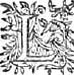
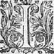
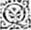
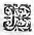

Éd.
Éd. de 1619, 480 recto sic 482 recto.

s'asseuroit qu'elle leur feroit l'honneur de les attendre, et les prendre dans son chariot. Ces estrangers qui ne vouloient luiluy desplaire en chose quelconque, se mirent incontinent en chemin, et Lerindas par le commandement de du Druyde se mit à courre pour l'atteindreattaindre . Cependant la NimpheNymphe et Damon faisoient leur voyage, parlant de diverses choses lors que le chemin le leur permettoit, car le Chevalier, fust par fortune ou à dessein, n'avoit voulu entrer au chariot, mais estoit armé et alloit à la portiere sur un tres-bon cheval que la Nimphe Amasis luiluy avoit envoyé, luy semblant qu'estant seul aupres de ces belles DamesNymphes, il falloit qu'il fust en estat de les pouvoir deffendre, et cela avoit esté cause que ce jour il portoit son habillement de teste et son escu, qu'il souloit les autres fois laisser à son escuyer. Marchant donc de cette sorte, lors qu'ils eurent passé le pont de la Bouteresse, et qu'ils entrerent dans un bois qui est le long du grand chemin, et tout aupres de la maison du sage Adamas, Halladin qui estoit assez loing derriere le chariot de Galathee, vit sortir à l'impourveuë trois Chevaliers hors du bois entre luy et Damon, qui touttous à coup baissansbaissant leurs lances, s'en allerent à course de cheval contre son maistre : le fidellefidele Escuyer voyant ces gens, ne peut en advertiravertir Damon sinon en luy criant le plus qu'il peut qu'il se printprist garde : Le Chevalier au cry de son Escuyer tourna la teste, et à mesme temps vit desja si pres de luy les trois Chevaliers, que tout ce qu'il peut faire fut de leur tourner le visage, mettre la main à l'espee, et se couvrir bien de son escu : mais à peine ceux-cy
estoient sortis du bois, que Galathee en vit autres trois, qui à toute bride vindrent comme les autres attaquer Damon : elle qui n'avoit encoreencores aperceu que ceux-cy, se mit à crier, et les NimphesNymphes aussi qui estoient dans son chariot, ce qui fut cause que le Chevalier faillit d'estre porté par terre, parcepar ce que tournant la teste vers elleelles , il fut en mesme temps attaint de deux lances qui le trouvant un peu tourné en arriere faillirent de le desarçonner. Le troisiesme qui venoit un peu apres les autres, receut pour tous trois, car Damon en colere de se voir si indignement traitter, luiluy donna un si grand coup sur l'espaule, qu'il luy avala presque tout le bras gauche, si bien que de douleur il tomba entre les pieds de son cheval. Mais parce que le Chevalier oyoit tousjours redoubler les cris des NimphesNymphes, tournant tout à faitfaict vers elles, il se rencontra avec les autres trois Chevaliers, qui plus avisez que les premiers, donnerent tous trois dans le corps de son cheval, de telle sorte qu'avec trois tronçons de lance, ilη fut contraintcontrainct de tomber, donnant si peu de loisir à son maistre, que tout ce qu'ilη peut faire fut de sortir à temps les pieds des estrieux. Sautant donc hors de la selle, et se voyant attaqué de cinq tout à la fois : il pensa que le meilleur estoit de se tenir aupres de son chevalη mort, pensant empescher les autres de le fouler aux pieds, mais ceux qui l'attaquoient voyant que leurs chevaux faisoient difficulté de s'en approcher, trois mirent pied à terre, et deux demeurerent à cheval, et tous cinq ensemble s'en vindrent contre luy d'une façon si resoluë qu'il cogneut bien avoir une forte partie. Luy toutefoistoutesfois
qui avoit souvent couru semblables fortunes, se resolut de leur vendre sa vie bien cherement, et ainsi d'abord qu'il les vit venir à luy, il s'avança contre ceux qui estoient à pied, et au premier qu'il rencontra il donna un si grand coup sur la teste, que les armes se trouvant bonnes, et l'homme n'ayant pas la force de soustenir la pesanteur du coup, il se laissa cheoirchoir à la renverse tout estourdy, et donna un si grand coup contre une pierre, que le heaume luy sortit de la teste, de sorte que le combat se faisant fort pres du chariot de Galathee, elle et ses Nymphes recogneurent facilement ce soldurier pour l'avoir veu souvent avec Polemas, qui leur fit juger que cette trahison venoit de luiluy , et cela fut cause que toutes ces Nymphes luiluy η conseilloient de ne s'arrester point là : mais de faire chemin, cependant que ces solduriers estoient occupez contre Damon : Mais la NimpheNymphe respondit qu'on ne diroit jamais qu'elle eust laissé un si gentil Chevalier dans un peril dont elle pensoit estre la cause. Cependant qu'elles parloient ainsi, elles virent que les leurdeux qui estoient demeurez à cheval, aussi tost que Damon avoit éloigné le sien l'estoient venu attaquer, et qu'au premier le Chevalier avoit mis l'épee dans le poitral jusques à la garde, mais le second ne perdant point le temps avoit heurté si rudement Damon, qu'il l'avoit estendu de son long en terre, non pas toutefoistoutesfois sans vengeance, car ilη avoit donné au deffaut de la cuirasse de la pointe de l'espee si avant dans le petit ventre du soldurier, qu'il estoit tombé mort à trois ou quatre pas de là. Des six il n'en restoit plus que trois qui fussent en estat de l'offencer
et tous à pied, mais si opiniastres à finir leur dessein, que deux tout à coup se jetterent sur luy aussi tost qu'il fut tombé, et quoy qu'il fust d'une extreme force et qu'il se debattist et fit tout ce qu'il peut pour se relever, si luiluy estoit-il impossible ayant ces deux hommes forts et puissans dessus luy, et sans doute le troisiesme qui s'estoit démeslé de son cheval, eust bien eu le moyen de le tuer, s'il n'eust eu peur de blesser ses compagnons que Damon tenoit embrassez, et toutefoistoutesfois il luy estoit impossible d'eviter la mort, car celuy-cy luy alloit cherchant les deffautsdefauts, lors qu'un berger et une bergere arriverent en ce lieu, et le berger voyant l'outrage que tant de personnes faisoient en un seul : - Et pourquoy, dit-il à l'Escuyer, ne deffendez vous vostre maistre ? Il jugeoit bien que c'estoit l'Escuyer de celuiceluy que l'on traittoit si mal par le desplaisir qui se voyoit en son visage. - Helas dit l'Escuyer, je voudrois bien, mon amy, qu'il me fut permis, mais je n'ay point encore l'ordreη de Chevalerie, et si j'avois mis les mains aux armes contre un Chevalier, je serois incapable de recevoir jamais cét honneur, - Que maudite soit, dit-il, la consideration, qui vous empesche de secourir au besoin vostre maistre ;η Et à ce mot, prenant l'espee et l'escu d'un Chevalier mort, il courut contre celuiceluy qui alloit tastant les deffautsdefauts des armes de Damon, et apres luy avoir crié qu'il se gardast de luiluy , luiluy deschargea deux si grands coups sur l'espaule, qu'il le contraignit se sentant blessé, de tourner vers luiluy , mais si mal à propos, que le berger le prenant à descouvert, luy donna de la pointe de l'espée soussouz le bras droict, si avant qu'elle
luy sortit de l'autre costé du corps, de sorte qu'il tomba mort tout aupres de ses compagnons : Le bruit et le cry qu'il fit en tombant, estonna
η
grandement ceux qui estoient sur Damon, et l'un d'eux voyant que c'estoit une personne desarmee qui avoit donné ce secours, ilη
ditdict à son compagnon qu'il gardast bien que celuy-cy n'eschappasteschapast , et qu'il alloit chastier celuy qui avoit tué leur amy par derriere, et s'Ξadressant
au berger, il le chargea de coups si furieux, qu'ayant l'advantageavantage de combatrecombattre armé contre un qui ne l'estoit point, il le blessa de deux ou trois grandes playes dans le corps, non pas que le berger ne se deffendit, et fort genereusement et avec beaucoup d'addresse, mais tous les coups desquels l'autre le frappoit, l'espee qui ne trouvoit point de resistance luy faisoit de tres-grandes blessuresblesseures . Damon
cependant n'ayant plus à faire qu'à un Chevalier, encore qu'il fut blessé en deux ou trois lieux dans les cuisses, si l'eusteut -il bien tost mis sous luy, et à mesme temps luy enfonçant un petit poignard dans les ouvertures de la visiere qui estoit à demy rompuë, il l'estendit mort en terre, et soudain s'en courut vers le berger qui l'avoit secouru : mais parce que son heaume ayant les courroyes toutes rompuës, de force de s'estre debattu en terre, luy estoit tourné en la teste, et l'empeschoit de bien voir de peur de perdre trop de temps à se le racommoder, il l'osta du tout, et s'en courut la teste toute nuë vers ce Soldurier, qui alors mémemesme avoit donné un si grand coup au berger, qu'il alloit chancelantchancellant pour tomber : mais Damon qui arriva ainsi qu'il se démarchoit pour le poursuivre, luy donna si à propos
entre la teste et les espaules qu'il la luiluy separa du corps, et à mesme temps le pauvre berger ayant veu faire sa vengeance, tomba de son long en terre presque mort : la bergere accourut incontinent vers luy, et se jettant en terre le mit sur son giron tout sanglant, si pleine de desplaisir de le voir en cét estat, qu'elle eust voulu estre en sa place. Damon s'avançoit pour luy aller ayder, lors que Galathee luy cria qu'il prit garde à celuiceluy qui l'attaquoit, et sans doute le Chevalier eust esté en grand danger de sa vie, sans le cry de la Nymphe : car ayant opinion que tous les six Solduriers
fussentestoient morts, il ne se prenoit pas garde que celuiceluy qui estoit demeuré esvanoüy s'estoit relevé, et s'en venoit par derriere luy deschargeantdescharger un grand coup sur la teste,
qu'estantη
nuë, il luy eust fenduë jusques aux dents, mais tournant le visage du costé du cry, il vit tout aupres de luy cet homme qui l'espee droictedroite le frappa d'un si pesant coup qu'il luy couppa l'escu en deux, en faisant cheoir
choir une grande partie en terre ; et parce que c'estoit un tres-vaillant homme, et qui combatoitcombattoit comme une personne desesperee, le combat fut fort dangereux pour Damon, qui desja blessé en deux ou trois lieux, ne pouvoit se servir de son adresse et de sa legereté comme de coustume, toutefoistoutesfois à la fin il en vint à bout, et luy donnant de l'espee dans le gosier, le luy couppacoupa , de sorte que le sang incontinent l'estouffa.
Cependant
Adamas arriva sur le mesme lieu, et Alcidon et Hermante voyant tout ce spectacle, et croyant qu'il y eut encore quelque chose à faire, se saisirent promptement chacun d'une
espee et d'un escu des morts, et s'en coururent ververs le chariot de la NimpheNymphe pour la deffendre, et se mettant au devant d'elle demeurerent en estat, qui faisoit bien juger qu'ils sçavoient bien faire autre mestier que celuy de berger. Quant à Adamas, s'approchant de la bergere, et voyant le berger qu'elle tenoit en son giron si fort blessé, avec son aideayde il le deshabilla pour luy bander ses playes, ce qu'il achevoit de faire lors que la NimpheNymphe ayant veu la fin de ce Soldurier alloit vers Damon pour sçavoir comment il se portoit. Le Chevalier qui avoit bien veu que celuy qui l'avoit secouru estoit en mauvais estat, soudain accourut vers luiluy pour luy donner quelque secours, mais il trouva qu'Adamas luy avoit desja bandé ses playes, et que la bergere luy tenant la teste appuyee estoit toute couverte de larmes, et sans oster les yeux de dessus luy, pleine de douleur et de déplaisirdesplaisir , le voyoit tendre à la mort. Le berger sentant bien que sala fin s'approchoit, essaya deux ou trois fois de tourner la teste pour la voir, mais estant estendu de son long et couché tout au contraire, il luy fut impossible, et toutefoistoutesfois sentant les larmes qui luy couloient sur le visage : - Consolez vous, luy dictdit -il, Madame, et ne craignez point que celuy qui est le juste juge de tousnous autres , ne vous pourvoye de quelqu'un en ma place pour vous reconduire en vostre patrie, j'emporte ce seul regret avec moy dans le tombeau, de vous laisser en cette contree, et esloignee, sans voir personne auprés de vous qui aitayt le soingsoin que j'ay eu de vous servir jusques icy : Mais je sçay que Tautates nous escoute et qu'il me fera cestecette grace de ne
vous laisser point seule dans ces boisη si dangereux. Il vouloit parler d'avantage, mais la foiblesse l'en empescha, et la bergere alors, - Et quoy, dit-elle, as-tu bien le courage de m'abandonner à ce besoin, et de me laisser seule apres m'avoir tant de fois promis que jamais tu ne partirois d'aupres de moy, que nous n'eussions trouvé le Chevalier que nous cherchions ?chercions Est-ce ainsi que tu me tiens ta promesse, me delaissant dans ces boisη effroyables, sans aideayde , sans secours, et sans support ? - Madame, respondit le berger, ne m'accusez point de la force que le destin me faictfait , je proteste le Ciel et tout ce qui nous voidvoit et nous entend, que mon dessein ne fut jamais de vous éloigneresloigner que je ne vous eusse remise entre les mains du Chevalier du Tigre, ainsi que vous desirezdesiriez . Mais, helas !η si les destinees coupentη le filet de ma vie plustost que je n'ay peu satisfaire à ce dessein en quoy suis-je coulpable ? Et de quoy me peut-on accuser, sinon que j'ay plus entrepris que je ne meritois pas d'executer ? mais en cela il en faut blasmer le desir que j'ay eu toute ma vie de vous rendre le tres-humble service, que tous ceux qui vous voyent sont obligez de vous rendre. Or, Madame, si durant tout lece voyage j'ay manqué à l'honneur et au respect que je vous dois, ou au soing que j'estois obligé d'avoir de vous, je ne veux point que ce grand Tautates me pardonne mes autres erreurs, sçachant bien que je n'ay jamais eu qu'une volonté si entiere et pure pour vostre service, qu'il est impossible que j'aye esté si mal-heureux que d'y avoir manqué, et parce que la conscienceη sert de mille tesmoings, je l'ay si nette de toute mauvaise
intention, que si j'eusse receu cette grace de vous remettre avant ma mort en lieu asseuré, je m'en irois avec toute sorte de contentement en l'autre vie.
Le Chevalier estoit accouru vers lece berger pour l'assister, mais d'abord qu'il jetta les yeux sur luy, et qu'il vit son visage, il demeura si ravy d'estonnement, que sans bouger d'une place, il s'arresta un long-temps immobile à le considerer : que si sala bergere n'eust eu la teste baissee, et qu'il l'eust peu voir, sans doute son admiration eust encore esté plus grande, mais elle se panchoit toute sur le visage du berger, tant pour ne luy donner la peine de tourner les yeux vers elle, que pour mieux ouyroüir ce qu'il luy disoit, il luy sembloit bien de cognoistre ce visage, et en quelque sorte le ton de cette voix : mais les habits dont ce berger estoit revestu, et les pasleurspasleures mortelles, dont ses profondes blesseuresblessures le ternissoient, le mettoient en doute que ses yeux et ses oreilles ne le trompassent. Cependant qu'il estoit en cet estat, Halladin s'estoit approché de luy pour luy bander quelques playes desquelles il voyoit couler le sang, mais il estoit tant attentif à considerer ce berger, que sans respondre à son Escuyer, ny sans tourner les yeux vers luy, il se laissa oster l'escu du col, et l'on commençoit de le vouloir desarmer à l'endroit où l'on voyoit le sang, car le Druyde
*et Galathée s'estoient approchez de luys'estoit approché de luy, et Galathee
,
et lors que le berger tournant les yeux de fortune sur l'escu que Halladin avoit posé en terre aupres de luy . - O Dieu, dit-il Madame, qu'est-ce que je voy : Et lors tendant à toute force le bras, il luy monstra l'escu avec lela Tygreη
se repaissant d'un cœur humain, et
recognoissant que c'estoit veritablement celuy du Chevalier qu'ils cherchoient : - O heureux ThersandreTersandre, s'escria-t'il et bien -aiméaymé du Ciel, puis qu'il t'a permis de conduire Madonthe entre les mains de celuy à qui son aveugle affectionη l'a donnee, et qu'il ne veut pas que tu vives d'avantage pour ne te donner les desplaisirs d'en voir un autre plus heureux qu'il n'a voulu que tu ayes esté ! Damon oyant le nom de Thersandre, et apres de Madonthe, et l'un et l'autre ayant tourné les yeux vers luy, eust esté bien aveugle s'il ne les eust recogneus. Il vit donc cette Madonthe qu'il alloit cherchant, et ce Thersandre, duquel il avoit tant desiré la rencontre pour luy oster la vie : Et en mesme temps l'Amour de MadontheMadonte, la haine de Thersandre, l'extreme contentement de l'avoir trouvee, et l'extreme colere de se voir devant les yeux de celuy duquel il pensoit estre le plus offencé, le saisirent de sorte qu'il se mit à trembler, comme s'il eust esté saisi d'un tres-grand accez de fievre. Il ne sçavoit s'il s'en devoit aller, ou s'il devoit faire sa vengeance, et tuer le ravisseur de son bien, devant les yeux de celle de laquelle il pensoit d'avoir esté si maltraictémal traitté . L'injure pretenduë l'y conjuroitconvioit , l'affection et le respect l'en retiroitη , mais en finenfin le souvenir qu'il eut de l'Oracleη qu'il avoit receu à Mont-verdun, chassa de son ame tout desir de vengeance. Et soudain se démeslant de ceux qui estoient autour de luy, et qui pensoient que tous ces tremblemens qu'ils voyoient en luy, fussent des accidens de ses blessures, il s'en courut vers la bergere en s'escriant, - O Madonthe ! ô Madonthe ! est-il possible que le
Ciel m'aitayt enfin voulu donner ce contentement de vous voir avant que de finir mes jours ? Et à ce mot, mettant un genouïl en terre devant elle, il luy voulut prendre la main pour la luy baiser : mais Madonthe surprise plus qu'on ne sçauroit penser, premierement d'avoir rencontré ce Chevalier du Tigre qu'elle alloit cherchant, puis d'avoir recogneu que c'estoit Damon, qu'elle croyoit mort il y avoit si long temps, demeura tellement ravie, que se leη voyant à genoux devant elle, lors que moins elle l'esperoit, elle ne peut faire autre chose au lieu de luy laisser prendre sa main, que de luy tendre les bras, et en l'embrassant elle fut si outree de cette prompte joye, et de cette inesperee rencontre, qu'elle se laissa aller comme morte sur son visage. Damon de son costé n'en fit pas moins, de sorte que sans Halladin qui y accourut promptement, et qui se jettant en terre les appuya, sans doute ils fussent tous deux tombez. Thersandre qui avoit aussi recogneu Damon, lors qu'il s'estoit approché, et qu'il l'ouyt parler, levant les yeux au Ciel, n'ayant plus la force d'y hausser les mains. - O Dieu ! dit-il combien es-tu juste, bon et puissant ! Juste, rendant Damon à Madonthe, et Madonthe à Damon : Bon voulant faire tout à coup trois personnes si heureuses, ces deux Amans ayant rencontré tout le bonheur qu'ils desiroient, et Thersandre ayant satisfait à son devoir et à sa promesse, et puissant, ayant peu ordonner toutes ces choses lors que tous trois nous les esperions le moins. O Madonthe ! et ô Damon ! soyez contens, et vivez ensemble à longues annees avec toute sorte de repos et de bon-heur.
A ce mot, il devint pasle, et peu apres s'alongissant et tremblant, il se mit à baaillerbailler , et rendit l'esprit avec un visage qui monstroit bien qu'il laissoit cette vie avec contentement. La NympheNimphe cependant et Adamas qui s'estoient avancez vers le chevalier, et toutes les autres Nimphes de mesmemesmes demeuroient estonnees, contemplanscontemplant ces trois personnes, qui sembloient estre aussi peu vivantes les unes que les autres. Mais Halladin qui estoit porté d'une extreme affection envers ce maistre qu'il aimoit :aymoit - Si la pitié, dit-il, vous touche point, Madame, je vous supplie de commander que Damon soit desarmé, afin que la perte de sang ne soit cause de nous en priver apres un si grand hazard. - Comment, dit Alcidon, Escuyer mon amy, est-ce icy le veillant Damon vaillant d'Amon d'Aquitaine ? - C'est luy-mesme, respondit l'Escuyer, qui apres tant de loingtains voyages, semble s'estre venu entrerenterrer en cestecette contree, où il a plus respanduη de sang en 8.huict joursη qu'il y est, qu'il n'a fait en tant d'annees, par tous les autres lieux où il s'est trouvé. - Mon pere, dit alors Alcidon, je vous conjure de secourir ce Chevalier, vous asseurant qu'il n'y en a point un meilleur, ny un plus accomply en toute l'Aquitaine : Et lors mettant un genoüil en terre, et Hermante de l'autre costé, il le commença à desarmer sans qu'il en sentist rien. Quant à Madonthe, apres avoir demeuré quelque temps en son évanoüissement enfin elle revint, et ouvrant les yeux, et voyant chacun empeschementempesché autour de Damon, elle pensa qu'il fust mort des blessuresblesseures qu'il avoit receuës en ce combat. - O Dieu ! s'escria-t'elle, se destournant les mains, et se les frappant
à grands coups : O Dieu ! falloit-il que je te retrouvasse pour te reperdre si tost ? et falloit-il que je te revisse pour ne te revoir jamais plus ? Miserable
Madonthe ! et quelle fortune t'attend desormais, puis que les biens que tu reçois ne te sont donnez que pour t'en mieux faire ressentir la prompte perteη
? O Ciel ! qu'est ce que tu reserves plus
pour mon supplice, et puis que tu as verséη
sur moy toutes les plus grandes amertumes qu'une personne vivante peut ressentir ? Qu'attens-tu plus à me ravir la vie qui me reste, afin de me faire aussi bien espreuver ta rigueur dans le tombeau, que je l'ay soufferte sur la terre ? A ce mot, les sanglots et les larmes luy empescherent de sorte le passage de la voix, qu'elle fut contrainte de se tarietaire
mais son silence apporta tant de compassion à toutes ces Nymphes, que cependant qu'Alcidon, Daphnide, Hermante, Adamas, et Galathee, estoient autour du Chevalier, elles prindrent la bergere sous les bras, et l'ostant presque à force du lieu où elle estoit, l'esloignerent de ce sang et de ces morts, et la mettant en terre, l'une d'elles la tenoit appuyee, et les autres assises toutes à l'entour, luy donnoient toute la consolation qu'elles pouvoient.
Cependant
Damon fut desarmé, ses playes bandees, au mieux que l'incommodité du lieu le permettoit, et peu apres on luy vit ouvrir les yeux ; mais d'autant que la foiblesse l'empeschoit de se pouvoir lever, il tourna deux et trois fois la teste pour retrouver Madonthe, et Halladin cognoissant bien ce qu'il cherchoit, - Ne vous mettez point en peine, luy dit-il, Seigneur, elle
n'est pas loing de vous, cette tant aymee Madonthe, il faut seulement que vous repreniez un peu de courage, afin de luy conserver celuy qui l'ayme si parfaitement. - Halladin, respondit Damon, et qu'est-ce que tu me dis de courage ? pense-tu que celuy en puisse avoir faute, qui en a eu assez pour aymer les perfections de Madonthe ? mais où est elle ?η et qui est-ce qui me cache ce beau visage ? est-elle point encores aupres de Thersandre : - Thersandre, respondit l'Escuyer, est mort en vous sauvant la vie, et par là vous voyez combien l'Oracleη est veritable, et combien vous devez vous resjouyrresjoüir , puis qu'il semble que vous soyez parvenu à la fin de vos peines : - Jamais, dit-il, ce queque je souffriray pour un si bon subjetsujet n'aura ce nom de peine que tu luy donnes, mais Halladin ayde moy à me relever afin que je voye si ce que tu me dis est vray. Madonthe qui avoit ouy tout ce que Damon avoit dit, reprenant ses esprits, et joyeuse de le voir en meilleure santé qu'elle n'avoit pensé, se relevant à toute force, s'en courut vers luy, où arrivant, sans regarder en la presence de qui elle estoit, elle s'abouche sur luy, et sans pouvoir de quelque temps former une parole : en fin retiree par Halladin, qui craignoit que ces trop grandes caresses ne fissent mal à son maistre, et s'assiant en terre aupres de luy les bras croisez, et le considerant d'un œil plein d'admiration : - Est-il bien possible, luy dit elle, que le Ciel m'aitayt reservee à ce contentement de te voir Damon encore une fois ? Est-il possible que ce Chevalier du Tygre qui me vint oster d'entre les mains de la perfide Leriane, soit
ce Damon à qui elle avoit malicieusement donné tant d'occasion de me hayr ? Est-il possible, ô Chevalier, que ton affection aitayt eu tant de force par-dessus le juste despit que tu devois avoir conçeu contre moy, qu'elle aitayt peu pousser ta generosité à venir sauver la vie à celle que tu devois plus hayr que la mort ? J'avoüe Damon, que tu te peux dire le plus parfaictη Amant qui fut jamais, et moy la mieux aymee de toutes les filles du monde : Mais Chevalier, s'il est vray que tu sois ce Damon que je dis, et si les desplaisirs que tu as receus de moy, et la longue absence n'ont point changé cette affection de laquelle je parle, pourquoy tardes-tu tant à m'en asseurer, et que ne me tens-tu la main en signe de la fidelité que je veux croire que tu m'as conservee ? Damon alors baisant la main, et luy prenant la sienne : - Ouy Madame, luy dit-il, je suis celuy-là mesme que vous dites, et je vous promets n'y avoir en moy rienrien en moy de changé, sinon que je vous ayme encore d'avantage que je ne faisois : et quelque occasion que la malice de Leriane m'aitayt donnee, ou que le bon-heur de Tersandre m'aitayt peu representer, le Ciel est tesmoing qui a souvent ouy mes protestations et le Soleil qui a veu toutes mes actions, que jamais je n'ay peu estre approché de la moindre pensee qui eust intention de diminuer l'amour que je vous ay vouée. - J'avoue, reprit Madonthe, que la trahison de Leriane vous a donné sujet de me haïr, et de croire tout ce qu'elle a voulu du bon-heur de Thersandre : mais je jure par la memoire de mon pere, et par tout le contentement que je puis encoreencores souhaitter, n'avoir jamais esté trompee
d'elle que pour le desir qui me pressoit d'estre plus aymee de vous, et que toutes les faveurs de Thersandre n'estoient faittesfaictes que pour r'appeller Damon, et le retirer d'une autre affection imaginee
η
, ny que le dessein qui m'esloigna de mes parens et de ma patrie, n'a esté que pour chercher Damon sous le nom et les armes du Chevalier du Tygre. - O Dieuxη
s'escria Damon, y a-t'il quelque Chevalier au monde plus heureux que celuy-cy, puis que je reçois ces asseurances de la bouche de Madonthe ?
Elle vouloit repliquer lors qu'Adamas craignant que le sejour en ce lieu ne fut guere asseuré, ou que les blesseures de Damon n'empirassent, dit à Galathee qu'il luy sembloit bien à propos de faire emporter ce Chevalier en quelque lieu où il peut estre mieux pensé, et que voyant la grande foiblesse qu'il avoit, il luy sembloit fort à propos de le faire reposer pour quelquesquelque jours en sa maison, parce qu'elle estoit si proche de là qu'il ne falloit que monter la petite coline,
sur laquelle elle estoit assise : La necessité fit consentir la NimpheNymphe à cét avis, et ayant envoyé prés de là dans quelques hameaux, l'on fit venir quelques
hommes avec des branquartsbranquars qui emporterent Damon dans la maison d'Adamas, et le corps de Thersandre dans la ville de Marcilly, pour luy donner une honorable sepultureη
; et en mesme temps Galathee advertit Amasis par Lerindas, de tout ce qui luy estoit arrivé, la suppliant de trouver bon qu'elle mit Damon en lieu de seureté, et qu'incontinent apres elle l'iroit trouver, pour recevoir ses commandemens.
Il fut impossible à Madonthe de n'accompagner de larmes le corps du pauvre Thersandre, et de ne regretter sa perte, qu'elle euteust bien mieux ressentie, sans la rencontre de Damon, et toutesfois l'affection, la fidelité, et la discretion qu'il luy avoit fait paroistre tant d'annees, ne luy pouvoient revenir devant les yeux de l'esprit, qu'elles ne contraignissent ceux du corps à donner quelques larmes, pour payer en quelque sorte tant de services et tant de peines ; cependant l'on emportoit Damon, qui tournant les yeux de tous costez, pour voir que faisoit Madonthe, et apercevant le corps de Thersandre, ne peust le laisser partir sans l'accompagner d'un souspir, ne sçachant encores s'il le devoit desirer en vie : et toutefoistoutesfois considerant qu'il estoit mort pour le sauver, sa generosité le contraignit de dire : - Or Adieu amy, et reposereposes contentη
coronné
de cette gloire, d'avoir eu Damon pour ennemy, et l'avoir obligé à regretter ta perte, et à te nommer son amy. A ce mot il tendit la main à Madonthe, qui s'estoit approchee du branquart, et qui ne l'abandonna plus qu'il ne fut dans la maison du sage Adamas, quoy que Galathee la pressast fort d'entrer avec elle dans son chariot, aymant mieux suivre à pied Damon, que de l'esloigner d'un moment.
D'autre costé Adamas ayant fait cognoistre Daphnide, Alcidon, et les autres de leur compagnie à la Nymphe, et elle leur ayant dit toutes les paroles de civilité, que le trouble où elle estoit luy pouvoit permettre, les fit entrer tous deux dans son chariot, et les autres dans ceux de
ses Nymphes, car Adamas voulut suivre Damon que l'on portoit par un chemin plus court, afin d'estre aussi tost que luy en sa maison, pour le faire mieux loger, parce que les chariots estoient contraints de faire un grand destour, pour monter plus aisémentaysément la coline qui estoit un peu trop aspreη par le droit chemin. Mais cependant Lerindas laissant venir doucement le corps de Thersandre, se mit au grand trot pour donner promptement l'advis à Amasis à Amasis l'advis que Galathee luiluy mandoit, et quoy qu'il apperçeut bien plusieurs personnes à main gauche qui chassoient dans la campagne, et qu'il euteust opinion que ce fut Polemas, si est-ce qu'il ne s'arresta point, ayant commandement de ne parler à personne qu'à Amasis, mais celuy que Polemas avoit mis prezprés du chemin pour prendre garde à ceux qui y passeroient, courut l'en advertir, et peu apres un autre luy vint apporterrapporter que l'on voyoit venir un branquart, où il sembloit qu'il y eust quelqu'un dessus. Luy qui ne chassoitn'estoit venu en ce lieu que pour sçavoir tant plustost ce qui seroit avenuadvenu de Damon, creut incontinent que c'estoit luy que l'on portoit ou mort, ou bien blessé, et s'en resjouyssantresjouïssant grandement en soy-mesme, et faisant semblant d'en estre en peine, il s'y en alla au petit pas, apres y avoir renvoyé en diligence ceux qui luy en avoient apporté les nouvelles, et par le chemin, feignant d'ignorer que Galathee fust allee à Bon-lieu, ny qu'elle deust revenir par là, il demandoit à ceux qui estoient avec luy, qui pouvoit estre celuy que l'on portoit de cetteceste sorte. Personne ne sçavoit que luy respondre, parce qu'il n'avoit rien
descouvert de cestecette entreprise à pas unη de tous ceux qui estoient autour de luy, jugeant bien qu'il faut divulguer les desseins que l'on ne veut pas executer : Il n'eut guereguiere marché que l'un des siens s'en retournant luy dit, que c'estoit un mort que Galathee faisoit emporter à Marcilly, et qui avoit esté tué en sa presence dans le bois plus proche. Ce fut bien alors qu'il eut opinion que ses solduriers avoient exécuté ce qu'ils avoient promis, et en son cœur en avoit le contentement que la vengeance peut donner à une ame offencee, mais il ne luiluy dura qu'du autant qu'il retarda d'arriver où estoit celuy que l'on emportoit, parce qu'alors il vitvid bien que ce n'estoit pas un chevalier, et demandant à ceux qui l'avoient en charge, où ils avoient pris ce corps, et où ils le portoient, ils luy respondirent que Galathee avoit esté attaquee par six chevaliers, et qu'un seul les avoit tous deffaits, que toutefois ce berger luy ayant voulu donner secours avoit esté tué, mais que les autres y estoient tous demeurez morts, et qu'ils portoient ce corps par commandement de Galathee, pour le faire honorablement enterrer à Marcilly : - Et le Chevalier, dit Polemas, qui a resisté à tous les autres, qu'est-il devenu ? - Il est fort blessé, respondirent-ils, et l'on l'a emporté en la maison du Grand Druyde. Polemas alors faisant semblant de ne sçavoir rien de cét affaire : - Voilà que c'est, reprit-il en s'en allant, de licentier desces solduriers sans raison, je m'asseure que ce sont ceux queη nous avons cassez, qui en colere contre Damon, ont voulu s'en venger, et l'ont attendu dans ce bois : Et cela il le disoit afin de preparer son excuse,
lors que Galathee s'en plaindroit, parce qu'il eut bien opinion qu'ils seroient recogneus. Et continuant encores quelque temps la chassede chasser , pour oster à tous l'opinion qu'il eust quelque part en cette entreprise, depescha incontinent un des siens, pour aller de sa part se resjouyrresjouïr avec Galathee, du bon-heur que Damon avoit eu en cette contreerencontre
η
,
et luy commanda de prendre bien garde à toutes les paroles, et à toutes les actions de la Nymphe, et en mesme temps en depescha un autre pour en donner avis à Amasis, la suppliant de ne permettre plus que Galathee marchast ainsi seule, et sans les gardes ordinaires qui estoient convenables à sa grandeur ; il fit le mesme commandement à celuy-cy, de prendre garde à tout ce que diroit et feroit Amasis
et cependant il continua sa chasse jusques à la nuict .
Depuis que Clidamant, Guyemants, et Lindamor, avec la plus grande partie des Chevaliers de la contree, estoient partisη
pour aller en l'armee des Francs, Polemas qui estoit demeuré
comme Lieutenant d'Amasis, et en la place que Clidamant
souloit avoir : d'un dessein ambitieux, avoit haussé ses esperances à se rendre Seigneur de cette Province, et toutefois
" considerant combien il est mal-aysémalaisé que les
" loix fondamentalesη
d'un Estat soient renversees sans
" une grande violence, et combien la domination qui est telle
" est peu asseuree, il fit resolution d'espouser Galathee, et de ne rien laisser d'intenté pour y parvenir ; et parce qu'il voyoit deux voyes pour achever son entreprise, l'une de la douceur, et l'autre de la force : Il pensa qu'il falloit essayer celle qui venoit de la bonne volonté, et en cas qu'elle
vint à manquer, recourre apres aux extremes remedes. Pour suivre ce premierη dessein ; il voulut que ce feintfaint Druyde qui se nommoit ClimantheClimante, et qui avoit autrefois donné la bonne fortune η à Galathee, revint encores une fois pour refaire de nouveauencores ce premier artifice, ayant opinion que ou la Nymphe l'avoit oublié, ou que le feintfaint Druyde ne s'estoit pas bien fait entendre. Il le fit donc venir pres de ces mesmes jardins de Mont-brison, où il avoit esté l'autre fois, et ayant ce luy sembloit donné encores meilleur ordre à ses artifices qu'auparavant, il y avoit desja deux ou trois joursη qu'il commençoit de se laisser veoir, esperant que Galathee ne manqueroit pas de l'aller trouver comme elle avoit faict autrefois : Et afinà fin que le temps de l'esloignement de Clidamant, et de Lindamor ne se perdit pas inutilement, il tenoit quantité de solduriers dans les Estats des Vissigots, et des Bourguignons, qui sans se dire telsη demeuroient dans les villes voisines, et n'attendoient que son commandement. Il avoit aussi acquis l'amitié des Princes voisins, par presens faictsfaict à leurs principaux officiers, et dans le pays des SegusiensSecusiens faisoit paroistre une si grande liberalité et au peuple et aux Solduriers, tant de courtoisie et de douceur aux Chevaliers, et tant d'honneur et de respect aux Druydes, Eubages, Sarronides, Vacies, et autres Sacrificateurs, qu'il y en avoit fort peu qui ne desirassent le mariage de Galathee et de luy, si ce n'estoient ceux qui plus avisez s'estoient pris garde qu'il forçoit en cela son naturel, et qu'il n'en usoit de cette sorte, que pour parvenir à cetteceste
souveraine puissance, laquelle ayant obtenuë, il ne maintiendroit pas avec les mesmes moyens qu'il l'auroit acquise, mais avec desde bien plus rudes et plus tyranniques. Amasis avoit demeuré long-temps sans
" se prendre garde de toutes ces choses, par ce que
" mal-aysément une ame bien-nee se peut-elle imaginer
" qu'une personne outree d'obligation, se laisse
emporter
" à l'ingratitude, et à la trahison. En fin elle commença de s'en appercevoir, par le moyen d'une lettreη
qui luy tumbatomba
entre les mains, par laquelle elle vit l'estroitte amitié que Gondebaut avoit avec luy, cela fut cause qu'aussi tost que Lerindas luy eneut
dit l'accident qui estoit arrivé à Damon, et que c'estoit des solduriers de Polemas, elle eut opinion qu'il l'avoit faitfaict faire, et toutefoistoutesfois
" sçachant combien il est dangereux
de faire paroistreη
" à son principal officier d'avoir quelque doute de sa fidelite,
" sans estre en estat de se pouvoir opposer à mesme temps
" à ses mauvais desseins, lors que le soldurier de Polemas luy vint dire de sa part ces nouvelles, elle feignit de recevoir un grand contentement du soing qu'elle luy voyoit avoir, et de la conservation de Galathee,
et de sa grandeur, et luy remanda qu'elle suivroit et en cela et en toute autre chose son bon avis : Et à mesme temps le luy ayant renvoyé, elle partit de Marcilly, et s'en alla en la maison d'Adamas
soubssouz la conduitte d'une fort bonne troupetrouppe de CavaliersChevaliers qu'elle mena pour la servir, parcepar ce que les nouvelles qu'elle avoit euëseuë de l'armée des Francs, la pressoient infiniment, et elle craignoit que ne la pouvantη
pas tenir secrette longuement, Polemas ne se resolut
à quelque meschant dessein, comme depuis quelques jours elle en estoit entree en opinion.
Galathee estoit à peine arrivee au logis d'Adamas, que le soldurier de Polemas y arriva, qui luy fit assez troublé
*
mal
la harangue que son maistre luy avoit commandee : mais elle ne pouvant dissimuler le desplaisir qu'elle avoit receu, luy respondit : - Dites à vostre maistre, que je suis fort mal satisfaicte de ceux qui sont à luy, et que s'il n'y met ordre, j'auray occasion de m'en plaindre. Cependant
Damon ayant esté mis au lict fut visité par les Chirurgiens, et ses plaiesplayes trouvees plus douloureuses que dangereuses, parcepar ce qu'encores qu'il eust la cuisse percee en deux ou trois endroitsendroicts , si est-ce que de bonne fortune,
il n'y avoit ny veine, ny nerf offencé qui fut d'importance, si bien que Madonthe estoit si ravie de contentement, qu'elle ne pouvoit assez en donner de cognoissance. Et les Chirurgiens qui cogneurent combien le contentement est necessaire à la guerisonguarison du corpsη
,
supplierent Madonthe de ne bouger d'aupres de luy : Et parcepar ce qu'elle
desiroitη
sçavoir quelle avoit esté sa fortune depuis qu'elle estoit partie d'Aquitaine, elle luy raconta non seulement ce qu'il avoit demandé, mais de plus tous les artifices dont Leriane avoit usé à l'avantageadvantage de Thersandre, et luy rapporta tout ce discours si naifvementη
, que tous ceux qui l'ouyrent, jugerent qu'il estoit
veritable : mais lors qu'elle racontoit les desplaisirs qu'elle eut de sa mort, quand Halladin apporta à Leriane le mouchoir plein de sang, et la bague de Thersandre à elle, elle ne pouvoit encores en retenirη
les larmes : Et puis quand elle
representoit l'horreur qu'elle avoit de mourir d'une mort si honteuse, et le secours inesperé qu'elle avoit receu du Chevalier du Tygre.
" - Il faut bien, disoit-elle, que nous ayons en nous quelque
" chose qui nous advertit des choses plus secrettes, par ce
" que je ne vis pas si tost entrer ce Chevalier, que je ne luy prisse une certaine affection qui n'estoit pas commune : Et encores que le combat estant finy, il s'en allast sans hausser sa visiere, j'avouë que je l'aimayaymé d'amour, sans l'avoir jamais veu au visage : Et cela fut cause, continuoit-elle, que je me resolus de le venir chercher du costé où il m'avoit dit, Mais cruel, il faut bien, Damon, que je vous donne ce tiltre ? Comment vous en pûtespûstes-vous aller sans me dire qui vous estiez ? Comment m'ayant donné la vie du corps, me voulustes-vous ravir celle de l'ame ? Et pourquoy ne me fistes-vous sçavoir que vous viviez, afinà fin de tarir pour le moins les pleurs, qui sans cesse comme d'une source immortelle, sont continuellement sortis de mes yeux ? O Damon ! que vous m'eussiez espargné de souspirs, de peines, de larmes, et de travaux incroyables : Mais non, Damon, la faute n'en est pas à vous, mais à ma fortune qui vouloit que j'achetasse plus cherement le contentement de vous sçavoir en vie, de vous voir, et de vous avoir : apres elle luy raconta le dessein qu'elle avoit fait de trouver ce Chevalier incogneu, sans presque sçavoir pourquoy elle le cherchoit : mais en effect pensant que le destin qui conduit toute chose soussoubz la sage providenceη
du grand Tautates, l'avoit ainsi ordonné, afinà fin de pouvoir rencontrer
de cette sorte ce Damon qu'elle alloit cherchant soussoubs le nom d'un autre, - Car, disoit-elle, j'ay opinion que si je ne vous eusse trouvé de cestecette sorte, jamais je n'eusse eu le bien de vous voir, puis que vous alliez si curieusement vous esloignant et vous cachant de nous : en fin voyez comme Dieu rapporteη toute chose à son commencement. Thersandre avoit esté la premiere cause de nostre separation, et Thersandre a esté la derniere cause de nous avoir remis ensemble : que les peines qu'il a prises à me servir et me conduire avec tant de fidelité, luy soient recogneues par la bonté de Bellenus au lieu où il est, car il s'en va avec cette reputation aupres de moy, de n'avoir jamais faict faute contre le respect qu'il me devoit, que celle que la malicieuse Leriane luy avoit faitfaict commettre, par les esperances trompeuses qu'elle luy avoit donnees, et ausquelles un plus advisé que luy, se fut peut-estre bien laissé decevoir. Et sur ce propos elle racontaη comme sa nourrice mourut sur le Mont d'or, la rencontre qu'elle eust de Laonice, de HilasHylas, et de Tircis, et en fin comme l'Oracleη l'avoit faitfaict venir en ce pays de Forests, où elle avoit tousjours esté en la compagnie d'Astree, Diane, Philis et ces autres bergeres de Lignon, d'aupres desquelles elle estoit partie ce matinη en dessein de se retirer en Aquitaine parmy les Vestales ou filles Druydes. Bref elle n'oublia rien de tout ce qui luy estoit advenu qu'elle ne luy reportastrapportast fidelement, ce que Damon escoutoit avec tant de contentement, qu'il ne pouvoit assez remercier Dieu du bon-heur où il lese voyoit, et apres il luy dit : - Je vous raconteray à
loisir : Madame, quellequ'elle a esté ma vie depuis que je n'ay eu l'honneur de vous voir : mais à cette heure que les Mires me deffendent de parler, je ne veux pas vous faire un si long discours, c'est assez pour ce coup, que je vous die, que j'espere d'oresnavant nostre fortune meilleure, par ce que l'Oracleη que j'ay consulté le dernier à Mont-Verdun, m'a asseuré que je serois remis de la mort à la vie, par celuy des hommes que je haïssoishayssois le plus, et je voy bien qu'il a voulu entendre que ce pauvre Chevalier vous conduiroit au lieu où je vous ay trouvee, car il est vray que je pouvois estre estimé mortη , estant privé du bien de vostre veuë, et que maintenant je puis dire que je vis, ayant le bon-heur d'estre aupres de vous, et quand je considere cét accident, il n'y a rien en quoy je n'admire la prevoyance de ce grand Dieu, qui a si bien veu que Thersandre me donneroit doublement la vie, je veux dire celle du corps, par le secours qu'il m'a faitfaict , et celle de l'ame, vous conduisant si à propos et si inopinément où j'estois, sinon qu'il me reste encores une doute en l'Oracle qu'il m'a rendu, car voicy quel il a esté.
Et toy parfaict Amant,
Lorsque tu parviendras, où parle un diamant,
Tu seras r'appelérappellé
de la mort à la vie
Par celuy des humains
A qui plus tu voudrois l'avoir desja ravie,
Car je voy tout le reste avoir eu effect horsmis d'estre parvenu où un diamant parle, si ce n'est
qu'il aytaye voulu entendre que vous soyezη un diamant, en la constance et en la fermeté de vostre amitié : le Druyde qui avoit attentivement escouté leurs discours, - Si j'eusse eu le bien, ditdict -il en sousriant, d'estre cogneu de vous, vous eussiez aysément entendu l'obscurité de cét Oracle, par ce que je m'appelle Adamas ; et ce mot signifie, en la langueη des Romains, un diamant, de sorte qu'il vouloit vous faire sçavoir qu'aussi tost que je serois aupres de vous, cét accident vous arriveroit ; et il est advenu tout ainsi, car à l'heure mesme que Alcidon, Daphnide et moy sommes venus sur le lieu où nous vous avons trouvé, vous avez recogneu Madonthe : - J'advouë, dit Damon, qu'il n'y a plus rien à desirer pour l'esclaircissement de cét Oracle, que j'ay retrouvé si certain pour mon bon-heur, et dont je remercie la bonté de celuy qui l'a ainsi ordonné, lors que je l'esperoisignorois le moins : Mais mon pere, continua-t'il, et tournant les yeux par toute la chambre, vous me nommez deux personnes : que si ce sont celles que j'ay veuës porter ailleurs ces noms, je m'estimerois infiniment heureux de l'd' avoir rencontrees en ce lieu. Alors Alcidon s'avançant et l'embrassant, - Ouy Damon, ce sont ces mesmes Daphnide, et Alcidon que vous dites, et qui sont conduits en cette contree, qui se peut dire celle des merveilles, par le mesme amour qui vous y a faitfaict venir ; Et à mesme temps Daphnide le venant salüer luy dit : - J'attendois à vous rendre ce devoir que Madonthe vous eust raconté, ce qu'avec raison vous desirezdesiriez si fort de sçavoir de sa fortune, ne voulant estre cause de vous esloigner ce contentement,
duquel je me resjouisresjoüys avec vous, comme l'une de vos meilleures amies. Damon surpris de voir ce Chevalier, et cette Dame revestuë de ces habits, ne sçavoit au commencement s'il estoit bien esveillé, ou s'il dormoit, mais en fin les touchant et les oyant parler, il s'escria en les embrassant :embrassans - J'avoüe avec vous, Alcidon, que voicy la contree des merveilles, mais des merveilles pleines de bon-heur, puisqu'elle m'en faitfaict voir aujourd'huy plus que je n'eusse jamais esperé ; et cependant que Daphnide et Alcidon salüoient Madonthe, et qu'ils se resjouyssoientresjoüissoient ensemble de cette bonne rencontre, l'on vint advertir Adamas, que la NimpheNymphe Amasis entroit dans la basse court, et à peine estoit-il sorty de la chambre pour aller à la rencontre, qu'elle se trouva à la porte, où s'estant fort peu arrestee, elle entra ou estoit Damon : - Je pense, luy ditdict -elle, vaillant Chevalier, que je ne vous dois jamais venir voir, sinon quand vous serez si mal-heureusement blessé par les miens mesmes. - Madame, respondit Damon, je ne pleins non plus ces blessures que les premieres que vous me vistes, puis que si celles là me donnerent l'honneur de voir la Nymphe et vous, Madame, ces dernieres m'ont faitfaict retrouver la seule personne, qui me pouvoit rendre heureux, qui est, ditdict -il, monstrant Madonthe, cette belle bergere que vous voyez, de sorte qu'que au lieu de me plaindre de cette contree, je ne cesseray jamais de l'estimer, louer et benir. A ce mot, Amasis aiantayant desja esté informee de la qualité de Madonthe, l'alla embrasser et caresser, comme elle meritoit, et parcepar ce qu'elle ne faisoit pas
semblant de Daphnide et d'Alcidon, - Madame, luy dit Damon, je voy bien que ces deux personnes ne sont pas cogneuës de vous, mais faictes-en cas, et croyez que leurs merites sont tels, que les recognoissantcognoissant , vous ne leur plaindresplaindrez point les caresses que vous leur avezaurez faictes : car encore que vous les voiezvoyez ainsi desguisees, sçachez, Madame, que ce sont Daphnide, et Alcidon, je dis cette Daphnide dont les merites luy ont faitfaict posseder toute l'affection du grand Eurich, et voicy Alcidon tant aymé parpour sa valeur de Thorismond le Roy des Vissigots et de tous ceux qui luy ont succedé. Amasis alors le remerciant de l'avis qu'il luy donnoit, les alla embrasser, et leur fit toute la bonne chere qui luy fut possible, et se retirant, - Il suffisoit, dit-elle, que vous m'eussiez dit leur nom, car les oyant j'eusse bien incontinent recogneu les deux personnes les plus estimees du grand Eurich : Mais j'advouë que voyant ces belles Dames, et ce gentil Chevalier revestus en bergere, et en berger, je ne les eusse jamais estimez ce qu'ils sont, et que vous m'avez grandement obligee de me le dire : - C'est nous, reprit Daphnide, qui luy avons toute l'obligation, Madame, nous ayant faitfaict cognoistre à une si grande Nymphe, et tant estimee et honorée par toutes les Gaules. - Mais, Seigneur Chevalier, ditdict Amasis, commentη estes vous ainsi desguisez ? et où avez-vous trouvétrouvez ces habits de berger ? - L'histoire seroit trop longue à vous en dire la cause, respondit Alcidon : Mais, Madame, qui peut estre en Forests sans estre berger ? je croy qu'il n'an'y a point de cognoissance de cette contree, où les bergers
sont si gentils, et les bergeres si belles et si accomplies, que je m'estonne autant de ne vous voir avec l'habit de bergere, et toutes vos Nymphes, qu'il semble que vous soyez esbahieesbahye de nous en voir
revestus. - Je suis bien aiseayse , respondit la Nymphe, que vous ayez trouvé quelque chose en cette contree qui vous aitayt esté agreable, peut-estre que quand nous aurons le bien de vous avoir tenu quelque temps à Marcilly, vous ne jugerez pas que mes Nymphes devoientη
changer leurs habits à celuy de nos bergeres pour estre plus aymables : - Madame, respondit Alcidon, je n'en doute point, mais vous trouverez bon, s'il vous plaist, que je ne parle que de ce que je sçay pour encores.
La NimpheNymphe eust plus long-temps continué ce discours, n'eust esté que ne voulant guere demeurer en ce lieu pour les doutes où elle estoit entree, et ayant à discourir longuement avec Galathee et Adamas, sur les nouvelles qu'elle avoit receuës, s'approchant de Damon, elle luy demanda comme il se portoit depuis qu'il avoit esté pensé, et ayant sceu qu'il se trouvoit un peu mieux, elle le laissa avec Madonthe, ne voulant, disoit-elle, luy interrompre le contentement de l'entretenir en particulier, et commanda à Silvie et aux autres Nymphes de demeurer aupres de Daphnide et de sa compagnie, pour l'empescher d'ennuyer, et pour commencer à faire paroistre à Alcidon que les Nymphes de Marcilly ne cedent point aux bergeres de Lignon : Et à ce mot
prenantη
Adamas d'une main et Galathee de l'autre, elle le retiraη
dans la galerie, où les portes
estans bien fermees, elle fit un tour tout entier sans leur rien dire, et puis en fin avec un visage tout changé de celuy qu'elle avoit auparavant, et tesmoignant assez la peine où elle estoit, elle leur parla de cestecette sorte, se tournant vers Adamas :
- J'ay à vous dire, mon pere, de grandes choses, et vous à me donner le fidellefidele et prudent conseil que vous ne m'avez jamais refusé : Et par ce que ce que je desire que vous sçachiez tous deux, est un discours long, et auquel je pourrois bien oublier quelque chose, je veux que celuy qui m'a apporté ces nouvelles vous leles die bien au long, d'autant que si nous avons le loisir de nous en retourner à Marcilly avant qu'il soit nuitnuict , ce m'est assez.
- Madame, respondit Adamas, pourveu queη
vous ne soyez trompee en la prudence que vous croyez en moy, je vous asseure bien que vous ne le serez jamais en ma fidelité : Et pour ce qui est de vostre retour à Marcilly, si ce n'est chose qui vous haste trop, vous me ferez s'il vous plaist l'honneur de demeurer icy ce soir, afinà fin que vous n'ayez pas l'incommodité de vous en retourner peut-estre au serein. - Vous sçavez bien, mon pere, respondit Amasis, que je n'en ferois point de difficulté, si la necessité de mes affaires ne m'y contraignoit, comme je m'asseure que vous jugerez bien, lors que vous aurez ouy ce Chevalier
η
que Lindamor m'a envoyé, et que je vous auray dict encores quelque chose que j'ay descouvertdescouverte
depuis peu : Et lors faisant appeller par Galathee le Chevalier de Lindamor, apres que la gallerie fut bien refermee : - Je vous prie, luy dictdit -elle,
Chevalier, de dire au long tout ce que Lindamor me mande par vous, sans y oublier aucune des particularitez que vous m'avez raconteesracontee , soit pour ce qui concerne nos affaires, ou pour celles de Childeric et de Guyemants, puis qu'elles sont de telle sorte joinctes ensemble, qu'il est bien mal-aiséaysé de les separer. A ce mot, mettant le Chevalier entr'elle et Adamas, à fin afin qu'ils sele η peussent mieux entendre, elle prit Galathee de l'autre costé, et ainsi tous quatre commencerent de se promener : et lors le Chevalier apres avoir faitfaict une grande reverence à la NimpheNymphe, pritreprit avec un grand souspir la parole de cette sorte pour luy obeyr.

et vous verrez par *ce que j'ay à vous direle discours que j'ay à vous faire , que tous ceux qui sont auprezaupres d'un Prince ont grandement de l'interest à sa conduicteconduitte , puis que tout leur bien ou tout leur mal en despend.
Le Roy Meroüee, qui par la grandeur de ses faicts
s'est acquis ce nom parmy les Francs, parce qu'en leur langage Merveichη
signifie, Prince excellent, et non pas comme quelques-uns ont osé dire pour le Monstre Marin, qui attaqua Ingrande sa mere, femme de Bellinus Duc de Thuringe, et fille de Pharamond, lors qu'elle se vouloit baigner dans la Mer, que les Francs aussi nomment Merveichη
, et duquel ils ont voulu faire croire qu'il avoit esté engendré. Apres avoir gaigné plusieurs victoires tant sur les Huns, Gepides, Alains, que Romains et Bourguignons, et avoir regné douze ans, mourutη
plein de gloire et de trophees, regretté de tous cesses peuples, ne laissant de sa femme Methine fille de Stuffard Roy des Huns, et predecesseur d'Attile, surnommé le fleau de Dieu, qu'un seul fils nommé Childeric.
La reputation du pere, l'amour que les Francs luy avoient portee, car ils le nommoient la delice
les delices
du peuple, et la grande estenduë de ses conquestes furent cause qu'aussi-tost que Meroüee fut mort, tous les Francs d'un commun accord esleverent Childeric son fils sur le Pavois, et l'ayant couronné de double Couronne : l'une pour monstrer la succession des Francs, et l'autre pour tesmoigner les conquestes de son pere ; Ils le porterent sur les espaules presque par toutes les ruës de Soissons
η
,
où il fut proclamé Roy des Francs. Devant luy marchoient en premier
lieu les Heraux d'armes avec leurs marques en la main, et apres on voyoit les Enseignes conquises par Meroüee, sur les Huns, Gepides, Alains, Bourguignons et Romains, qu'on portoit trainantesη
par terre : Apres suivoient celles des Francs qui estoient semees de la fleur de Pavillee sur de l'Azur
η
, et les dernieres de toutes estoient celles de Meroüee son pere : La premiereη
avec un Lyon qui essayoit de monter sur une haute montagne pour devorer un aigle qui y estoit au plus haut, avec ce mot, avec peine s'obtient la proye. Et l'autre ayant un bouclier qui couvroit une Couronne avec ce mot, couverte de l'escu plus seure est la couronne. Et faisant trois tours par toutes les ruës principales suivis du peuple, et accompagnez de leurs acclamations, et de celles des soldats : Les feux de joye sur le soir furent allumez aux portes de la ville à gros flambeaux de cire qui bruslerent toute la nuictnuit , et à la lueur desquels on dança et l'on chanta tant qu'ils durerent, faisant des rejouissancesresjouissances si extremes, que l'on voyoit par toutes les ruës les tables mises, où estoient receusreceuz et traicteztraittez tous ceux qui s'y presentoient.
Il me seroit impossibleη
de vous pouvoir redire, Madame, combien estoit grande l'esperance que tout ce peuple avoit en ce jeune Roy, tant pour estre fils de Meroüee, duquel la memoire estoit encore si fraische, que ces grandes victoires leur estoient ordinairement devant les yeux, que pour l'avoir veu luy-mesme faire de tres genereuses actions, en suivant son pere dans les armees, et maniant les affaires publiques. Mais bien-tost
il leur fit assez cognoistre que la Domination est un lieu si glissant, qu'il y a fort peu de personnes qui y parviennent, et qui y puissent demeurer les pieds fermes et sans tomber :tumber
car peu de temps apres avoir esté couronné, il commença de mespriser les armes, et s'adonneraddonner à toute sortetoutes sortes
de delices, ne se souvenant plus que la magnanimitéη
, et les exploitsexploicts belliqueux de ses predecesseurs avoient acquis la domination des Gaules aux Francs, et le Royaume des Francs à luy et à ses successeurs : de sorte que l'on ne voyoit plus faire estat dans sa Court que des mollesses effeminees, et des hommes tellement changéschangez de ce qu'ils estoient auparavant, que la pluspart des jeunes hommes qui soubs Meroüee avoient commencé de s'adonneraddonner aux genereux exercices de la guerre, soubssous
Childeric, se laisserent tellement aller à son exemple, qu'ils sembloient les femmes des hommes qu'ils souloient estre, si bien que l'on vitvist en mesme temps les
esperances des conquestes que les Francs avoient conceuës lors
que Meroüee vivoitη
, aussi-tost que ce Prince sece
fut de cette sorte laissé aller à la douceur des delices, se changer en la crainte que justement ils avoient, de voir enlever l'estat qu'ils avoient conquis, par ceux qui
auparavant ne mettoient toute leur estude
qu'à se pouvoir conserver
contre les armes belliqueuses de ce vaillant
peuple. "
Ce qui donna un grand coup à cét Estat naissant, et qui "
retarda si bien les grandeurs de ce nouvel Empire, que "
tous les progrésprogrez en
furent retranchésretranchez , et tous les espoirs limitéslimitez à conserver ce qui estoit acquis. Clidamant,
Lindamor, et Guyemantzsouffroient avec beaucoup de desplaisir ce changement en ce Prince, mais plus que tous Guyemants, comme celuy qui luiluy avoit une extreme obligation, et qui pour cette cause avoit destiné tous ses services à l'advantageavantage de ce Roy. Et lors que plusieurs fois Lindamor conseilla Clidamant de s'en revenir en cette contree, puis qu'il n'y avoit plus de moyen d'acquerir de la gloire aupres de ce Prince ensevely dans ses delices et dans ses voluptez, Guyemants les larmes aux yeux l'en dissuadoit, disant, que si quelque chose pouvoit encoreencores rappeller Childeric à son devoirdebvoir , ce seroit la generosité et la vertu de Clidamant, et que si ce bien advenoit aux Francs à son occasion, il s'acquerroit plus de gloire et plus de reputation en cette seule action, qu'il n'avoit faictfaicte par toutes les precedentes, outre qu'il falloit considerer qu'ayant assisté Meroüee, et Childeric, soit contre les enfans de Clodion, soit contre les Romains et autres, il ne falloitfaloit point douter que ce royaumeRoy η venant à se perdre, il en recevroit un grand desadvantage, s'estant rendu tous cesses Princes ennemis, comme partisanη des Francs. Clidamant qui estoit Prince genereux, et qui aymoit la personne de Childeric, comme tres-aymable à ceux ausquels il vouloit plaire, se laissa fort aysément arrester aupres de luy, et bouchabouscha de telle sorte les aureilles aux bonnes et saines considerations de Lindamor, que tout ce qui luyqu'il luy fut sagement proposé par luy, demeura inutile, et sans force. Il y avoit un jeune Chevalier nommé Andrimarte, fils de l'un des plus vaillans et des mieux apparentezapparentes
qui fussent parmy les Francs : qui fut nourry
enfant d'honneur aupres de ce jeune Prince, lors qu'il estoit encore en un si bas aage, qu'il ne pouvoit suivre Meroüee dans les armees : cét Andrimarte avec plusieurs autres enfans des principaux Chevaliers, ne bougeoit jamais d'aupres du jeune Childeric
de luy , estant instruit en tous les exercices que l'on luy enseignoit, afin d'estre rendu aussi bien que quantité d'autres, plus capable de servir ce Prince, et la Couronne des Francs, tirant apres de là, comme d'une seconde pepiniere, les plus genereux Chevaliers, et les plus grands Capitaines, qui comme asseurees colomnes pouvoient soustenir cét Estat naissant, et l'augmenter par la valeur de leurs courages, et par force et prudence
*
le conserver. CesLes jeunes enfans estoient nourris non seulement pour les rendre adroits et courageux dans toutes les choses necessaires à la guerre, mais pour leur polir aussi l'esprit, et adoucir le farouche naturel de ces vieux Sicambriens, et de ces habitans des Palus Meotides : Et afin de les rendre plus aymables aux Gaulois, les plus civilisezη
entre tous les peuples de l'Europe, ils estoient ordinairement parmy les jeunes Dames de la Royne Methine, et avoient tant d'honnestes familiaritez avec elles, que quand ils venoient à estre grands, il se faisoit plusieurs mariages entr'eux, à cause des amitiez qu'en un aage si tendre ils avoient contracté ensemble : cette Royne avoit commandement du prudent Meroüee son mary, de mesler parmy les filles des Francs le plus de GauloisGauloises qu'elle pourroit, afin de rendre par ces alliances ces deux peuples, non seulement
amis, mais alliez, desseignant par ce moyen de se rendre aussi bien Roy des Gaulois par amour, qu'il l'estoit par les armes.
Parmy celles qui estoient nourries de cestecette sorte, durant le bas aage de Childeric
, Silviane tenoit l'un des premiers rangs, tant pour ses merites que pour les predecesseurs desquels elle tiroit son origine, cette jeune fille avoit toutes les conditions qui ont la force de faire aymer, pouvant dire que la fortune et la nature l'avoient voulu également favoriser : mais outre la beauté du corps qui estoit estimee tres-grande, encorencore avoit-elle un esprit si beau que tous ceux qui estoient attirez par ses yeux, estoient arrestez par sa courtoisie et douce conversation. Cette jeune fille n'ayant encoreencores que dix ou unze ans, fut veuë parmy les autres du gentil
Andrimarte, et qui n'en ayant pas plus de treize ou quatorze, estoit tousjours aupres de Childeric presque de mesme âgeaage ,η
si Silviane dés ce temps-là estoit estimee belle et accomplie parmy les filles de Methine, Andrimarte emportoit la loüange entre tous ces jeunes enfans d'honneur de Childeric, pour estre le plus adroit, fut à dancerη
,
fut à sauter, ou à quelque autre exercice du corps qu'il se mit à faire. Mais plus encoreencores pour avoir un esprit doux et gentil, et s'adonnantaddonnant de sorte à tout ce qui estoit de beau et de loüable, qu'il emportoit sans difficulté l'avantage sur tous ses compagnons, que toutefoistoutesfois il se conservoit avec tant de modestie et de courtoisie, que personne n'estoit marry d'estre surmonté de luy, et de luy ceder la gloire qui luy estoit si bien deuë.
Ce fut donc en cét aage que le jeune Andrimarte jetta les yeux sur la belle Silviane, et n'estant pas une beauté qui peut estre veuë par un si bel esprit que le sien, sans estre aymee, la jugeant la plus accomplie de toutes ses compagnes ; il commença de la servir avec des affections enfantines, et à luy en donner les cognoissances que tel aage pouvoit luiluy enseigner : elle qui ne cognoissoit pas seulement encores le nom d'Amour, recevoit tous ses petits services, comme les enfans ont accoustumé de s'en rendre les uns aux autres, sans dessein, et toutefoistoutesfois avec le temps elle commença de les avoir plus agreables de luy que des autres, et enfin à ressentir quelque chose qui l'attiroit à parler à luy, et à estre bien ayse qu'il fit plus de cas d'elle, que de toutes ses compagnes, sans qu'il y eust encore ny Amour ny affection de son costé : mais d'autant que tout ainsi que plus on demeure auprezaupres d'un feu, plus aussi en ressent-on la chaleur, de mesme Andrimarte ne peut avoir longuement une si particuliere familiarité aupres de Silviane, sans donner commencement aux premieres ardeurs de l'Amour, et en fin de l'allumer en son ame de telle sorte, que depuisη
ny le temps, ny les traverses qu'il receut ne peurent jamais l'esteindreestaindre .
La premiereη
cognoissance qu'il luy en donna, fustfut
*
pour la perte qu'il fit d'un petit oyseau que luy mesme luy avoit donné, et qu'elle tenoit fort cher, tant pour venir de sa main, que parce que son aage encore fort tendre luy faisoit employer ses affections en semblables petites enfances.
un soir que la Royne Methine, selon sa coustume, s'allaalloit promener fort souvent le long des rivages de la Seine, car en ce temps là, elle demeuroit le plus souventpresque ordinairement dans Paris, *que
tant pour estre comme le centre des conquestes de Meroüee, que
pour un oracleη
qui depuis peu avoit esté rendu au temple d'Isis, qui disoit.
Lors que Paris le chef de la Gaule sera.
Parce que Meroüee et ses Francs estimerent que leurs ayeuls ayans esté Gaulois, cet oracle eust voulu parler d'eux. Or ce beau fleuve de la Seine, comme je m'asseure, Madame, vous aurez bien ouy dire, sert de fossé à ceste belle ville,la ceignant de ses deux bras, et en faisant une isle et delectable et forte, et d'autant qu'illa Seine
enceint de ses deux bras, et luy sert de fossé tres-asseuré et tres-agreable ; et parce que ce grand fleuve ne ronge ny ne devore pas ses bords comme le nostre de
Loire : mais coule paisiblementdoucement
parmy
cestecette grande plaine, qu'il arrose par cent et cent divers destours : son rivage est presque tousjourstout tapissé d'herbes et de belles et diverses fleurs, et peuplé
de plusieurs sortes de beauxcouvert en plusieurs lieux de beaux arbres qui le couvrent au plus chaud de l'Esté d'un fraiz et agreable ombragey rendent un frais ombrage presque en tout temps . Quand la Royne s'y devoit promenerarrivoit en ce lieu, , les Dames et les Chevaliers, ou deux à deux, ou trouppe à trouppe s'alloient entretenansentretenant qui ça qui là le long de ce beau rivage :l'eau sans toutesfois s'esloigner de sorte
du lieu où elle estoit, qu'ils ne la vissent tousjours, tant pour se retirer avec elle quand elle s'en iroit, que
pour la suivre lors qu'elle s'en retouneneroit
pource
qu'elle vouloit bien leur permettre une honneste privauté ; mais toutefois à sa veuë
.
Ce soir, car c'estoit presque tousjours apres soupper que Methine alloit prendre le fraiz de ce promenoir
lors que Methine sortoit l'on avoit desja soupé , AndrimartheAndrimarte prenant Silviane
soubssous les bras, l'entretenoitalloit parlant comme de coustume, de sesleurs petites affections enfantinesη
,
et Silviane n'ayant rien qui la touchast alors plus vivement que la perte de son oyseauη
, qui ayant rompu sa cage s'estoit eschappé, elle le regrettoit à tous les coups : surquoy Andrimarte luy ayant promis de luy en recouvrer bientost un autre qui seroit encore plus beau et plus sage. - Comment ? reprit incontinent Silviane en sousriant, et ne le tenez-vous pas bien sage de s'estre sauvé, et de pouvoir vivre maintenant en sa liberté : - La liberté, dit-il, seroit bien desirable si l'on estoit en quelque autre prison que la vostre. - Et qu'elle difference faictes-vous, respondit-elle, d'estre dans une cage qui est à moy, ou dans celle de l'une de mes compagnes ? - La difference que j'en fais, respondit-il, c'est que j'aymerois mieux estre mort, que d'estre pris dans quelqu'une des leurs, et que j'eslirois plustost mille fois la mort, que de sortir de la vostre. - Je n'entends pas, dit-elle, pourquoy vous le dites : car il me semble que tousjours c'est estre prisonnier. - Je le vous avoüe, respondit-il incontinent, mais vostre prison est plus agreable que la liberté hors de vostre presence. - Je croy, dit Silviane, que vous eussiez esté en la place de mon oyseau, vous en eussiez faict autant que luy. - Sans doute, repliqua-t'il, si je n'eusse pas eu plus de cognoissance du bien qu'il possedoit, j'eusse peu faire la mesme faute : mais si estant oyseau il me fust resté le jugement que j'ay, j'eusse plus craint que vous m'eussiez chassé d'aupres de vous, que je n'eusse pas eu de volonté de m'eschapper, car considerez s'il pleut avoir plus de bon-heur, que d'estre caressé et nourry de vos mains, de boire en vostre bouche, de chanter dessus vostre doigt, d'estre baisé mille et mille fois de vous : mais plus que tout cela encores, d'estre aymé de vous, qui est bien la chose du monde la plus desirable. - Et pourquoy, dict-elle encore tout enfant, toutes ces choses vous seroient-elles plus agreables de moy, que d'une autre de mes compagnes ? car quant à moy, j'auray aussi cher un autre oyseau, que celuy qui s'est perdu, pourveu qu'il sçache aussi bien chanter, et qu'il soit aussi beau. - Vous aurez raison, dit Andrimarte, et moy aussi j'en dirois de mesme, s'il se trouvoit un autre Silviane aussi belle et aussi accomplie que vous : mais cela ne pouvant estre, il faut que par necessité je n'ayme toute ma vie que vous, et que jamais je n'estime faveurs que celles qui me viendront de vous.
*ausquelles elle respondoit avec des parolles si nayves, que l'enfance mesme n'en pouvoit concevoir de plus innocentes : S'esgarant ainsi parmy les arbres plus espais, ils s'assirent au commencement au pied de quelques vieux saules
η
proches du cours de ceste riviere. Mais la jeune fille ne pouvant demeurer trop long temps en repos, et s'ennuyant d'estre assise, s'en alla sautant vers quelques haulnes, parmy lesquels elle en choisist un de qui l'escorce tendre et polie, la convia d'y graver son nom, de sorte qu'avec une esguilleη
qu'elle avoit dans ses cheveux elle s'amusa d'y picquer les lettres de Sylviane. Andrimarte voyant ce qu'elle avoit commencé de marquer, passa de l'autre costé du petit arbre, et escrivit comme si c'eust esté une mesme ligne, avec un fermoir de lettre ce mot, J'ayme, de sorte que quand ceste belle fille eust escrit le nom de Silviane, il s'y rencontra en joignant les deux mots, J'ayme Sylviane
, mais elle ne prenant pas garde à ce qu'elle avoit escrit : mais seulement à ce que Andrimarthe avoit marqué, - Vous aimerη
, luy dit-elle, Andrimarthe, et qui est celle qui nousη
en a donné la volonté ? - Vous le trouverez, luy dit-il, Madame, s'il vous plaist de continuer de lire le reste de la ligne. - Quant à moy, respondit-elle, je ne vois point que vous y ayez escrit autre chose, - Lisez, seulement, Madame dit-il, tout ce qui est escrit, sans rechercher qui en a esté l'escrivain, et vous contentez que celle qui a mis le nom que j'adore sur ceste escorce, me l'a bien plus vivement gravé dedans le cœur, - Et qui est-elle ? reprit Silviane, et où est ce nom duquel vous parlez ? - Tous deux, repliqua Andrimarte, sont bien prez d'icy. - Je ne sçay, dit-elle, vous entendre, car en fin je ne vois que ce mot seul que vous avez escrit. - Et comment y a-t'il ? repliqua Andrimarthe ; - Si je sçay bien lire, dit-elle, il y a J'ayme, - Et icy ? continua
Andrimarthe, luy monstrant du doigt ce qu'elle avoit escrit ? - Il y a, respondit elle, Silviane. - Or adjoustez tous les deux, dit Andrimarte. - Je vois bien, reprit-elle, que joignant ces deux parolles, il y a, j'ayme
Silviane, mais c'est moy qui l'ay escrit. - Il est vray respondit Andrimarthe, aussi est ce bien vous qui me l'avez gravé dans le cœur : - Dans le cœur, reprit-elle, toute estonnee, et comment se peut faire cela, puisque je ne veis jamais vostre cœur ? - Je ne sçay, repliqua-il, comment
s'est peu faire ; mais si sçay-je bien que c'est avec les yeux que vous l'avez faict. - O, s'escria-t'elle, voyla ce que je ne croiray jamais, car outre que mes yeux ne sçauroient graver chose quelconque, encore si les yeux le pouvoient faire, peut-estre je m'en fusse bien apperceuë quelque autre fois, puis que vous n'estes pas la seule chose que j'ay veuë en toute ma vie, et pour vous monstrer que je dis vray, n'a-t'il pas fallu que je me sois servie de ceste esguilleη
, pour mettre mon nom sur ceste escorce ? Je croy que j'eusse long temps employé mes yeux à cet office, avant qu'ils y eussent peu marquer la moindre lettre de mon nom. Ceste response d'enfant fist bien cognoistre le peu de ressentiment qu'elle avoit des traits d'Amour, et toutefois il ne laissa de lui dire, - Ne vous estonnez, Madame, que vos yeux n'ayent gravé vostre nom sur l'escorce de cet arbre, puis que le mespris qu'ils font de ces choses insensibles, en est la cause. - Mais n'ay-je pas veu, dit-elle, ces petits chiensη
que la Royne ayme si fort, et qui sont continuellement devant mes yeux, et regardez si vous y treuverez une seule lettre de mon nom, - Ny moins, repliqua-t'il,
daignent-ils de le faire sur ces animaux sans raison, mais seulement dans le cœur des hommes et des hommes encore qui sont les plus dignes d'estre estimez tels : - Et, comment dit Silviane, c'est peuη faire cela sans que je m'en sois apperceuë ? - N'avez vous pas esté plus petite que vous n'estes, dit Andrimarte, et respondez moy, Madame, s'il vous plaist, quand vous vous estes faicte plus grande, avez vous pris garde comment vous avez faict pour croistre ? - Cela, respondit-elle, je l'ay fait naturellement, - Et naturellement aussi reprit Andrimarte, vous m'avez fait ces blessures dans le cœur : - Mais mon Dieu, repliqua-t'elle, j'ay ouy dire que toutes les blessures du cœur sont mortelles, si cela est, et que mes yeux vous y ayent blessé, je seray cause de vostre mort, et vous aurez bien occasion de me vouloir du mal. - Il est vray, continua-t'il que toutes les blessures du cœur sont mortelles, et que celles que vous m'avez faictes me feront mourir, si vous n'y mettez remede, mais quoy qu'il m'arrive je ne vous voudray jamais du mal, puis qu'au contraire je ne pense pas avoir assez de force pour vous pouvoir aymer autant que je desire, et que vous meritez : - Je pense, dit la jeune Silviane, puis que mes yeux vous ont fait le mal, que le meilleur remede sera qu'à l'avenir je les vous cacheη . - Ne le faictes pas, Madame, je vous supplie, si vous ne voulez ma mort aussi tost que vous aurez commencé un si mortel remede, car sçachez que la blessure que j'ay receue de vous, est telle que si quelque chose me peut conserver la vie, c'est en me donnant d'autres nouvelles et semblables
blessures, - Voilà un mal estrange dit la jeune Silviane, et puis qu'il est ainsi de peur que vous ne mouriez je feray non seulement le contraire de ce que je disois : mais je suppliray encores toutes mes compagnes d'en faire de mesme, afin que la quantité des blessures que leurs yeux vous feront, puissent vous soulager de celles que vous avez receuës de moy. - Vos compagnes, respondit-il, ont bien des yeux, mais non pas pour me blesser, ny pour me guerir : - Et quelle difference, adjousta-t'elle, mettez vous de mes yeux aux leurs, puisque quant à moy, je n'y en cognois point ? - Elle est telle ; repliqua Andrimarte, que j'aymerois mieux estre desja mort, que si elles m'avoient peu faire la moindre des blessures que j'ay pour vous, et que j'eslirois plustost de n'avoir jamais esté que de n'estre blessé de vos yeux, comme je suis. - Je n'entends pas, dit-elle, pourquoy vous estes de cette opinion, car il me semble que les blessures sont tousjours blessures de qui que nous les recevions : - Il y a, reprit Andrimarte, des blessures honorables, et agreables, et d'autres qui sont honteuses et fascheuses, et celles que je reçois de vous sont du nombre des premiersη , et au contraire seroient celles que vos compaignes me feroient si leurs yeux en avoient la puissance. - Je ne puis, respondit la jeune Silviane, m'imaginer sur quoy se fonde ceste difference. - S'il se trouvoit, dit Andrimarte, d'autres Silvianes aussi belles et aussi accomplies que vous estes, et qui par leur beauté peussent faire d'aussi aymables blessuresη , je vous accorderois qu'elles seroient aussi desirables que les vostres, mais cela ne pouvant pas estre,
soyez certaine, Madame, que jamais je n'estimerayestime faveur ny remede, que celuy qui me viendra de vous.
Silviane estoit fort jeune, et toutefoistoutesfois
non pas tant, qu'oyant parler Andrimarte de cette sorte, elle luy en sçeut bon gré : car l'amour de nous mesmes est tellement naturel en nous, que rien ne nous peut obliger d'avantage en quelque aage que nous soyons, que la bonne estime que l'on faictfait de nous : et cela fut cause qu'elle luiluy respondit : - La bonne opinion que vous avez de moy vous faict tenir ce langage : mais croyez Andrimarte, que vous y estes obligé par celle que j'ay de vous : Et peut estre leurs discours eussent passé plus outre sans la survenuë de Childeric, qui avec une grande trouppe de ces jeunes enfans alloit courant par ces prez, faisant divers saultssaluts
et divers jeux d'exercice, et qui passant auprez d'eux les separerent, parce que ce jeune Prince emmena Andrimarte presque par force pour saultersauter avec ses compagnons, comme celuy qui les surpassoit tous en adresse, et en agilité. Ce fut avec regret qu'il laissa la belle Silviane, et elle ne demeura pas seule avec moins de plaisirdesplaisir ,
parce qu'encoresencore qu'elle n'eust aucun ressentiment d'amour jusques en ce temps-là, si est-ce que ces dernieres paroles luy firent depuis penser à des choses qu'elle n'avoit point encores imaginees : Et peu apres se remettant devant les yeux les merites et les perfections du jeune Andrimarte, et repassant par sa memoire les cognoissances qu'elle avoit eües de sa particuliere bonne volonté, Amour commença de luy esgratignerégratigner
la peau si doucement, qu'au lieu de ladu
cuiseur,
elle en ressentit une certaine demangeaison, qui peu à peu en se grattantgratant s'agrandit de sorte, qu'en peu de temps elle devint une playe incurable.
Aussi tost qu'Andrimarte se peut desrober de Childeric, il s'en recourut vers Silviane, luy demandant mille pardons de l'avoir laissee seule, s'excusant sur la force que ce jeune Prince luy avoit faicte. - Voyla que c'est, respondit Silviane, si vous ne valliez pas tant, vosvous amies pourroient avoir plus long-temps le bien de vous voir. - Pleust à Dieu, dit incontinent Andrimarte, que vous voulussiez estre de ce nombre, et que vous crussiezcreussiez que de me voir, peut-estre quelque bien. - Et pouvez-vous douter, reprit Silviane, que l'un et l'autre ne soitη
pas ? vous avez trop de merites, Andrimarthe, pour ne donner pas la volonté à ceux qui vous voyent d'estre de vos amis : et il y a trop long temps que je vous voy pour ne les avoir pas recogneuës et estimees. - Madame, respondit-il, j'estimerois ce soir plus heureux que tous les jours de ma vie, si je pensois que la belle Silviane eust quelquefois daigné tourner ses beaux yeux sur mes actions,
aussi bien que mon cœur les a ressentis tout puissans, et si à cette heure j'en pouvois avoir quelque asseurance par vos paroles. La jeune Silviane ne pensant pas encore que l'amour fust quelque chose qui peust obliger unson cœur à se donner entierement à quelqu'un, mais seulement une certaine complaisance, qui nous faict avoir plus agreable la veüe et la conversation d'une personne que d'un autre, pensa bien qu'Andrimarte l'aymoit,
puis qu'il luy tenoit ces discours, et se considerant en elle-mesme, creut bien aussi d'avoir de l'amour pour luy, mais de l'amour faicte comme je vous disois, et telle qu'une sœur a pour son frere, ou une fille pour son pere, et cela fut cause qu'avec cette innocence que son aage tenoitretenoit encore en son ame, elle luy respondit : - Soyez certain Andrimarte, que veritablement je vous ayme, et que si vous me dites quelle asseurance vous voulez que mes paroles vous en donnent, je le feray tres-volontiers, vous protestant que je n'ay point de frere que j'ayme plus que vous. Andrimarte qui avoit plus d'aage, et plus d'amour aussi qu'elle, cognutcogneut bien que ce n'estoient que des propos d'enfant, et toutesfois luy semblant d'avoir desja gagnégaigné un grand point sur elle, il se contenta pour ce coup, esperant que le temps et la continuation de sa recherche la pourroit faire sortir de cette amour innocente pour la porter à l'entiere et parfaicteparfaitte affection qu'il en desiroit, et pource luy prenant la main, il la luiluy baisa, et avec un visage riant, - Je demeure, dit-il, le plus heureux et contant Chevalier de ma race, puis que j'ay eu cette declaration de vous, comme la chose du monde que j'ay la plus desiree : d'une seule chose je vous veux supplier, qui est de ne tromper jamais l'asseurance que vous m'en faictesfaites , et que je puisse pour marque de ce que vous dites porter le nom de vostre frere, et vous appeller ma sœur, afin que ces noms nous obligent d'avantage à nous rendre l'un à l'autre les devoirs, et la mesme amitié. - Je le veux, respondit franchement la jeune
fille, et vous promets de vous aymer, et vous estimer comme si vous estiez mon frere.
Il vouloit respondre, mais craignantη
le serein qui commençoit à tomber, se retiralors que la Royne se retira, parce que le serein commençoit de tomber
et d'autant qu'il avoit la voix fort bonne, et qu'il pensa estre fort à propos de chanter, afin que chacun creut qu'ils ne s'estoient entretenus d'autre chose, apres avoir en peu de mots remercié cette belle, et en voix assez basse pour n'estre entendu de personne de la trouppe, il se mit à chanter tels vers, sur le sujet de l'oyseau de Silviane qui s'estoit eschappé.
-----------------------------------------
SONNET.
Il parle à un oyseau qui s'est eschappé des
mains de Silviane.
GEntil oyseau, dont la douce chanson, Quand tu vivois prisonnier aupres d'elle, Par les accens que ton dueil renouvelle,Alloit payant le prix de ta rançon.
Oyseau fuyard n'ay-je pas bien raison
et les contraignit d'en faire de mesme, et de la suivre. Il est vray que depuis ce jour, Andrimarte sceut de sorte rechercher cette belle fille, que peu à peu il luy aprit que l'Amour ne s'arreste pas aux loix de l'amitiéη
, ny dans les termes que le parentage prescrit par sa bien-vueillanceveillance , car en peu de temps elle l'ayma de telle façon, que quand elle se prit garde que c'estoit Amour qui la lioit en l'affection du jeune Andrimarte, il luy fustfut impossible de s'en retirer, si bien qu'un jour qu'elle se rencontra sur le bord de la Seine, avec luy, où Methine comme de coustume s'estoit allé promener, s'estans retirez à part sous certains arbres, elle prit occasion de luy dire : - Et bien, mon frere, c'est ainsi qu'elle l'appelloit, vous souvenez-vous des discours que nous eusmes en ce mesme lieu il y a quelque temps, lors que je *perdis un oyseau que vous m'aviez donné
gravois mon nom sur l'escorce de cet arbre : - Et doutez vous ma sœur, respondit Andrimarte, que je ne m'en souvienne tant que je vivray ? Jamais ce jour ne s'effacera de ma memoire, puis que c'est celuy qui a donné commencement à tout le bien que j'auray jamais. - Et qu'est-ce, dit-elle, qui vous contenta le plus en tout ce que nous dismes lors ? - Ce fut, respondit-il, ces mots que vous me dites, Asseurez vous, Andrimarte, que veritablement je vous ayme. - Or, dit Silviane, voulez vous mon frere, que je vous confesse la verité. Croyez, je
vous supplie, continua-t'elle en sousriantsouriant , que quand je vous dis ces paroles, je ne sçavois veritablement ce que je vous disois : - Comment, reprit-il incontinent, vous ne sçaviez, ma sœur, ce que vous disiez ? - Asseurement, respondit-elle, je n'en sçavois rien, et comment pourroispouvois -je vous asseurer de faire une chose que j'ignorois, et qui m'estoit incogneuëincognuë ? - Vous me trompiez donc, luy dit-il : - Veritablement, dit Silviane, je vous trompois, mais c'estoit apres m'avoir deceuë moy mesme, car il faut que j'avouë que quand je disois que je vous aymois, je ne sçavois que c'estoit que d'aymer, et toutefoistoutesfois la bonne volonté que je vous portois me faisoit croire que c'estoit Amour, ce qui n'estoit qu'une bien vueillanceveillance d'enfant. Andrimarte l'oyant parler ainsi, demeura un peu estonné, craignant qu'avec cette excuse elle ne se voulutvoulust desdire de tout ce qu'elle luy avoit promis : mais celleelle qui avoit bien d'autres intentions, le voyant muet, et se doutant bien de l'occasion de son silence : - Mais mon frere, ne soyez point en peine de ce que je vous dis, car ce n'est seulement que pour vous donner maintenant de plus certaines asseurances de l'amitié que je vous porte : Je dis maintenant, parce que depuis ce temps-là je confesse que vos merites et l'affection que j'ay recogneuërecognuë en vous, m'ont bien renduë plus sçavante que je n'estois pas : je sçay à cette heure que c'est que d'aymer, non pas seulement un frere, mais Andrimarte, et le sçachant je vous proteste que je l'ayme autant que son amitié m'y oblige. Andrimarte oyant ce discours tant à son advantageavantage , se relevant
à genoux, car ils estoient assis en terre ?η
- Si j'employois toute ma vie à vous remercier, Madame, dit-il, et tout mon sang à vostre service, je ne sçaurois sortir de l'obligation où vos paroles m'ont mis, tant cette declaration me lie, et tant je recognois la grandeur du bien que vous me faites : mais puis qu'il vous plaist que j'oye de si favorables asseurances, ayez agreable que je vous supplie à l'exemple des Dieux, de vouloir rendre
" le bien que vous me faictesfaites
du tout parfait
" - Et qu'est-ce, dit Silviane, que vous voulez que je
" die d'avantage pour vous contenter, puis que vous declarant que je sçayη
à cette heure
que c'est qu'aymer, j'ayme AndrimartheAndrimarte autant que son amitié m'y oblige ? - Dites Madame, adjousta-il, encore d'avantage, car peut estre mon amitié ne vous oblige guere, et ainsi vous ne m'aimeriezaymeriez que fort peu. - J'ayme, reprit-elle, Andrimarte autant que je dois :doits - Dites plus encores,
respondit-il, car il n'y a rien parmy les hommes, qui le
merite l'honneur que vous me faictes, - J'ayme, reprit-elle, Andrimarte, autant qu'il m'ayme ; - A ce coup, dit Andrimarte, je suis contant :content - Or, continua Silviane, il me plaist maintenant de dire d'avantage : J'ayme Andrimarte plus qu'il ne m'aimeayme , et je proteste devant les Nimphes
η
et les deitez de ce fleuve, que je n'en aymeray jamais point d'autre, et je veux seulement une chose de mon frere, c'est qu'il me promette, sur
lasa
foy qu'il veut que je luy tienne, en ce que je viens de luy dire, que jamais il ne recherchera de moy, que ce que mon honnesteté
luiluy peut librement permettre. - Que tous les supplices, dit-il incontinent, des plus
hays du Ciel me tombent sur la teste : que tout le courroux des Dieux m'accable, et que jamais je ne voye l'accomplissement d'aucun de mes desirs, si jamais, non pas en effect, mais en pensee seulement, j'outrepasse les limites que vous me donnez.
*
- Or sçachez mon frere, reprit-elle alors, que ce qui m'a faict vous lier à ces sermens, c'est parce que je recognois en moy une si entiere affection envers vous, que malaisément pourrois-je vous refuser chose que vous voulussiez de moy, et j'ayme mieux que ce soit vous mesme qui vous fassiez ce refus et cette force.
Lors qu'ils se tindrent ces discours, Silviane pouvoit avoir treize ou quatorze ans, et Andrimarte seize ou dixseptdix-sept , aage si propre à recevoir toutes les impressions d'amour, qu'il imprima ces jeunes cœurs de tous les caracterescarracteres qu'il voulut : si bien que depuis ce jour, ils allerent de sorte augmentant, que n'eust esté la longue et familiere nourriture qu'ils avoient euë ensemble, et qui couvroit beaucoup des actions de leur amour, sous le voile de la courtoisie, et de leur ancienne cognoissance, plusieurs sans doute s'en fussent pris garde, mais ayansayant eu tant de familiarité estans petits enfans, personne ne trouvoit estrange les devoirs qu'ils se rendoient l'un à l'autre, mesme pouvant encore les couvrir sinon de l'enfance, pour le moins d'une bien tendre jeunesse qui estoit en eux.
Ils vesquirent ainsi pleins de contentemens, et de toutes les plus grandes satisfactionssatisfaction qu'ils pouvoient recevoir, attendant que par le consentement de leurs parens, ils peussent estre mariez, et ce bien leur continua jusques à ce que par malheur Childeric tourna les yeux sur cette belle fille, car il faut bien croire que ce fust un malheur qui la luiluy fit trouver alors si belle, l'ayant veuë seule auparavantη
tant de fois, sans s'en estre soucié,
mais à ce coup se trouvant à un bal,
où Silviane s'estoit desguisee, comme durant les Baccanales l'on a accoustumé de faire, suyvant la coustume des Romains, il la treuvatrouva tant à son gré que depuis il l'ayma furieusement. Silviane s'en prit garde bien tost apres, et parce qu'elle eust pensé commettre une extreme faute de ne dire tout ce qu'elle pensoit à son cher frere : Aussi tost qu'elle peut parler à luy, elle l'en advertit, et luiluy raconta tout ce qu'elle en avoit recogneu : Andrimarte creust bien incontinent cette nouvelle affection, - Et je m'estonne plus, luy dit-il, qu'il aitayt tant demeuré à vous aymer, vous ayant continuellement devant les yeux, que non pas de sçavoir qu'il vous ayme maintenant : Mais, ma sœur, l'ambition d'estre aymee du fils du Roy Meroüee, effacera-t'elle l'affection de vostre frere, et sera-t'il vray que je sois la miserable tourterelleη delaissee de sa compagne ? - Mon frere, luy dit-elle lors en luy prenant la main, soyez certain que vous ne serez jamais la tourterelleη que vous dites, que quand la mort me ravira le moyen de vous accompagner, et si je pensois que la doute vous en fut seulement entree en l'ame, l'amitiéη que je vous porte s'en plaindroit grandement : car croyez, Andrimarte, que la mort mesme ne me fera jamais changer la volonté que j'ay pour vous, puis que je la vous veux conserver entiere en la seconde vieη que nos Druydes nous asseurent que nous aurons apres cette cy, et cette bague que je vous donne, et que je mets icy en depostdespost entre vos mains, si vous estes cét Andrimarte que j'ay creu m'aymer si parfaictement, me sera renduerendu par vous en cette autre
vie, afin que vous me puissiez sommer de la parole que je vous ay donnee, et qu'à cette heure je vous reconfirme d'estre perpetuellement à vous.
Est-il possible, Madameη
,
de pouvoir representer avec des parollesparoles le contentement du jeune Andrimarte ? Il se jette à genoux, luy baise la main, et cent fois la bague qu'elle luy avoit donnee, avec des extremes sermens de la luiluy representer au temps qu'elle luiluy commanderoit : Et prenant des ciseaux qu'elle portoit à sa ceinture, s'en piqua de sorte le doigt, où il avoit mis la bague, qu'il ensanglanta son mouchoirη
en plusieurs lieux, et puis le presentant à
SilvandreSilviane : - C'est ainsi, Madame luy dictdit -il, que je signe de mon sang les sermens que je viens de vous faire, et je vous conjure de me vouloir rendre ce mouchoir avec ce sang, au temps que vous m'avez commandé de vous rendre cette bague, afin que par ces marques et les vivans et les mortsmortels puissent cognoistre combien est grande l'affection qu'Andrimarte porte à la belle Silviane, et combien cette affection a esté heureuse de rencontrer par dessus ses merites une si entiere amitié en elle. Amour alloit de cette sorte noüant dedes plus forts lienslyens les cœurs de ces deux AmantsAmans , afin de faire perdre l'esperance à toutes les puissances du monde, d'ende ne pouvoir jamais deslier ny rompre les chaisnes, et toutefoistoutesfois cela n'empescha pas Childeric de continuer l'amour commencee, et de s'y laisser de sorte emporter, qu'il n'avoit ny contentement ny repos, que quand il estoit aupres d'elle. Au commencement, de peur que Meroüee
n'en futfust adverty, il cacha le plus qu'il peutpût cette passion, et cette consideration fut cause, que mesme il n'osa la declarer par ses paroles à la belle Silviane, quoy que ses actions fussent si recogneuës de chacun, que c'estoit une chose superfluë que de dire ce que personne n'ignoroit plus.
En ce temps, d'autant qu'il n'avoit point un plus grand contentement que de la voir, il commandaη
à un peintre de la peindrepaindre sans qu'elle s'en prist garde, croyant bien que de sa volonté elle n'y consentiroit jamais : Et le Peintre fut si diligent à satisfaire au desir de ce jeune Prince, que la voyant par deux ou trois fois cependant que les sacrifices se faisoient, il la peignitpaignit si bien, que quand Childeric la vid, il la baisa plus de mille fois et ne pensant pas que son heur fust entier, si Silviane ne sçavoit le thresor qu'il possedoit la trouvant dans l'antichambre de la Royne sa mere, il la tira à part, et luy dit : - Belle Silviane, je vous apporte une nouvelle que peut estre vous ne sçavez pas : c'est que vous pensez estre seule fille de vostre mere, et toutefoistoutesfois vous avez une sœur. - Si je pensois, respondit-elle, Seigneur que cette nouvelle fust vraye, je la tiendrois pour la meilleure que je peussepusse recevoir, et je vous aurois beaucoup d'obligation de la peine que vous daignez prendre de me la dire. - Vous avez raison, dictdit
Childeric, d'en estre bien aiseayse : car encore qu'elle ne soit pas si belle que vous, elle ne laisse de vous ressembler fort ; Et afinà fin que vous en puissiez juger voyez la, dict-il en luy monstrant le portraict qu'il avoit faitfaict faire, et
avoüez que j'ay ditdict vray. Soudain que Silviane jetta les yeux dessus, elle s'yle recogneut, et à mesme temps receut un tres-grand sursault de se voir entre les mains d'autre que d'Andrimarte, luy semblant que ne voulant estre à personne qu'à luy, luy seul aussi en devoit avoir la ressemblance : et tendant la main pour le prendre, feignant de le vouloir mieux considerer, il le luy donna : mais l'ayant un peu regardé, et ne sçachant de quelle sorte elle le luy pourroit oster entierement, sans considerer d'avantage ce qui en pourroit arriver, et se voyant pres de la cheminee, elle le jetta dans le feu, qui estant fort grand, et le portraict n'estant faict que sur du carton, l'eust plustost bruslé, que presque Childeric n'y eust pris garde : Mais elle ne l'euteust pas si tost jetté, qu'elle se repentit de sa promptitude, voyant combien ce jeune Prince en estoit demeuré estonné. Et pour couvrir en quelque sorte sa faute : - Mon Dieu, dit-elle, Seigneur, il estoit si mal-fait, que j'avois honte que l'on me vist si laide. - Silviane, respondit Childeric, vous m'avez grandement offencé, et je ne sçay avec quelle patience je le souffre : - Seigneur, respondit-elle en rougissant, j'en serois extremement marrie : mais c'est la verité qu'il estoit si mal-faict, que j'aymerois autant la mort, que de me laisser voir ainsi. Le Despit alors et l'Amour eurent un grand debat dans le cœur offencé de ce Prince. En fin l'Amour estant le plus fort : - Je verray bien, ditdict -il, si c'est pour l'occasion que vous me dictesdites , ou si la haine, ou le mespris le vous a faitfaict faire : Car si ce que vous ditesdictes est vray, et que ce ne soit pas une excuse,
vous permettrez qu'un autre peintre vous peigne tout à loisir, afinà fin qu'il rencontre mieux que le premier n'a peupu faire, qui avoit desrobé ce portraict sans que vous l'ayez sceu : Que si vous refusez ce que je demande, je croiray avec raison que c'est pour m'offencer ; et que vous mesprisezméprisez un Prince qui ne l'a jamais esté de personne que de vous. La jeune Silviane qui craignoit d'estre tancee de lasa Gouvernante et de ses parensparents , fut contrainte d'accorder ce que Childeric luy demanda, avec des paroles si pleines de courtoisie, qu'il ne peutput refuserη à son Amour, de n'estre contentcontant de cette satisfaction. - Vous me permettrez donc, reprit le Prince, que je vous facefasse peindre, - Je vous accorde, Seigneur, luy respondit-elle, tout ce qu'il vous plaist, pourveu qu'il despende de moy : mais c'est sans doute que la Royne le trouvera mauvais, si ce n'est avec lasa permission, ou pour le moins avec celle de la Gouvernante. - Ce m'est assez, ditdict Childeric, que je cognoisse que vostre volonté consent à ce que je desire, et que vous n'avez jetté ce portraict au feu, que par ce qu'il estoit mal faict. Et d'autant qu'elle faisoit paroistre d'estre grandement en peine du desplaisir qu'il en avoit receu, et que quelques unes de ses compagnes s'en estoient pris garde, de peur qu'elle n'en fust tancee, luy mesme ditdict que le portraict tooitestoit si mal faict, que veritablement il ne meriestitmeritoit pas moins de punition que le feu. Et afinà fin que l'on pensast que Silviane n'avoit rien faict que par son consentement, il en fit des vers qu'il luy donna, et qui estoient tels.
QUE tu fus temeraire, ô toy dont le pinceau
Osa bien desseigner les traicts de ce visage,
Ton art peut seulement en un hardy tableau
Imiter la Nature, et non pas d'avantage.
Mais, Peintre, ne voy-tu qu'un si parfaict ouvrage
Est mesme en la Nature un miracle nouveau :
Et comment pense-tu d'en bien faire l'image,
Ne pouvant elle-mesme en refaire un si beau ?
Que ton Art cede donc où cede la Nature,
Et ne te va plaignant que l'on t'aitayt faict injure,
En bruslant ce crayon
par trop ambitieux.
Pour un si haut dessein foible est la main d'Apelle.
Nul ne le doit oser, et fut-il l'un des Dieux,
Qu'Amour, qui dans le cœur me l'a peintepainte si belle.
Si ce portraict ne servitservist à autre chose, il fut cause pour le moins que ce jeune Prince fit scavoir à la belle Silviane quelle estoit son affection envers elle : car cette belle fille ne peutpust s'empescher d'ouyr tout ce qu'il voulut luy en dire, de peur que luy en faisant refus, il ne se plaignit de la promptitude de laquelle elle avoit jettéjecté son portraict dans le feu : Et depuis continuant cetecette recherche,
il ne se passa occasion qu'il la luy peut tesmoigner sans luy en faire voir la grandeur : Et parce qu'il est bien mal-aisémalaysé que la violente passion d'amour se renferme dans les limites de la raison, et de la discretion ; Depuis que Childeric eust donné air à sa flamme, en la declarant à Silviane, elle s'accreust de sorte que rompant bien souvent les bornes de la modestie, il advint qu'un jour la voyant chanter, il se trouva de sorte transporté de cette puissante amour, qu'encores qu'il la vidvist au milieu de ses compagnes, et qu'il y eust une fort grande assemblee et de Dames et de Chevaliers, il ne se peutput empescher de la prendre par la teste, et de la baiser par force. Silviane n'ayant aucune bonne volonté pour Childeric, se sentoit grandement offencee de cette violence, et mesme voyant que c'estoit devant les yeux presque de toute la Cour, elle n'en fit pas une petite plainte, et d'autant plus qu'Andrimarte de fortune s'y estoit rencontré, auquel elle ne vouloit donner aucune opinion, que cette recherche de Childeric peutpust alterer en quelque chose l'affection qu'elle luy avoit juree, toutefoistoutesfois ce jeune Prince mettant tout en risee la voyant en colere, chanta sur ce subject ces vers pour essayer de l'adoucir.

Et voudroit en effect que j'eusse moins de feux :
Pourquoy s'il est ainsi resserre tu mes nœuds,
Et d'en sortir jamais m'osteostes -tu l'esperance ?
Si pressé, si vaincu d'extreme violenceviolance ,
Un baiser je desrobe, ou desrober je veux,
Sans pitié de mon mal, et mesprisant mes vœux,
Colere elle me dit, - Quelle est cette insolence ?
A quelle estrange loy m'a le destin
sousmissoubsmis ,
Dans le regne d'Amour le larcin est permis,
Et si
vostre beauté ce larcin me commande :
Mais s'il vous desplaist tant, enfinen fin je me resous
Pour effacer l'erreur qui vous semble si grande,
De rendre mon larcin, mais de le rendre à vous.
Silviane
toutesfoistoutesfoie ne pouvoit prendre en jeu la continuation de l'Amour de Childeric, et Andrimarte, quelque mine qu'il en fit, n'estoit pas sans peine de voir que son maistre estoit son Rival,
scachant assez que l'Amour et la Domination ne veulent "
point avoir de
compagnon : et cela fut cause qu'il se resolut de "
demander Silviane à la Royne, apres toutesfois estre sorty d'entre ces enfans d'honneur du Roy ; puis que mesme l'aage luy en donnoit une bonne excuse. Et afinà fin de ne rien faire qui despleust à Silviane, il luy communiqua son dessein, lequel elle approuvaappreuva fort, - Tant disoit-elle pour sortir de la tyrannie de Childeric, que pour pouvoir passer nosleurs
jours ensemble sans contrainte. Andrimarte donc qui n'avoit nulle plus grande envie que
de posseder seul et entierement sa chere Silviane, ne manqua point de proposer à son pere le juste desir qu'il avoit de ne plus demeurer parmy les enfans, ny perdre son aageâge tant inutilement, puisque tant de belles occasions se presentoient de le pouvoir employer aupres de Meroüee, et dans ses armees à l'imitation de ses ancestres, que les annees qu'il avoit luy commençoientcommançoient à faire honte, se voyant encores nourry entre les femmes et les enfans, qu'il le supplioit de trouver bon qu'il laissast la robberobe η de l'enfance pour prendre la virile, et celle que le nom de Franc, et la memoire de ses predecesseurs, et l'exemple particulier qu'il luy donnoit, luy faisoitη trouver plus convenable et à son humeur et à son aageâge . Le pere qui estoit genereux, et qui voyoitvoioit son fils assezassés fort pour le suivre dans les armees, et supporter la peine des armes, fut bien aiseayse de remarquer en luy cette genereuse intention, et apres l'en avoir loué et estimé beaucoup, luy promit de satisfaire bien tost à son desir : Et pour ne mettre cette affaire en plus de longueur, le jour mesme il en parla au Roy Meroüee, qui le trouvant bon, le fit sçavoir à Childeric, afin que luy faisant les gratifications ordinaires, il peutput donner l'espee, et mettre l'esperon au jeune Andrimarte avec les ceremonies de l'accolee, comme ilsη ont accoustumé depuis peu, et à l'imitation d'Artus Roy de la grande BretagneBretaigne, lors qu'il mettoit les jeunes Bacheliers et Escuyers au rang des Chevaliers. Ce jeune Prince, qui estoit entierement amoureux de la belle Silviane, fit tres-volontiers toutes ces
faveurs au gentil Andrimarte, soussoubs l'esperance qu'il avoit que soudain qu'il seroit armé Chevalier, il seroit contraintcontrainct de s'en aller dans les armees, et luy laisser Silviane, de laquelle il esperoit de gaignergagner plus aisémentaysément la bonne volonté lors qu'elle n'auroit plus devant les yeux ce jeune homme, auquel il avoit bien recogneu qu'elle ne vouloit point de mal. Toutes choses donc favorisansfavorisant au dessein d'Andrimarte, il fut armé Chevalier par les mains de Childeric, qui avoit esté faict Chevalier quelque temps auparavant par le Roy Meroüee : Et lors qu'il fallutfallust luy ceindre l'espee, et que l'on mit à son choix d'eslire telle Dame qu'il voudroit, le jeune Andrimarte mettant un genoüil en terre supplia la belle Silviane de luy vouloir faire cestecette faveur, afinà fin qu'il se peustpust dire le Chevalier du monde qui eust receu cét honneur de la plus belle main et de la plus belle Dame qui vive. Childeric fut surpris, luy voyant faire cette requeste à Silviane, et peu s'en falut qu'il ne fit quelque demonstration violente du desplaisir qu'il en recevoit, mais la presence du Roy son pere le retint en son devoirdebvoir , non toutefoistoutesfois sans rougir, et sans donner cognoissance à plusieurs que cet acte luy desplaisoit grandement, et plus encores lors qu'il vit que cette belle fille avec une façon joyeuse, la luy avoit ceinte apres en avoir demandé et obtenu le congé de la Royne Methine, monstrant et à ses yeux et à ses actions le contentement qu'elle avoit de la requeste qu'Andrimarte luy avoit faicte. Mais celuy que le jeune Chevalier fit paroistre fut extreme, lors que la remerciant
de cette faveur, il luy protesta d'employer cette espee et sa vie à son service : Et elle qui ne se soucioit guere de cacher la bonne volonté qu'elle luy portoit, scachant bien qu'il ne tarderoit pas de la demander en mariage à la Royne, et à ses parens, elle luy respondit, - Je prie Hesus qu'il vous rende cette espee aussi heureuse que de bon cœur je la vous ay ceinte, et que je voudrois faire encore d'avantage pour vous tesmoigner l'estime que je faisfaits de vostre merite. - Vous aurezavez donc agreableaggreable , luy ditdict -il, Madame, afinà fin qu'aujourd'huy je reçoive toute sorte de contentement, que je puisse porter cette espee que j'ay receuë de vos mains, et l'employer à vostre service, et afinà fin qu'elle soit plus heureuse, que je me puisse honorer du tiltre de vostre Chevalier. Silviane alors rougissant un peu, - Ce seroit moy, respondit-elle, qui en cela recevrois de l'honneur : mais je ne puis ny ne veux que cela soit que par le consentement de la Royne, qui peut disposer de moy comme il luy plaist. Andrimarte qui cogneut bien qu'elle avoit parlé avec beaucoup de discretion, mettant un genoüil en terre devant Methine : - C'est aujourd'huy, Madame, le jour quiqu'il semble me devoir estre le plus heureux, ne vous plaist-il pas que par vostre commandement je reçoive le plus grand honneur que maintenant je puisse esperer ? Childeric perdant toute patience, l'interrompit : - Il me semble, luy ditdict -il, Andrimarte, que si vous n'eussiez point esté tant outrecuidé, vous eussiez attendu de faire cette demande à la Royne, et à Silviane, lors que par quelque belle action vous vous en fussiez rendu digne. Andrimarte
qui cogneut bien pourquoi Childeric luy en parloit de cette sorte : - Seigneur, luy respondit-il, j'avouë que je ne merite pas cette faveur : mais je ne laisse de la demander, pour le desir que j'ay de vous rendre quelque bon service, et je scay bien que quand j'auray l'honneur d'estre Chevalier de Silviane, ce nom glorieux me donnera tant de force et tant de courage, qu'il n'y a entreprise pour difficile qu'elle soit de laquelle je ne vienne heureusement à bout. - Cette pensee, respondit le Prince tout en colere, seroit bonne, si elle n'estoit injuste : mais il n'est pas raisonnable que vous vous donniez un nom qui ne peut estre merité qu'avec le sang. - Mon sang, reprit incontinent le jeune Chevalier, ne sera jamais espargné pour ce sujectsubject non plus que ma vie pour le service du Roy : Mais, Seigneur, je me trouve bien deçeu de l'esperance que j'avois, qu'en cette occasion, et en toute autre vous seriez mon protecteur, et que ce seroit vous qui me procureriez toute sorte d'avantageadvantage , comme le Prince à qui je suis, et à qui la nature, et ma volonté m'ont donné. Childeric vouloit respondre, et peut-estre porté de la violence de sa passion, eust parlé outrageusement ; si Meroüee trouvant cette action tres-mauvaise en son filsen son fils, cette action tres-mauvaise , n'eust pris la parole, afin de couvrir l'imprudence de Childeric. - Vous avez raison, Andrimarte, ditdict le sage Roy, de penser que Childeric vous favorisera en tout ce qu'il luy sera possible : il le veut, et je le luy commande : mais ce qu'il a ditdict , ç'a seulement esté pour passer le temps, et pour vous mettre un peu en peine : et à cette
heure et luy et moy prions la Royne de trouver bon que Silviane vous reçoive pour son Chevalier, estant tres-raisonnable qu'une si belle fille ait un si gentil Chevalier qu'Andrimarte. Ce jeune homme tout transporté de contentement vint baiser la main au Roy, et à Childeric, pour la grace qu'il recevoit de luy : et quoy que le jeune Prince le luy permist, si fust-ce avec un visage qui tesmoignoit assez que ce n'estoit que pour le respect du Roy qu'il le consentoit. Et quoy que Methine le recogneust aussi bien que Meroüee, qui en eust un grand desplaisir, si est-ce qu'elle ne laissa pas de commander à Silviane qu'elle receut Andrimarte pour son Chevalier, puis qu'elle voyoit que le Roy le trouvoit bon. La jeune fille n'obeitobeyt jamais à commandement que la Royne luy eust faict, plus volontiers qu'à celuy-cy, et d'un visage si contant que chacun le remarqua fort aysément, ce qui toucha encore plus vivement le cœur de Childeric, qui se resolut à quelque prix que ce fust, de rompre cette amour qui luy estoit tant à contre-cœur : Et parcepar ce qu'il cogneut bien qu'il avoit donné trop de cognoissance de sa passion, et que le Roy n'en estoit pas contentcontant , il se contraignit le plus qu'il luy fust possible, afinà fin de faire croire que tout ce qu'il en avoit fait, avoit seulement esté pour le suject que Meroüee avoit dit : mais il n'y en eust guere en la compagnie qui ne cogneust bien cét artifice, et mesme Andrimarte qui sçavoit l'affection qu'il portoit à Silviane, et qui previst assez les traverses qu'il en recevroit, toutefoistoutesfois n'y ayant rien de trop difficile
pour son amour, il se resolut à tout ce qui luy en pouvoit arriver : et d'autant que l'ordre de Chevalerie qu'il avoit receu, l'obligeoit à ne demeurer plus oysif parmy les Dames, il fit dessein de partir pour aller à l'armee, aussi tost qu'il auroit peupû prendre congé de Silviane, et n'en point retourner que par quelque acte signalé il n'eust merité cette belle Dame. Elle qui jugea qu'il faloitfalloit de necessité, que cette separation se fit, et qu'ils parvinssent tous deux au contentement qu'ils desiroient par cette voye, luy donna le congé qu'il luy demanda, quoy qu'avec beaucoup de desplaisir : Mais scachant que le Roy avoit cette coustume, pour inciter le courage genereux des jeunes Chevaliers à faire des actions plus hardies, de donner de semblables recompenses à ceux qui par leur vaillance se signaloient dans les armees, ils se contraignirent l'un et l'autre, et avec regrets et larmes se separerent, soussoubs l'esperance de parvenir plustost à ce qu'ils desiroient par cet esloignement, que par leur presence.
De raconter icy les Adieux qu'ils se dirent, et les demonstrations de bonne volonté qu'ils se firent en cette cruelle separation, outre que je le crois inutile, encore ay-je opinion, qu'il seroit impossible : il suffira de penser qu'ils n'en oublierent une seule de toutes celles que la pudicité de Silviane
peutput permettre à Andrimarte, et que l'honnesteté d'un si parfaict Amantη
,
luy donna la hardiesse de rechercher : mais je pense estre aussi peu à propos de raporterrapporter maintenant tout ce qu'il fit en suitte de ce dessein, lors qu'il fut dans
l'armee, car il faudroit beaucoup plus de temps, qu'il ne nous reste dedu jour, pour raconter les choses seulement plus signalees, tant y a qu'en la conqueste que Meroüee fit de la seconde Belgique, il donna de telles preuves et de son courage, et de sa force, que Meroüee l'esleut pour conduire le secours qu'il envoyoit contre les enfans du Roy Clodion, ausquels il avoit esté preferé en la Couronne des Francs, tant pour la pusillanimité et lasche courage de Renaud, que pour la jeunesse d'Alberic, et lesquels toutesfois il avoit partagé de la moitié du Royaume d'Austrasie : Mais eux estans venus en aage ; et Alberic se trouvant Seigneur de Cambray, et des pays voisins, et Renaud Duc d'Austrasie, et ayant espousé la fille de Multiade Roy dedes Tongres, nommee Hasemide, ils firent une estroitte alliance avec les Saxons, et desireux de ravoir le Royaume paternel, vindrent fondre avec une tres-puissante armee sur le reste de l'Austrasie : et n'eust esté que prudemment Merovee y envoya un puissant secours sous la conduitte du vaillant Andrimarte, il est certain que leurs armes se fussent faitfaict voir jusques aux portes de Paris ; et peut-estre eussent non seulement retardé les autres conquestes de ce vaillant Roy, mais luy eussent mis sa Couronne en un grand hazard ; au contraire la valeur et la prudence d'Andrimarte fut telle, qu'arrestant les progrez de ces deux freres, il les restraignit en fin dans l'Austrasie, attendant que Meroüee euteust le temps de se demeslerdesmesler des ennemis que les Romains secrettement luy avoient suscitez, et ce service fut si grand, que ce
sage Roy en voulant bien donner cognoissance par toute sorte de témoignagestesmoignage , ne fut avare des loüanges que sa vertu meritoit, ny des recompenses dignes des services qu'il en avoit receus.
Il seroit mal-aiséaysé de dire les contentemens de Silviane, lors qu'à tous coups les feux de joye qui se faisoient n'estoient accompagnez que des resjouyssances pour les valeureux exploitsexploicts de son tant aymé Andrimarte, la presence duquelη
elle desiroit infiniment, pour se pouvoir resjouyr avec luy de tant d'heureux succez, et toutefoistoutesfois elle ne pouvoit estre marrie de le sçavoir esloigné, puis que son courage genereux luy donneroit tant de satisfaction, en l'honneur qu'elle luy voyoit acquerir, qu'elle vouloit bien participer à ses peines, par les ennuis de son absence, puis qu'elle avoit si bonne part aux gloires qu'il y acqueroit, avec tant d'avantage pour la Couronne des Francs, monstrant bien par une si vertueuse resolution qu'elle estoit veritablement petite fille de Semnon Duc de la Gaule Armorique, et si bon et fidele amy du Roy Meroüee.
Il n'y avoit personne qui n'aymast et loüast grandement le vaillant et sage Andrimarte, aussi en six ans
qu'il demeura dans les armees, il n'euteust jamais accident de fortune, qui ne luy fut heureux, un seul
Childeric estoit celuiceluy qui avoit à contre-cœur ses victoires, encores qu'elles fussent à l'avantage de la Couronne qu'il devoit porter apres Meroüee : mais l'amour qui estoit plus forte en luy que l'ambition, luy faisoit trouver toutes ses actions mauvaises, et en diminuer la gloire,
tant qu'il luy estoit possible, cognoissant bien que ces loüanges ne servoyentservoient que d'allumer d'avantage l'affection que Silviane avoit pour luiluy . En fin Andrimarte ne pouvant plus vivre esloigné de sa Dame, encores que bien souvent il en eust des lettres, et que de mesme il luy fit sçavoir le plus souvent qu'il pouvoit de ses nouvelles, il obtint du Roy congé d'aller à Paris, pour donner ordre à quelques affaires, qu'il feignoit luy estre survenuës. Il se presenta donc devant la Royne, de laquelle il receut toutes les caresses qu'il peutput desirer, et ayant trouvé la commodité de voir Silviane, et recogneurecogneut que sa bonne volonté estoit de beaucoup augmenteeη en son esloignement, il luy fit trouver bon qu'il parlast à la Royne de leur mariage. Jamais en toutes les victoires que la fortune luiluy avoit donnees, il ne remercia le Ciel avec plus de graces, que recevant cette permission, qu'il estimoit par dessus toutes les autres bonnes fortunes et pour faire cognoistre à Silviane l'impatience de son affection, aussi tost qu'elle le luy eust permis, il pria quelques uns de ses plus proches parens, car il n'avoit plus de pere, de faire cette requeste à la Royne pour luy, et la luy demander en grace, attendant que ses services luy peussentpussent faire meriter une si grande recompense. Methine qui sçavoit les merites d'Andrimathe, et les grands et signalez services qu'il avoit rendusrendu au Roy son mary, fut tres-aiseayse que l'occasion se fut presentee de faire pour luy quelque chose qu'il desirast : et pour tesmoigner à ceux qui luy en porterent la parole combien ce mariage luy estoit agreableaggreable , - DitesDictes , leur responditrespondict -elle
à Andrimarte, que non seulement je consents à ce qu'il desire, mais d'autant que Silviane est petite fille de Semnon nostre cher amy, Seigneur de la Gaule Armorique, et qu'il ne seroit pas raisonnable d'en disposer sans sçavoir sa volonté, je luy promets que je le luy feray trouver bon, et au Roy aussi, si pour le moins ils veulent me complaire en quelque chose ; Et pour tesmoignage de ce que je disdicts , je luy prometspermects
de vivre avec elle, non seulement comme son serviteur, mais comme son futur mary.
Cette responseresponce tant avantageuse, et aussi favorable qu'Andrimarte eust peu esperer, fut receuë avec tant de contentement par ce jeune Chevalier, qu'il luy fut impossible de la tenir secrette, de sorte que la nouvelle s'en espandit
par toute la Cour, et bien tost dans toute l'armee, parce que Meroüee en ayant esté advertiadverty par Methine, il l'eut si agreableaggreable , qu'il l'ala dit en disnant tout haut, monstrant qu'il estoit bien aise que cette volonté fut venuë à ce gentil
Chevalier, afin de commencer par là à recognoistre les grands services qu'il avoit receus de luy ; et pour ne mettre les affaires en plus de longueur, il depescha incontinent vers le Duc Semnon, son cher et ancien amy, pour luy faire trouver bon ce mariage, luy promettant d'avantager de sorte Andrimarte, qu'il n'auroit point de regret de lui donner sa petite fille.
Mais Childeric qui se trouva alors dans l'armee, ayant prisappris
au commencement cette nouvelle par les lettres de la Royne sa mere, et puis par les discours de Meroüee, en receut un si grand
desplaisir, qu'il ne se peut empescherdespecher d'en parler à son pere, couvrant son dessein sous la feintefainte apparence de son service ; - Seigneur, luy dit-il, le trouvant en particulier, j'ay sçeu par les lettres de la Royne, et par les discours que vous en avez tenus ce matin, qu'Andrimarte pretend d'espouser Silviane, le tres-humble service que je vous dois, me commande de vous representer des choses que je pense estre bien dignes de consideration, et encores que je ne doute point que vostevostre prudence accoustumee ne les aitayt bien desja preveuës, toutesfois les grandes et plus pregnantespreignantes affaires que vous avez sur les bras, me font craindre que n'ayant pas eu le loisir de bien considerer celles qui semblent estre de beaucoup moindre importance vous pourriez peut-estre passer legerement par dessus, sous l'esperance juste de recompenser les services de ce Chevalier, que j'advouë, Seigneur, estre dignes de recognoissance, pour donner courage aux autres, d'en faire autant que luy, quand vous leur ferez l'honneur de les employer, mais que je nie bien meriter de vous faire commettre une si grande et prejudiciable offence contre Semnon vostre cher amy et allié, et contre vous mesme, car il est certain que les recompenses ne doivent jamais estre faites au desavantagedesadvantage de nos amis, et de ceux qui s'asseurent en nous desde choses qu'ils tiennent les plus cheres. Semnon, comme vous sçavez Seigneur, est Duc de la Gaule Armorique, c'est luy qui à vostre arrivee en ces contrees, vous a receu en son amitié, vous a assisté de ses forces et de ses conseils, et il se peut dire que luy, et
GynueldinGyuueldin gouverneur des Eduois, ont esté les deux plus fermes pierres, sur lesquelles vous avez asseuré les fondemens de vostre domination ; est-il maintenant raisonnable que s'il vous a confié cette fille, qui doit estre le support, et le soulagement de sa vieillesse, vous en deviez disposer sans son contentement ? ou seulement est-il bien à propos que vous luy proposiez un party tant inegal, et que chacun jugera si desavantageux ? Voulez-vous donc que l'on die, que le Roy Merouee recompense ceux qui le servent, aux despens des Princes ses voisins et amis ? Souffrirez vous que l'on puisse reprocher que le Roy des Francs, sous pretexte d'amitié et de confederation, apparie si mal les filles de telle qualité, que de les donner en payement des services receus, à des personnes de qui la naissance leur est tant inferieure ? Pardonnez moy, Seigneur, si je parle si hardiment devant vous, et accusez le naturel desir que j'ay de ne voir point vostre nom taché d'aucun soupçon de chose que je sçay bien estre entierement esloignee de vostre intention, et du tout contraire à toutes vos actions passees : ce n'est pas que je ne tienneη pour tres-raisonnable, et digne de loüange, la volonté que vous avez de faire pour Andrimarte : mais je vous supplie, Seigneur, que ce soit à vos despens, et de chose où vous seul ayez interest, car en cela vous acquerrez le nom de Prince genereux et magnanimeη , et vous vous rendrez aussi bien le Roy des cœurs, que vous l'estes des corps des Gaulois. Il ne manque pas dans vostre Royaume des partis pour Andrimarte, et que luy-mesme jugera luy
estre plus convenables, que celuy de Silviane, de laquelle il ne peut pretendre que du mescontentement, puis qu'au lieu d'acquerir des amis par cette si peu égale alliance, il se fera des ennemis immortels, qui jamais ne luy pardonneront l'offence qu'ils penseront avoir receuë de vous à son occasion. Et ainsi sans qu'il luy en revienne aucun avantage, il vous fera perdre et le credit, et l'amitié qu'avec tant de peine vous avez acquiseη
, et qu'avec tant de soing et de prudence vous vous estes conserveeη
parmy tous ceux qui ont cogneu vostre nom. Ne croyez pas seigneur, que je sois l'autheur de ces considerations, plusieurs de vos meilleurs serviteurs, et qui n'ont osé le vous
dire, se sont adressezaddressez à moy, afin que vous les
" apprissiez de moy, sçachant bien que les grands
" Roys qui ont tousjours l'esprit occupé à de grandes
" entreprises, ne daignent bien souvent tourner les
" yeux sur ces choses qu'ils pensent n'estre pas capables
" de faire des grands effectseffets , et qui quelquefois trainent apres les commencemens d'un grand mal. Je sçay que quand Andrimarte sçaura de quelle importance, ou plustost de quel prejudice est ce mariage à vostre service, il est tant vostre serviteur, qu'il sera le premier à vous supliersupplier , pour amoureux qu'il soit, de ne faire rien qui puisse alterer le service de vostre majesté, ou troubler le repos de vostre peuple, ou diminuer tant soit peu l'amitié et la bien-vueillance de vos alliez : Et quand il vous plaira me le commander, pour vous descharger de cette importunité, je m'offre à le luy faire entendre, et à luy en deduire les raisons de telle sorte, que jamais plus il n'y pensera.
Ainsi finit Childeric qui fut escouté si attentivement de son pere, qu'il pensa d'avoir à l'heure mesme la commission d'en parler à Andrimarte : mais le sage Roy, qui dés long-temps avoit bien pris garde que ce jeune Prince estoit amoureux de Silviane, et que toutes ces considerations ne luy estoient dites que pour l'envie qu'il avoit de la posseder tout seul, luy ayant donné audience telle qu'il voulut, et voyant qu'il attendoit sa response, apres y avoir quelque temps pensé, reprit ainsi la parole avec un visage severe, et luy tesmoignant assez par là le peu de satisfaction qu'il avoit receu de sa harangue.
- Je suis tres-marry de recognoistre en vous les choses que je voudrois le moins y estre, et particulierement deux, qui seront la cause de vostre perte, si avec prudence vous ne vous en despoüillez bien tost. La premiere, cette humeur effeminee qui vous emporte à une vie dissoluë, et à la recherche des delices et de l'amour, car si par les contraires l'on fait de contraires effectseffets , et si les Gaules que je possede ont esté ravies d'entre les mains de ces vaillans et puissans Romains,
par la force, et par la generosité de Pharamond et de Clodion, et s'il a falu que j'aye tant sué sous le harnois, et couru tant de hazards pour conserver et aggrandiragrandir les limites de l'Empire qu'ils m'ont laissé, comment ne puis-je juger avec raison, que quand je vous auray remis cette couronne apres moy, vous ne la conserverez guere long-temps, puis que vous vous esloignez et des moyens que nous avons tenus, et de la guerriere vertu de la nation des Francs ? Mais
l'autre condition que je blasme grandement en vous, c'est d'employer vostre esprit à vouloir couvrir vostre vice sous le voile de la vertu. Pensez vous, Childeric, que j'aye si peu de cognoissance des affaires du monde, que je ne juge bien que toutes les choses que vous me venez representer ne sont seulement que pour empescher que Silviane que vous aymez, ne se marie encore de quelque temps ? Pensez vous que je ne me souvienne des paroles que vous tintes lors qu'Andrimarte fut armé Chevalier ? avez vous opinion que je n'aye sceu qu'elle jetta un portraict dans le feu, que vous aviez d'elle sans qu'elle le sceust, Et croyez vous que je n'aye esté avertiadverty de la violence que vous luy fistes quand vous la baisastes par force ? ne vous figurez point, Childeric, que pas une de vos actions envers elle me soit incogneuëincognüe , et que si jusques icy je les ay supportees, et faict semblant de ne les voir pas, ce n'a esté que sous l'esperance qui me restoit encore, que peut-estre vous retireriez vous de vous mesme de la mauvaise façon de vivre que vous avez prise, et que vous ne pouvez pas douter qui neη me desplaise ? Vous faictes le grand homme d'estat, et me venez representer ce que je dois à l'amitié de Semnon, et aux bons offices qu'il m'a rendus : et envers lequel de tous mes voisins et de tous mes alliez m'avez vous veu manquer en ce que je leur dois et d'amitié et de bien-vueillance ? Et pourquoy si vos pensees estoient bien saines, ne jugeriez vous qu'en cette occasion je ne defauts non plus à ces devoirs envers celuy que j'ayme et que j'estime
par dessus tous les Gaulois ? Que si vous ne pouvez penetrer jusques au profond de mes desseins, que ne jugez vous que ce qui vous en est incogneu ne laisse d'estre faict avec autant de raison, que vous en voyez en ceux que vous sçavez, et que vous entendez ? Qu'est-ce que j'ay faict jusques icy que mes amis ayent blasmé ? ou dites moy dequoy mes propres ennemis me peuvent accuser, si ce n'est de leur avoir osté par la valeur de nos armes, ce qu'autrefois ils avoient acquis sur des autres : mais plus avec la peau du renardη , qu'avec les ongles du lyon ? Et un seul Childeric sera celuy qui condamnera les actions de son pere, et pourquoy ? parce qu'il consent au mariage d'une fille, quequi poussé d'une folle affection il voudroit deshonorerdeshonnorer entre les bras mesme de sa mereη , et devant les yeux de son pere. Trouverez-vous plus à propos, ou plus honorablehonnorable pour ce genereux Semnon et nostre ancien amy comme vous dites, que sa fille soit remise entre vos mains, que mariee avec Andrimarte ? La voulez vous peut estre espouser ? vostre folle humeur vous porteroit-elle bien à cette faute ? Je ne le veux pas croire, car j'aymerois mieux que ce gesse que j'ay en la main vous fust dans le cœur, que non pas une si vileη pensee : non que je ne n'estime la vertu du pere, et la nourriture de la fille : car l'unune et l'autre sont estimables : mais j'eslirois plustost de rendre à Regnaud ou à son frere Alberic, le sceptre entier de leur pere Clodion, que de consentir qu'un courage si abaissé que seroit le vostre, eust la souveraine puissance sur un peuple si genereux et si belliqueux que celuy auquel je commande.
Or si vous ne la voulez point espouser, et quand vous lale voudriez, si mon consentement n'y sera jamais, qu'est-ce donc que vous pensez faire de Silviane ? la tiendrez-vous pour concubine ? avez-vous opinion que l'honneur de ma maison le comporte ? que la reputation de la Royne le souffre, ou que le courage de Semnon, et la generosité de sa race le puisse endurer ? Cessez, Childeric de remonstrer à vostre pere ce qu'il doit faire en une chose où il n'a point d'autre passion que celle de la raison, et vous despoüillez de cette folle amour qui vous preoccupe l'entendement, et lors vous verrez que si je ne faisois ce mariage, je manquerois grandement à ce que je dois : car si les Princes sont obligez, comme vous dites de recompenser les services receus par des bien-faicts et des honneurs, qu'est-ce que je ne dois pas faire pour Andrimarte, qui sans parler des autres exploicts qu'il a faictsfaits pour nous, n'a pas seulement resisté à la force des enfans de Clodion, mais en les contraignant de demeurer dans les limites de l'Austrasie, peut dire nous avoir conservé le reste de nos Estats, donné le moyen de faire les progrez que mes armes ont faits depuis le temps que me surprenant engagé à de nouvelles conquestes, ils s'en venoient fondre si inopinément sur nous, si la valeur et la sage conduiteconduitte d'Andrimarte ne nous eussent faictfait espaule, et n'eussent reprimé l'nsolenceinsolence de leurs armes ? Et dictesdites moy, Childeric, qu'est-ce que je ne dois pas à un si signalé service, et de quelle ingratitude ne serois-je point avec raison accusé, si je refusois à son affection, à sa fidelité, à son courage, et
à ses merites la premiere chose qu'il m'a demandee ; Mais dites-vous, recompensez-le à vos despens, et non pas à ceux de Semnon, qui garde cette fille pour le support de sa vieillesse, et pour le soulagement de son dernier aage. Au contraire que ce soit à ses despens, que ce seroit veritablement à son dommage, si je refusois pour sa petite fille un party si convenable, et si avantageux : Car y a-t'il ny Prince ny grand Roy, qui ne creustcreut avoir beaucoup gaigné de s'estre acquis à tel prix un semblable gendre, et qui est capable non seulement de conserver un Estat, mais d'acquerir cent Royaumes par sa valeur et par sa prudence ? Que peut desirer Semnon de plus advantageuxavantageux sur ses vieux jours, que de voir Silviane entre les mains d'un vertueux Chevalier, et son Estat soubs la garde d'un vaillant, prudent, et heureux Capitaine ? Souvenez-vous, Childeric, que je dois non seulement cette gratification à Andrimarte, pour les services qu'il m'a faits : mais je dois ce gendre à Semnon, pour l'amitié et la fidelité qu'il m'a tousjours monstree : et je sçay que vous-mesme le recognoissez bien ainsi, et que quand vous avez parlé à moy d'autre sorte, ce n'a pas esté Childeric qui a parlé, mais ceste folle passion qui le fera perdre, et qui luy ostera enfin la couronne que je porte s'il ne change bien-tost et de conduitte, et d'humeur. Et pource si vous me voulez plaire, vous quitterez non seulement cette vie, qui vous rendra mesprisable et odieux à tous ceux qui la sçauront, et particulierement aux Francs, de qui le courage guerrier ne peut aymer ny supporter un vicieux ny un faineant pour son
Roy, mais aussi cet artifice duquel vous essayez de couvrir vos desseins effeminez sous le visage deguisé de la vertu : autrement Childeric, soyez asseuré que si de nom je suis vostre pere, je ne le seray point d'affection, et qu'au contraire je feray paroistre et à vous, et à chacun que je ne contribue ny consens en rien à la honteuse et mesprisable vie que vous faictes.
Childeric demeura grandement confus
ayantoyant
cette response de Meroüee, parce que sa propre conscience le convainquoit, et toutefois suivant l'ordinaire coustume de tous ceux qui veulent couvrir leur faute, il essaiaessaya de s'excuser en partie des choses que son pere luy avoit reprochees, en niant entierement les unes, et desguisant de sorte les autres, qu'il eust peut-estre rendu sa cause bonne s'il eust parlé à une personne moins avisee que Meroüee : Mais le sage pere ayant quelque temps escouté ses excuses. - Enfin, dit-il en l'interrompant, vous estes bien marry, Childeric, que j'aye eu assez bonne veuë pour recognoistre vostre faute : mais ce n'est pas de cela que vous devez estre fasché : soyez-le d'avoir failly ; et non pas que je l'aye recogneu, car estant vostre pere comme je suis, j'auray tousjours plus de soing de cacher vostre erreur que vous-mesme : mais si vous estes sage, ne continuez plus cette vie qui sans doubtedoute vous fera perdre honteusement : et vous souvenez que tout Prince qui veut commander à un peuple, se doit rendre plus sage et plus vertueux que ceux desquels il veut estre obey, autrement il n'y parviendra jamais qu'avec la tyrannie, qui ne peut estre asseuree ny agreable
à celuy mesme qui l'exerce.
A ce mot, Meroüee le lassantlaissant
sans vouloir plus ouyr ses repliques, depescha incontinent à la Royne Methine, que sans plus
prolonger ce mariage, elle en donnast advisavis à Semnon le bon Duc de la Gaule Armorique, afin que le tout se fist par son consentement, et qu'ensemble elle l'asseurast qu'il rendroit Andrimarte tel, qu'il n'auroit point de regret d'avoir accordé sa petite fille à un si accomply Chevalier. La Royne qui ne desiroit pas avec moins de passion de contenter Andrimarte, sans perdre un moment de temps y envoya un Ambassadeur, qui n'eut beaucoup de peine à l'y faire consentir, parce que Semnon oyant le nom d'Andrimarte, duquelη
la renommee luy avoit raconté tant de belles et genereuses actions, le receut pour son gendre avec infinis remercimens à la Royne de la faveur qu'elle luy faisoit de vouloir donner un tel mary à Silviane, se sentant de telle sorte obligé à Merouee et à elle pour cette eslection, qu'il tenoit pour bien recompensez tous les services qu'il leur avoit autrefois rendus, et leur remettant deslors entre les mains toute l'auctoritéauthorité qu'il avoit sur elle, il les supplioit d'en vouloir disposer comme estant à eux. Que seulement il desiroit de voir Andrimarte, afin de cognoistre celuy à qui Silviane et ses Estats devoient estre, et pour l'obliger par la bonne chere qu'il pretendoit de luy faire à aymer d'avantage sa fille, et à cherir selon leurs merites les peuples sur lesquels il devoit commander.
Cette response ayant esté receuë, la Royne en donna incontinent son advis à son mary, qui jugea estre à propos qu'Andrimarte
fistfit promptement
le voyage vers le bon Duc Semnon, afin de luy rendre le devoir auquel il estoit obligé, et cela d'autant plustost qu'en ce temps-là il avoit paix ou treve avec tous ses voisins, si bien qu'il avoit moins à faire de sa presence. Andrimarte et Silviane advertis de cette prochaine separation ; encores qu'ils sceussent que de ce voyage dépendoit tout leurle contentement futur, si est-ce que l'extreme affection qu'ils se portoient ne les y pouvoitpouvoient faire consentir qu'avec un desplaisir extreme, d'autant que les autres fois qu'Andrimarte l'avoit esloignee, ce n'avoit esté que pour aller à l'armee qui ne le separoit quepas de deux ou trois journees, et Meroüee y estant, elle en avoit des nouvelles presque tous les jours : mais cét esloignement sembloit devoir estre plus long, tant pour la distance des lieux, que pour prevoir bien que le bon Duc Semnon ne le laisseroit pas si tost retourner, et leur amour impatiente ne pouvoit sans une tres-grande peine se preparer à cette longue absence : toutefoistoutesfois la necessité les y contraignant, Andrimarte avant que de partir pour tesmoignage de sa passion luy donna ces vers.
II.
Faictes-moy, puis que l'absence
Me doit ravir sa presence,
Aussi tost qu'un souvenir
Revenir.
III.
FaictesFaites comme unune
Androgine
D'une puissance divine
R'assembler par le dehors
Nos deux corpsη
.
IIII.
Ainsi ma forme premiere
Me seroit renduë entiere,
Ayant par vostre pitié
Ma moitié.
V.
Faites comme le lierre
L'ormeau de sonses bras enserre,
Qu'elle soit jusqu'au trespas
En mes bras.
VI.
Pour rompre la douce estrainte
De cette union si saincte,
Le Ciel n'a rien, ny la mort
D'assez fort.
VII.
FaictesFaites comme aux irondelles,
Qu'il me soit donné des aisles,
Afin de plustost pouvoir
La revoir.
VIII.
Si j'obtenois cette grace,
Pour loing que je m'esloignasse,
J'y ferois cent fois retour
ChaqueChasque jour.
IX.
Que si cela ne peut estre,
Vueillez mon retour permettre
Tout aussi tost en ce lieu
Que l'adieu.
X.
Ma voix où s'adresseaddresse -t'elle ?
Les Dieux la voyant si belle
En sont amans et jaloux
Comme nous.
XI.
Ayant donc l'ame saisie
D'une froide jalousie,
La pitié dans leur esprit
S'assoupit.
XII.
Vainement je les reclame,
Puis qu'amoureux de Madame,
Ils m'en esloignent d'aupres
Tout expres.
XIII.
Mais en vain remplis d'envie,
Vous nous troublez nostre vie :
Nos nœuds sont, et nos liens,
Gordiens.
Ainsi s'en alla le gentil Andrimarte, plus desireux de revenir, que d'estre possesseur de la Gaule Armorique. Je ne vous raconteray point icy, Madameη , la reception qui luy fut faite, tant par Semnon, que par ses peuples, qui ayans sceu la volonté de leur Seigneur, s'estoient preparez à le recepvoir avec toute sorte d'honneur et de contentement, infiniment resjouysresjoüis de l'eslection que leur bon Duc en avoit faictefaite , tant pour Silviane, que pour estre leur Seigneur apres luy, car cela ne faictfait rien au discours que vous desirez sçavoir de moy : Il suffira de dire que Semnon apres l'avoir receu avec toute sorte de magnificence, et retenu quelque temps aupres
de luy, luy accorda non seulement Silviane, comme il desiroit, mais de plus, le fit proclamer Seigneur de la Gaule Armorique apres luy, et en vertu de ce futur mariage, le fit recognoistre pour tel par tous ses vassaux et subjetssubjects , n'y ayant ny Ambactes,
Solduriers, ny Chevaliers qui ne le receussent avec applaudissement.
Quelque temps auparavantη
, Clidamant estoit arrivé dans l'armee de Meroüee, de sorte qu'il avoit veu Andrimarte, et avoit esté fort souvent tesmoing, ou pour mieux dire que
son compagnon d'armes en tant de beaux exploictsexploits qui s'estoient faicts, et mesme quand Meroüee se rendit entierement Seigneur de la Seconde Belgique, de sorte que les nouvelles qui se sceurent aussi-tost dans la Cour de Meroüee du bon-heur de ce gentil
Chevalier, luy furent tres-agreables, comme aussi à tous les autres Seigneurs et Princes Francs, n'y ayant que Childeric seul qui en receut du deplaisir :desplaisir car encores qu'il feignit le contraire, depuis que son pere l'en avoit tancé, il n'avoit eu la hardiesse de faire paroistre l'amour qu'il portoit à Silviane, qui toutefois au lieu de diminuer, alloit croissant de jour en jour, non toutefoistoutesfois qu'il euteust aucune intention de l'espouser, car il tournoit les yeux à quelque chose de plus relevé :relevée mais il eust bien voulu la posseder en autre qualité. Et lors que chacun ouytloüoit
la bonne eslectionélection que Semnon en avoit faicte, il ne se pouvoit empescher d'en parler desadvantageusementdesavantageusement , le blasmant quelquefois d'injustice, et d'autrefoisautresfois d'imprudence : d'injustice, privant les justes successeurs de son bien ; et d'imprudence, en sousmettant
la Gaule Armorique à un Franc, qui estoit d'une nation estrangere ; Et ne pouvant vaincre la passion qui le consommoit, et trouvant un jour commodité de parler à Silviane, il luy dit : - Est-il possible, belle Dame, que vous soyez resolue de vous donner à Andrimarte ? - Et n'est-ce pas, Seigneur, luy respondit-elle, un Chevalier qui merite plus que je ne vaux ? - Vous faitesfaictes bien paroistre, repliqua-t'il, que vous vous cognoissez fort peu en la valeur des choses, puis que vous l'estimiez plus que vous, de qui le moindre merite surpasse tout ce que peut valoir Andrimarte. *Si je vaux quelque chose, respondit-elle en sousriant, je le rendray bien tost riche ; car je me donneray entierement à luy, et quant à moy, il m'est assez, pourveu qu'il m'ayme, et à cela j'espere de l'obliger par l'amitié que je luy porteray. - Cela est bon dit Et pour qui le prenez-vous ? peut-estre pour quelque Prince d'entre les Francs : tant s'en faut, c'est tout ce qu'il peut faire que d'estre de l'Ordre des Chevaliers, je dis encore de ceux qui sont les plus abaissez. Il me suffit, dict Silviane, qu'il est recogneu pour fort homme de bien, et que chacun le tient pour tel. - Mais comment, reprit Childeric, ne craignez vous point qu'il vous abandonne, apres que l'ardeur de son amour sera passee ? car vous devez croire qu'il n'a rien que son espee, et que s'il faisoit ceste perfidie, il ne seroit pas le premier de sa race. - J'estime, respondit Silviane, celuy assez riche, qui a autant de vertu que chacun luy en recognoist, et pour estre abandonnée de luy, je ne le dois pas craindre à ce que vous dites, puis que je vaux tant, et que je me donneray entierement à luy, puisque mal-aysément pourroit-il esperer de trouver mieux ailleurs. - Cette consideration, dict Childeric, est bonne - Childeric, avec ceux desquels l'ambition ne suffoque pas le jugement, ou de qui la perfidie naturelle ne prevaut par dessus la raison. Silviane alors offencee de ce discours : - Seigneur, luy repondit-elle, si vous tenez ce discours pour me fascher, c'est sans raison, puis que je n'eus jamais autre volonté que de vous honorer : Que si c'est pour offencer Andrimarte, je ne sçay comme vous en avez le courage, puis que ce pauvre Chevalier outre les grands services qu'il vous a desja rendus, et qui sont si signalez, encore ne parle-t'il jamais que de l'ambition qu'il a d'employer le reste de sa vie en augmentant vostre Couronne. - Ma belle fille, respondit le jeune Prince, ce n'est ny pour vous desplaire, ny pour l'offencer, mais seulement
pour ne vous voir perdre, comme je prevoy que vous ferez, si vous ne vous retirez de ceste jeune et peu prudente affection : croyez moy que je ne parle point sans raison, si vous sçaviez quel bon-heur vous attend, peut-estre ne vous precipiteriez vous point de cette sorte : - Seigneur, repliqua Silviane, mettez je vous supplie vostre esprit en repos, et croyez que tous les plus grands advantagesavantages qui se peuvent imaginer ne me divertiront jamais de l'affection que j'ay promise à Andrimarte ; la Royne et le Roy le veulent, Semnon le trouve bon, et me le commande, qu'qui est-ce qui m'en peut donc retirer ? - Et quoy, Silviane, reprit Childeric, vous ne faitesfaictes donc point de conte de ma volonté, et vous ne pensez pas que mon consentement y soit necessaire ; - Si fay, Seigneur, respondit-elle, mais je n'en parle point croyant qu'il ne sera jamais autre que la volonté de Meroüee. - L'amour, dit-il, que je vous porte est telle, que je contrarierois mesme à Tautates, s'il estoit necessaire pour vostre bien : mais puis que vous l'estimez si peu, allez et souvenez vous que je suis Childeric, c'est à dire le fils du Roy, et qu'un jour je vous feray paroistre combien folement vous mesprisezméprisez maintenant ma bonne volonté : Et à ce mot, sans attendre sa responseresponce il partit tout en colere, dequoy elle fut bien marrie, non pas pour elle, mais pour la crainte qu'elle avoit que son courroux ne peutput rapporter du mal à son cher Andrimarte.
η
Cependant, Semnon ayant retenu quelqueη
mois Andrimarte aupres de luy, et luy semblant qu'il estoit temps de le renvoyer vers Meroüee,
ilη luy donna congé de s'en retourner, à condition qu'aussi-tost que le mariage seroit accomply, il luy ameneroit Silviane, et se resoudroit de demeurer avec luy d'ordinaire, pour prendre le soing de ses Estats, et luy donner le moyen de vivre le reste de ses jours en repos. Chacun à son retour le receut avec toute sorte d'honneur et de caresses. Merouee qui le traittoit desja comme Duc de la Gaule Armorique, estoit bien ayse que par son moyen il y eust une personne de sa nation, et sur laquelle il avoit tant de puissance, qui commandast à un peuple si grand, et son voisin, luy semblant que c'estoit une grande asseurance pour sa Couronne d'avoir ce costé-là si asseurécertain , et duquelη il pouvoit entierement disposer. Et en cette consideration, il commandoit à Childeric d'en faire cas, et de l'aymer non pas comme son vassal, mais comme son voisin, et duquelη il pouvoit retirer beaucoup d'utilité pour le progrez et l'affermissement de ses conquestes : Mais ce ne fut rien au prix de la bonne chere que Silviane lui fit, qui desja le tenant pour son mary, vivoit presque avec l'honneste liberté de femme aupres de luy. Et quoy qu'elle ne voulustvoulut luy rien cacher de tout ce qu'elle faisoit, ou qu'elle avoit en la pensee, si est-ce qu'elle creut n'estre pas bien à propos de luy dire les discours que Childeric luy avoit tenus, tant parce qu'elle sçavoit bien qu'ils estoient faux, que d'autant qu'ils luy donneroient un grand mescontentement : seulement elle resolut de se retirer avec luy dans les Estats de Semnon le plustost qu'il luy seroit possible, et aussi-tost que leur mariage seroit faict, afinà fin d'eviter
la tyrannie du jeune Childeric, et les insolences qu'elle prevoyoit lors qu'il seroit maistre absolu des Francs.
N'y ayant donc plus rien qui empeschastempescha l'accomplissement de ce tant souhaitésouhaitté mariage, Methine par l'authorité du Roy, et en suitte de la volonté de Semnon en faict passer les articles, et huict jours apres les ceremonies en furent faitesfaictes au contentement general de tous, et avec tant de satisfaction de Silviane et d'Andrimarte, que jamais on ne vit deux AmansAmants plus contens, ny deux visages où le plaisir et la joye se remarquassent plus visiblement. Un seul
Childeric souspiroit en son cœur de ce que tout le peuple se resjouyssoit :rejoüyssoit mais comme si le Ciel eust attendu seulement que ce mariage fust accomply, pour mesler toute la Gaule de trouble et de tristesse dans sept ou huict jours Merouee tomba malade, et bien tost apres mourutη
plein de gloire et d'honneur, et tellement regretté de son peuple et des Gaulois, que jamais les Francs n'ont faictfait paroistre un si grand desplaisir pour Roy, qu'ils ayent perdu. Childeric comme je vous disois, Madameη
, fustfut eslevé sur le Pavois, et proclamé Roy des Francs incontinent apres, avec *des esperancesη
bien trompeusesbeaucoup d'esperance , qu'il seroit imitateur des vertus de son pere. Silviane alors qui se ressouvint des parollesparoles desavantageuses qu'il luy avoit tenuës, conseilla son cher mary d'esloigner promptement ce jeune Roy, et de se retirer en la Gaule Armorique, tant pour eviter la mauvaise volonté de Childeric, que pour satisfaire à ce qu'il avoit promis à Semnon. Mais Andrimarte qui
ignoroit les derniers propos que Childeric avoit tenus à Silviane, et qui pensoit estre obligé de demeurer quelque temps avec ce nouveau Roy pour le servir à s'asseurer
son advenement à la Couronne, ne voulut croire le conseil de Silviane, luiluy semblant qu'il manqueroit à son devoir s'il se retiroit avant que de voir le nouveau regne de Childeric bien asseuré. Et ainsi sans rejetter entierement ce qu'elle luy avoit proposé, alloit dilayantdislayant, et faisant semblant que les choses necessaires à leur voyage se preparoient, et cependant demeuroit ordinairement aupres de la personne du Roy avec tant de soing et d'affection, que tout autre que Childeric s'en fust ressenty obligé. Luy au contraire conservant dans son cœur l'outrage qu'il pensoit avoir receu de luy, n'alloit esloignant la resolution qu'il avoit prise en son ame, qu'autant que duroient les ceremonies et les resjoüyssances de son couronnement :advenement à la Couronne
Et le mal-heur ne voulut-il pas que cependant les nouvelles vindrent à Silviane, et au valeureux Andrimarte que Semnon le bon Duc estoit mort, et que tous les vassaux et subjects leur faisoient instante priere de venir en leurs Estats ?
Le desplaisir de Silviane fut tres-grand, et celuy d'Andrimarte ne fut guere moindre, ayant receu tant de bien-faicts de ce Prince, sans avoir eu le loisir de luy en rendre service ; mais lors que les premieres larmes commençoient de se secherseicher ,
il sembla que le Ciel leur voulut donner occasion de les renouveller avec plus d'amertume encores que les premieres.
Desja Childeric voyoit ce luy sembloit ses affaires asseurees, et la Couronne bien r'afermie sur sa teste, lors que cette nouvelle vint à Silviane, et desja il avoit commencé de vivre si licentieusement, s'abandonnant à toute sortetoutes sortes de voluptez, que comme je vous ay dit, Madameη , chacun avoit perdu l'espoir que la vertu du pere avoit fait concevoir du fils. Le peuple qui s'en plaignoit, les grands en murmuroient, et les plus affectionnez en souspiroient ; enfinen fin apres qu'ils eurent quelque temps supporté cette honteuse vie, et plusieurs autres tyrannies et foules qu'il faisoit sur son peuple, les grands de l'estat s'assemblerent à Provins, et puis à Beauvais, où toutes choses bien considerees et debatuës, enfinen fin ils resolurent de le declarer indigne et incapable de la Couronne des Francs, et en mesme temps en eslirent un, qu'encores que Romain, ils jugerent toutefoistoutesfois estre personne si plein de merites, qu'il estoit digne d'estre leur Roy : Celuy-cy s'appelloit Gillon, qui des long-temps avoit quitté le party des Empereurs Romains, pour suivre celuy de Merouee, auquel il avoit tousjours rendu un fort bon et fort fidele service, et qui mesme avoit augmenté l'Estat des Francs de la ville de SoissonSoissons dont il estoit Gouverneur. Mais quant à moy, je croy qu'ils firent électioneslection de cét homme ambitieux, par ce qu'il n'y euteust point de Franc qui en voulustvoulut prendre ny le nom, ny la charge, de peur de ne la pouvoir maintenir contre leur Roy naturel, ou pour ne point estre atteint du crime de felonnie qui est si detesté parmy eux.
Mais voyez, Madameη
, comme lors que Tautates veut chastier les fautes des hommes, il fait rencontrer les occasions inesperees : En ce mesme temps que desja Gillon se preparoit secrettement pour s'armer, et le reste des grands pour joindre leurs vassaux et leurs Ambactes avec luiluy , ne voyla pas que Childeric se resolut avec toute l'imprudenceη
que l'on sçauroit imaginer, d'oster par force Silviane à Andrimarte, non pas pour l'espouser, car aussi ne le pouvoit-il plus, estant desja mariee, mais pour en passer sa fantaisie, comme desja il avoit fait de quelques autres, depuis le deceds de Merouee ? Et ce qui portoit ce jeune Prince à semblables desordres, c'estoit l'opinion que quelques flateurs luy donnoient, que toutes choses estoient permises au Roy : que les Roys faisoient les loix pour leurs subjects, et non pas pour eux, et que puis que la mort et la vie de ses vassaux estoit en sa puissance, qu'il en pouvoit faire de mesme de tout ce qu'ils possedoient. Ces trois fausses, mais flatteuses
maximes, apres plusieurs autres violences, et qui avoient donné subject aux plus grands de s'assembler par deux fois, pour le despoüiller de l'authorité qui luy estoit si mal deuë, le porterent à yeux clos à faire cet outrage à Silviane, et au valeureux Andrimarte.
La Royne Methine s'estoit retiree pour lors en la ville des Remois, tant pour n'estre tesmoing des mauvaises et honteuses actions de Childeric, puis qu'elle ne pouvoit plus y remedier, que pour passer plus doucement l'ennuy de la perte qu'elle avoit faitefaicte , avec les ordinaires consolations
d'un grand personnage nommé Remy, qui reluit de tant de vertus, qu'encoreencores que le Dieu qu'il adore soit incogneu aux Francs et à nous, si est-ce que jamais personne affligee ne part d'aupres de luy sans estre soulagee de sa peine. Or Childeric prenant donc occasion de l'esloignement de sa mere, pour faire qu'Andrimarte laissast Silviane seule, il le tire à part, et luy controuve mille fausses raisons pour luiluy faire croire qu'il estoit necessaire qu'il allast de sa part luy communiquer des affaires qu'il ne voudroit commettre à la fidelité d'autre que de luy, et que pour ce subject il le prie de vouloir incontinent partir, qu'il ne doute pas du desplaisir que celuy ce luy est d'esloigner Silviane : mais que le voyage estant de peu de jours, et si necessaire pour le bien de sa Couronne, il vouloit croire qu'il ne le refuseroit pas. Andrimarte qui n'eust jamais pensé qu'un Roy fils de Merouee, eust une si damnable penseeη , respondit qu'il estoit prest à le servir et en cetteceste occasion et en toute autre ; qu'à la verité il aymoit Silviane comme sa femme, mais qu'il honoroit Childeric comme son Seigneur, que ces deux affections n'estoient point incompatibles, et qu'il luy tesmoigneroit tousjours qu'il n'avoit rien de plus cher que le bien de son service. Avec semblables propos, Childeric luy faisant donner ses despesches, il n'euteust pas plus de loisir à se preparer à ce voyage, que la prochaine nuict, durant laquelle il fit scavoir à sa bien-aymee Silviane, la charge que Childeric luy avoit donnee, et luy recommanda tres-expressement de pourvoir en sorte aux choses necessaires à leur
retour en la Gaule Armorique, que rien ne les peutput retarder plus de cinq ou six jours, quand il seroit revenu de la ville de Remois
η
. La sage Silviane, ayant escouté paisiblement tout ce qu'Andrimarte luy avoit dit, comme elle avoit un esprit prompt et subtil, elle luy respondit en souspirant : - Ce voyagevisage
ne me promet point de contentement, et Dieu vueille que l'opinion que j'en ay soit fausse. Vous devez vous souvenir, que Childeric m'a aymee, ou que pour le moins il en a faitfaict le semblant, durant que le Roy son pere a vescu, il m'a tenu des langages que je n'ay jamais voulu vous redire, et que je vous supplie ne me point commander de vous faire sçavoir, tant y a qu'il m'a bien faitfaict paroistre et qu'il n'avoit pas beaucoup de memoire des services que vous avez rendus, et à luy, et à Merouee, et que s'il eust eu en ce temps-là l'authorité qu'il aà maintenant, jamais nostre mariage n'eust eu une si heureuse conclusion que le Ciel nous l'a voulu donner, depuis vous avez veu quelle sorte de vie il a faite, à quelles violences il ne s'est point laissé aller, et par là vous pouvez prevoir ce que nous en devons esperer : Quant à moy je vous diray
mon fils (c'estoit ainsi que depuis son mariage elle le nommoit)
que je crains infiniment cét homme, il a aussi les deux conditions qui sont à craindre en une personne, c'est à sçavoir la volonté mauvaise, et la puissance entiere et absoluë, vous pouvez juger quel sujetsuject il a de vous envoyer vers la Royne si hastivementhativement , que s'il n'est bien vray semblable, je penserois que vostre commission n'a point esté donnee avec bon dessein : l'on dit que les femmes sont ordinairement soupçonneuses, et
m'oyant tenir ce langage, vous ne perdrez pas cette opinion, mais mon fils considerez si c'est avec raison que je la suisη , et si ce n'est point une extreme affection que je vous porte, qui m'en fait parler ainsi, et vous servant de vostre prudence accoustumee, recevez ce que je vous dis pour y pourvoir, en sorte que ny vous ny moy n'en ayons point de desplaisir, car je scay bien qu'en tous les accidens où je vois celles de nostre sexe sujettessubjectes , j'ay un recours qui ne me deffaillira point, et une porte par laquelle je trouveray tousjours mes asseurances, qui est la mortη mais j'avouëadvouë qu'il me fascheroit grandement d'esloigner si tost mon fils, et de le perdre pour si long-temps. A ce mot se relevant sur un bras, elle luy jettajecta l'autre autourau tour du col, et le baisant le couvrit tout de ses larmes, desquelles le genereux Chevalier fut grandement esmeu : et apres avoir long-temps consideré sans dire mot, les discours de Silviane, et luiluy semblant qu'elle parloit avec beaucoup de raison, il luy respondit : - Ces pleurs qui me moüillent le visage, me touchent encore plus vivement le cœur, et faut ma fille que je vous avouëadvouë, que si j'eusse bien pensé à tout ce que vous me venez de representer avec tant de justes raisons, j'eusse fait en sorte que quelque autre eust eu ce voyage en ma place, mais puis que j'ay pris congé du Roy, et que toutes les depesches sont entre mes mains, quelle excuse puis-je prendre qui soit valable ? et comment m'en puis-je desdirededire sans rompre tout à fait avec luy ? Cela veritablement ne se peut ; et puis que nous en sommes venus si avant il faut passer plus outre, et non point toutesfois
sans essayer d'y pourvoir au mieux que nous pourrons : et voicy ce que je pense que nous devons faire. Il faut premierement que j'aille et revienne avec toute la plus grande diligence qu'il me sera possible, et que cependant vous vous mettiez dans la maison d'AndrenicAndrenie nostre ancien et fidellefidele serviteur, sans toutefoistoutesfois que personne le sçache, feignant que vous estes tousjours en celle-cy : que si Childeric a quelque mauvais dessein, sans doute il viendra ou envoyera icy, et par-là sa mauvaise volonté nous sera cogneuë, que si de fortune cela n'est pas, je seray bien-ayse que nous n'en ayons point faict d'esclat, et asseurez-vous ma fille
que la diligence que je feray en mon voyage, luy donnera fort peu de loisir d'executer ses desseins : que si je pensois qu'en son ame il l'eust ainsi resolu, jamais il ne verroit la fin du jour de demain, car je luy ravirois l'ame du corps, au milieu mesme de toutes ses gardes, et de tous ses Solduriers, mais en estant en doute, je ne veux pas qu'on die qu'Andrimarte
aitayt commis une telle felonnie, soussur un foible soupçon de jalousie.
Telle fut la resolution d'Andrimarte, qui partant de bon matin, fit entendre à son fidellefidele
Andrenic tout ce qu'il avoit resolu avec Silviane, luiluy commandant de tenir l'affaire si secrette que personne n'en sçeut rien. Cet Andrenic estoit un vieux serviteur qui avoit eu le soinsoing de sa jeunesse, et de qui l'affection estoit si grande, et la fidelité si cogneuë, qu'il avoit autant d'asseurance en luy qu'en soy-mesme : son logis estoit assez pres de celuy d'Andrimarte, car il avoit esté contraintcontrainct d'en prendre un separé, lors que le Chevalier n'estoit
pas marié, parce qu'il avoit femme et enfans, et depuis l'avoit tousjours gardé sous l'opinion que son maistre s'en iroit bien tost en la Gaule Armorique.
Soudain, qu'Andrimarte fut party, Silviane, sans en rien dire à ses filles, se retira dans la maison d'Andrenic, feignant de vouloir demeurer seule dans son cabinet, pour le desplaisirdeplaisir qu'elle avoit de l'esloignement de son mary, et leur commanda, si quelques Dames venoient pour la visiter, de dire qu'elle se trouvoit mal, et qu'elle ne vouloit voirveoir personne, donnant ordre qu'Andrenic seul et un valet de pied, qu'Andrimarte luy avoit laissé pour l'advertir en diligence s'il estoit necessaire avant son retour, comme celuy auquel il se fioit infinimentfioyt infiniement , luy portassent à manger, ou feignissent pour le moins de le luy porter : Elle cependant se r'enfermant seule avec la femme d'Andrenic demeuroit aux escoutes, tressaillant au moindre bruit qu'elle oyoit, et luy semblant de voir desja Childeric à la porte de sa chambre. C'est une grande chose que des cognoissances aveuglesη
que nous avons quelquefoisquelque-fois des accidents qui nous doivent arriver. Silviane avoit à la verité occasion de craindre la fascheuse
insolence de Childeric, mais il n'y avoit rien qui luy en deust donner une si grande apprehension, puis que depuis la mort de Meroüee il avoit faict paroistre d'avoir d'autres intentions, et par ses violences s'estoit adresséaddressé à plusieurs autres, ce qui pouvoit bien donner l'opinion que ses pensees fussent portees ailleurs, et toutefoistoutes fois il y avoit quelque bon demon qui continuellement
luy disoit dans le cœur, qu'elle ne verroit point son cher mary, que quelque malheur ne luy fustfut arrivé, et cela fut cause qu'elle se representoit tous ceuxη qu'elle pouvoit craindre, et à mesme temps recherchoit quels remedes elle y pourroit apporterrapporter, prevoyant par ainsi son mal, et y remediant avant qu'il fustfut advenu ; et parcepar ce qu'elle se fioit grandement en la femme d'Andrenic, comme celle qui n'avoit rien plus en son cœur que le bien d'Andrimarte, aussi-tost qu'une pensee luy venoit, elle la luy declaroit, et soudain elles recherchoient ensemble par quel moyen elles pourroient y pourvoir, et l'ayant trouvé, y donnoient l'ordre qui leur sembloit estre necessaire. Silviane luy proposa donc à quoy elles se resoudroient si Childeric ne la trouvant point dans son logis, sa mauvaise fortune le faisoit venir en celuy où elle estoit. Premierement elles chercherent un lieu où se cacher, car de resister à la force du Roy, il estoit impossible : mais voyant la maison petite et incommode pour cet effect, et n'y ayant place si retiree, et où incontinent elle ne fut trouvee, son recours à la mort ne luy faillit pas, car c'estoit tousjours son dernier et extreme refuge : mais la bonne femme qui outre l'amitié qu'elle luy portoit, sçavoit bien qu'Andrimarte ne survivroit guere la nouvelle de son trespas. - Non, non, Madame ; dit-elle, ne parlons point de mort, mais si vous voulez me croire, je vous donneray un moyen qui vous asseurera de toute violence, et qui n'est point trop mal-aiséaysé , vous estes jeune, vous avez le corps long, la jambe bien faitefaitce , et n'avez
point encore beaucoup de sein : je suis d'advis que vous vous habilliez en jeune Chevalier
η
, j'ay icy des habits de l'un de mes fils, qu'il y a long-temps qu'il n'a portez, et par consequent ils ne seront point recogneus, nous choisirons celuy qui sera plus propre à vostre taille, je m'asseure qu'il n'y aà personne qui vous voyant l'espee au costé, et le chapeauchappeau avec le pennache sur la teste, ne vous mescognoisse pour Silviane, et parcepar ce que vos cheveux vous pourroient faire recognoistre, je suis d'advis que nous les couppions : mais seulement à l'extreme necessité, et que cependant que nous avons le loisir nous vous habillions, parcepar ce que cela ne peut vous rapporter aucune incommodité. - O ma mere ! s'escriaescriast alors Silviane, que heureuse à jamais soit celle qui vous aà faict naistre, puis que par vostre prudence je me vois aujourd'huy conservee à mon cher Andrimarte, ne croyant pas qu'il y aitayt autre moyen de me garder en vie, veu la violence que je prevoy de l'insolent Childeric : usons ma douce mere de diligence, puis que le cœur me dit que nous n'aurons pas du temps de reste : et quant à mon poil, tenez les ciseaux prests pour en faire l'office, et croyez que je ne le plaindray
aucunement, si je le perds en une si bonne occasion.
A ce mot cette vertueuse Silviane commença à se deshabiller cependant que la bonne femme alla querir ses habits desquels elle avoit parlé : et parcepar ce qu'elle desiroit grandement de la bien servir, elle fut incontinent de retour, et se r'enfermant toutes deux seules, choisirent celuy qui leur sembla plus à propos, et moins remarquable ;
et le mettant sur la belle Silviane, elle parut le plus beau Chevalier de la Cour, mais de telle sorte desguisé η , que la bonne femme n'eut plus d'opinion qu'elle peustpeut estre recogneuë, mesmes que le Bardiac, qui est une certaine sorte de vestement que les Lingones η ont accoustumé de porter, luy estoit si juste qu'il sembloit avoir esté faict sur son corps, et lors luy ceignant une espee au costé : - Je vous fais Chevalier, luy dit la bonne femme, et ce nom vous oblige de maintenir l'honneur des Dames. - Ma mere, respondit Silviane, je vous promets devant les Dieux domestiquesη qui nous voyent et qui nous escoutent que cette espee maintiendra aujourd'huy l'honneur d'une Dame pour le moins, et que l'ayant à mon costé, je ne crains plus la violence de Childeric, sçachant bien m'enη servir contre luiluy , ou s'il est trop fort, contre moy-mesme, qui encores que plus foible n'auray pas moins de courage qu'un homme à m'en aller attendre l'autre vieη , sans tache d'aucune soüilleure : mais il me semble qu'il me faudroit encorencore des bottes et des esperons, parce que si ce tyran vient icy, il n'y a pas apparence que je m'y arreste, et de m'en aller à pied, vous sçavez qu'une personne si bien vestuë que je suis n'y va pas ordinairement, et cela peut-estre me feroit recognoistre plus aysementaisément . - Puis, dit la bonne femme, que vous avez ce courage, je vous le conseille, et afin qu'il n'y aitayt point de doute de vostrenostre pudicité, quoy que je sçache bien qu'Andrimarte est trop asseuré de vostre vertu, pour en rien soupçonner à vostre desadvantage, je vous veux accompagner, afin de pouvoir
rendre tesmoignage de toutes vos actions : Et de fortune il y a deux chevaux que j'ay ouy dire à Andrenic estre si aisez et commodes, que nous pouvons sans crainte les monter, et avant que de me desguiser, je vay commander qu'ils soient scellezsellez
et bridez, et que le valet de pied d'Andrimarte les tienne, tant pour nous les donner quand nous en aurons affaire, que pour nous ayder à monter à cheval.
Cependant qu'elle descendit pour donner ordre à tout ce qu'elle avoit dit, Silviane demeura seule dans sa chambre, si aise de se voir desguisee de cetteceste sorte, qu'elle ne se pouvoit assez regarder ny remercier le Ciel
de luy avoir donné un si bon moyen pour tromper les desseins de Childeric : car se souvenant des derniers discours qu'il luy avoit tenus, elle croyoit qu'infailliblement qu'il n'avoit esloigné Andrimarte d'elle, que pour luy faire quelque violence : Et en mesme temps, il luiluy vint une opinion qui luiluy gela l'ame de peur. - Ce Tyran, disoit-elle en soy-mesme, ayant desseigné de me faire quelque violence, et cognoissant le courage d'Andrimarte, n'envoyeraenvoyra -t'il point sur les chemins pour le faire tuer à son retour ? Et lors qu'elle estoit sur cette pensee, la femme d'Andrenic revint, à laquelle toute tremblante, et les larmes aux yeux : - Ah ! ma mere, luy dit-elle, je suis morte si vous ne me secourez. Ce meschant, continua t'elle, cognoist bien que le courage d'Andrimarte ne supportera pas l'injure qu'il a pensé de me faire, sans vengeance : c'est pourquoy il faut tenir pour chose certaine, qu'il le fera massacrer à son retour si nous n'y prevoyons.
- Madame, luy respondit-elle, laissez moy habiller vistement, afin que je vous puisse suivre : car il me semble d'avoir ouy quelque bruit dans la ruë,
et cependant je penseray à ce que nous aurons à faire, "
parcepar ce que ce que
vous dittesdites n'est pas sans "
apparence, puis que jamais un meschant ne faict "
à moitié une mauvaise action s'il peut ; et "
lors
s'accommodant au mieux qu'il luy futfust possible, à peinepeines
avoyentavoient -elles pris des bottesbotte que le valet de pied s'en vint tout effrayéeffroyé
leur dire, que le Roy estoit entré dans la maison d'Andrimarte, et qu'il cherchoit Silviane, faisant de grandes menaces à Andrenic, et aux autres domestiques, pour sçavoir où elle estoit. Silviane alors se descoiffant, - Couppe sesces cheveux, luy dit-elle, mon amy, et despesche-toy le plus que tu pourras : Mais le valet de pied en faisant quelque difficulté, elle-mesme mit les ciseaux dedans ; et parce qu'elle se gastoit
toute, il luiluy dit : - Puis qu'il vous plaist, Madame, je les coupperay, à condition que l'occasion passee je les puisse apprendreη
au Temple de la chaste Diane pour tesmoignage de cette action si genereuse. - Depesche-toy, luy dit-elle, je te prie, et faitsfaicts -en ce que tu voudras, estant resoluë que ma mort me signalera bien mieux devant tout le monde, si cet artifice ne me faict eschapper la violence de ce Tyran.
Cependant que ce jeune homme couppoit les cheveux de Silviane, elle tondoit la femme d'Andrenic, et fust bien ou mal, elle eut faict plustost que luy, et sans perdre temps, descendansdescendant tous trois dans l'escurieescuyrie,
apres toutesfois avoir bien serré leurs robbesrobes , elles monterent à
cheval, et si à temps, qu'à peine estoient-elles hors de la maison, lors que Childeric et toutes ses gardes y entrerent par l'autre porte, faisants un bruit et une si grande violence, que ces pauvres Dames en oyant la rumeur, trembloient de crainte de tomber entre ses mains : Mais le jeune homme qui s'estoit trouvé plusieurs fois dans les dangers de la guerre avec son maistre, sans s'effrayereffroyer :
- Suivez moy, leur dit-il, et ne craignez rien, car je jure par la vie de Monseigneur, que je le tuërayη
plustost que de souffrir qu'il facefasse injure à la femme de mon maistre.
Et lors hastant un peu leur pas, parce que la clameur du peuple, avec celle des domestiques d'Andrimarte alloit augmentant, il leur fit passer le Pont, et puis prenant le chemin du Mont de Mars, les mit au derriere de la montagne en un lieu bas, où l'on avoit tiré des pierres, et d'une certaine chaux blanche, qu'ils appellent plastreη
, afin qu'elles ne fussent veuës avec intention d'aller la nuict reposer en quelque villagevilage aupres de là. Mais la femme d'Andrenic qui estoit grandement en peine de son mary, et Silviane aussi fort desireuse de sçavoir ce qu'auroit faict Childeric, quand il ne l'auroit pas trouvee, luy commanderent d'aller dans la ville pour leur en raporterrapporter des nouvelles. Ce jeune homme incontinent s'y en alla, et de fortune entra dans la ville au mesme temps que l'on en vouloit fermer les portes, laissant ces deux Dames si estonnees de se voir seules en lieu escarté et en cét habit desguisé, que la plus asseuree trembloit de crainte et de frayeur.
ToutefoisToutesfois l'extreme affection de Silviane envers
Andrimarte, parmy toutes ces peurs et ces estonnemensestonnements, eut bien encore assez de force pour la faire ressouvenir du peril qu'elle avoit preveu pour luy à son retour : et si elle eust sceu le chemin, il est certain qu'elle n'eust pas attendu ce jeune homme : mais dés l'heure mesme s'y en fust allee, tant que les chevaux eussent peu marcher, dequoy elle se plaignit grandement avec cestecette
bonne femme, qui jugea bien estre necessaire de luy en donner advisavis , mais qui cognoissoit bien aussi que d'y aller sans guide, c'estoit perdre le temps : Et pource, la consolant au mieux qu'elle pouvoit, la supplia de ne vouloir rien precipiter : que le Ciel avoit si bien conduit leur dessein jusques-là, qu'il ne leur seroit non plus avare de ses faveurs à l'adveniravenir .
Attendant donc avec impatience le retour de ce jeune homme, et le
temps
commençant à leur sembler fort long, enfin elles l'apperceurent de loing qui venoit tant qu'il pouvoit courre : car de temps en temps, tantost l'une et tantost l'autre sortoient sur le haut pour voir s'il ne revenoit point, et parce qu'elles virent qu'il n'y avoit personne qui les peust appercevoir, pressees d'impatience, elles allerent à sa rencontre, afin de sçavoir tant plustost les nouvelles qu'il leur apportoit. Soudain qu'il fut arrivé, et qu'il peut reprendre son haleine pour parler : - Madame, luy dictdit -il, les Dieux ne vous ont jamais mieux assistee, et vous n'eustes jamais une plus sage resolution, que celle que vous avez faicte de vous desguiser : car sçachez que cét ingrat de Childeric (il ne merite pas que nous le nommions
Roy, puis qu'il en faictfait les actions toutes contraires) ce meschant dis-je et ce Tyran a faict des violences les plus extraordinaires dans vostre maison, et dans celle d'Andrenic, quique
jamais ayent esté commises par les plus cruels barbares en la prise et au saccagement d'une ville ennemie. - Eh ! mon amy dictdit
Silviane, conte-nous par le menu tout ce que tu en scais. - Madame, interrompit la femme d'Andrenic, permettez luy premierementη
de me dire comme se porte mon mary : - Vostre mary, respondit lece jeune homme est en bonne santé, et a esté surpris d'une joye extreme, quand je luy ay dictdit la resolution que vous aviez prise : Et parce que ce lieu est trop presprez de la ville, je croy, Madame, qu'il seroit bien à propos de vous en esloigner, et par les chemins je vous raconteray toutes mes nouvelles. - Mon amy, respondit Silviane, conduis-nous du costé d'Andrimarte, car je suis resoluë de l'aller moy-mesme advertiravertir de tout ce qui s'est passé.
Ce jeune homme alors se mettant devant, et prenant le cheminη
que son maistre luy avoit asseuré qu'il tiendroit à son retour, parvint en finenfin à la
Ville-ParisiisVille-Parisis, et puis laissant à main droicte les Galle-Helvetiens, essaya de gaigner par les endroictsendroits les plus couverts, Lisi et Gandelu, parce qu'Andrimarte luy avoit asseuré qu'il reviendroit par LargeriLargery, par Fere, et par Coincy, droit à Gandelu. Et d'autant qu'il estoit desja bien tard, et qu'il eut opinion que Silviane n'estant
guere accoustumee d'aller de cette sorte à cheval, se trouveroit bien-tost lasse, il fit dessein de ne passer point Claye pour ce soir, et cependant pour
ne perdre temps, s'estant mis au milieu d'elles deux, il commença de parler de cette sorte à sa Maistresse pour leur rendre le chemin moins ennuyeux.
- Vous desirez, Madame, de sçavoir ce qui s'est passé en vostre logis, depuis que vous en estes dehors, encore qu'il n'y aitayt pas long-temps : toutefoistoutesfois j'ay tant de choses à vous raconter, que je ne sçay par lesquelles je commenceray. Ce n'a point esté sans raison (et
faut croire que le Grand Tautates vous en donné la pensee) si vous avez eu crainte de Childeric, estant un miracle que vous ayez échappéeschappé de ses inhumaines mains : parce que veritablement il est venu avec la plus grande insolence dans vostre logis que jamais l'on aitayt ouy dire. Sçachez Madame, que quand je suis arrivé à la porte de la ville, j'ay esté tout estonné de la voir à moitié fermee, si bien que pour peu que j'eusse retardé d'avantage, il m'eust esté impossible d'y pouvoir entrer : Quantité des notables y estoient accourus avec les armes, et avec un si grand tumulte, qu'incontinent les chaisneschaines se sont trouvees tenduës et garnies des hommes du quartier : Je suis en finenfin avec beaucoup de peine parvenu en vostre logis, où j'ay trouvé la plus grande rumeur, et la plus grande foule du peuple, des Solduriers, et des gens de la Garde de ce Tyran, et qui en armes les uns contre les autres se presentoient furieusement les piques, avec contenance de venir bien-tost aux mains. Cependant l'on entendoit de grands cris dans nos deux logis, et plusieurs disoient que c'estoit Silviane, que Childeric vouloit deshonorerdeshonnorer ,
et que pour en avoir plus de commodité, il avoit envoyé Andrimarte vers la bonne Royne Methine, que c'estoit une grande honte au peuple de Paris, de souffrir une si grande violence devant ses yeux, que d'avoir desja supporté semblables actions, luyη donnoit et la volonté, et la hardiesse de continuer, et que desormais il n'y auroit plus de seureté pour l'honneur de leurs femmes, et de leurs filles, puis que l'on s'addressoit à des personnes de telle qualité, et qu'il valoit bien mieux mourir pour une fois, que vivre avec tant de honte et vitupere. Je remarquay que parmy ceux qui tenoient ces langages, il y avoit et des Gaulois, et des Francs, et que peu de chose les porteroit aux armes : cela fut cause qu'aux Francs, je leur disois, - Ah Messieurs ! souffrira-t'on qu'Andrimarte soit traictétraitté avec tant d'indignité devant les yeux de nous tous ? Et aux Gaulois. Et quoy ? la fille du bon Duc Semnon demeurera donc sans secours, et sera honteusement forcee dans vostre ville ? Il ne faut guere leur repliquer ces paroles pour tout à coup les faire venir aux mains, mais avec tant de furie, que des gardes et des Solduriers du Tyran une partie a esté tuee, et l'autre s'est mise en fuittefuite , avec un si grand desordre que c'a esté tout ce qu'il a peu faire luy-mesme de se sauver dans son Palais, où maintenant tout le peuple le tient investy, et ne sçait-on ce qui s'en ensuivra. Quant à moy, j'ay incontinent couru dans vostre logis, où j'ay trouvé Andrenic sans chappeau et sans manteau, et y a apparence que les suyanssuyvans de Childeric l'ayent mal traitté, toutesfois il n'a point de blesseure,
la maison tout ainsi que si elle avoit esté saccagee, et toutes les filles et les femmes eschevelees, et deschirees par de si grandes violences, que jamais l'on n'a veu un desordre si grand en une maison. Aussi-tost qu'Andrenic m'a veu et toutes cesses filles, l'une me sautoit au col d'un costé, l'autre me tiroit de l'autre, crianscriant toutes comme insenseesincensees , et me demandansdemandant où vous estiez : je leur ay briefvement respondu à toutes, Que vous estiez en lieu où la plus grande peine que vous aviez estoit l'apprehension de leur mal, et me retirant à part avec Andrenic, je luy ay raconté tout au long ce que vous aviez faict, et le lieu où vous estiez. Luy alors ravy de joye se laissant cheoir les genoux en terre, et levant les mains en haut : - Soyez vous à jamais beny ô grand Tautates, a-t'il dit, puisqu'il vous a pleu par vostre prevoyance prevoirprevenir un si grand mal-heurmalheur , et puis se relevant, il ne pouvoit se lasser de me demander comment vous aviez faictfait , si sa femme ne vous avoit point abandonnee, et de quelle sorte vous estiez sorties toutes deux sans estre recogneuësrecognües ; et ayant satisfait le plus briefvement qu'il m'a esté possible à toutes ses demandes, je l'ay laissé le plus content homme du monde, et m'a commandé lors qu'il m'a veu partir, de dire à sa femme, de mourir plustost que de vous esloigner. Et parce que j'ay eu crainte que le temps ne vous semblast trop long, je m'en suis revenu vers vousvous trouver , Madame, mais non pas sans peine, car j'ay trouvé cent chaines tenduës, et à chacune il a falu demeurer long-temps avant que de pouvoir passer. Enfin voyant ce peuple si animé, et presqueη tous parler si advantageusementavantageusement
de mon Seigneur, je me suis resolu de leur dire tout ouvertement, que j'estois à Andrimarte, et que vous m'envoyez vers luy, pour l'advertiravertir de la violence dont Childeric avoit voulu user contre vous. Vous sçaurois-je dire, Madame, avec combien d'affection ils se sont tous venusvenu offrir à moy ? Je n'ay pas eu depuis beaucoup de peine à passer, car se disant à l'aureille l'un à l'autre qui j'estois, et où j'estoisallois ,
ils faisoient à l'envy à qui me rendroit plus de courtoisie et de faveur : de cette sorte estant à la porte, elle m'a esté incontinent ouverte, et celuy qui y commande, lors que je suis sorty : - Mon enfant, m'a-t'il dict, ne manquez de dire à vostre maistre, qu'il se haste de venir, et que cette ville luy fera paroistre combien elle ressent l'outrage qu'on luy a voulu faire, et qu'il ne craigne point la force ny la violence de personne, parce que nous mettrons tous la vie pour luy faire reparer une si grande injureη
.
Ainsi finit ce jeune homme, et cependant cette belle Dame marchoit le plus diligemment qu'elle pouvoit pour le desir qui la pressoit
de rencontrer Andrimarte, afin de luy raconter tout cest accident, et luy en faire avoir la vengeance que le peuple luiluy promettoit.
Mais, Madameη
, nous estions d'autre costé bien empeschez, parce qu'aussi-tost que Childeric fut asseuré qu'Andrimarte estoit party, prenant quelques jeunes gens et maladvisezmal-avisez et qui ordinairement le portoient à ces violences, il s'en alla dans la maison d'Andrimarte, où ne trouvant que le fidellefidele
Andrenic, et quelques-uns
luy faisant acroire qu'il avoit caché la belle Silviane, ou pour le moins qu'il sçavoit bien où elle estoit : Il se saisit de sa personne, luy fit des injures sans nombre, et je croy que sansη Clidamant et Lindamor, il l'eust faict mourir : mais eux ayans esté advertisavertis que le peuple s'assembloit, et enfin qu'il prenoit les armes, ils accoururent mal-heureusement oùmalheureusement ou le tumulte estoit le plus grand, avec ceux que promptement ils avoient peu assembler des leurs, et bien à propos pour le Roy, parce que sans leur secours il eust esté en danger d'espreuver quelle est la furie d'un peuple esmeu, et qui avec raison a pris les armes : Mais Clidamant voyant Childeric en ce danger, mettant la main à l'espee, et tous ceux qui estoient de sa suitte, nous y fismes de si grands efforts, qu'enfinen fin le Roy fut desengagé, non point toutefoistoutesfois que Clidamant et Lindamor n'y fussent grandement blessez, mais non pas tant qu'ils ne l'accompagnassent tous deux dans son Palais, où incontinent tous nos Segusiens s'assemblerent auaux mieux qu'ils peurent, encores qu'il ne leur fut pas permis d'y venir en trouppe, et entre autres Guyemants s'y trouva, qui encore que recogneu pour serviteur de Childeric n'estoit pas hay du peuple, parce que chacun sçavoit bien qu'il n'estoit point du nombre de ceux qui consentoient, ou qui poussoient ce jeune Prince à ces indignes et honteuses violences. Quand Lindamor l'apperceut. - Et bien, luy dit-il, Guyemans, vous avez enfin voulu que Clidamant aitayt porté la penitence de la faute qu'il n'a pas faicte ?faite - Vous pouvez croire, respondit-il tout troublé,
que ma creance n'a jamais esté, qu'un si grand mal-heurmalheur deust arriver ; et s' approchant de luy, il se mit à genoux aupres du lict où il estoit couché, parce qu'il ne pouvoit plus se tenir debout, et luy prenant une main, - Seigneur, luy dit-il, ne voulez vous pas faire paroistre que vostre courage peut vaincre encore un plus grand malheur ? - Mon cher amy, luy respondit-il, jamais Clidamant ne manqua de courage, mais je ne puis resister à la force de la mort. Alors GuyemansGuyemants les larmes aux yeux, - J'espere que Tautates ne nous affligera point de tant que nous ravir un Prince si necessaire pour le bien des hommes, et qu'il nous fera la grace de vous posseder plus longuement : - GuyemansGuyemants, respondit-il, nous sommes tous en sa main, il peut disposer de nous, et pourveu qu'il me facefasse le bien de laisser cette vie avec la bonne reputation que mes ancestres m'ont acquise, je demeure contentη et satisfaictsatisfait du temps que j'ay vescu. Et lors appellant Lindamor qui estoit blessé, mais non pas mortellement comme luy, et qui fondoit tout en pleurs pour voir son Seigneur en cette extremité. - Vous estes, leur dit-il, les deux personnes en qui j'ay plus de confiance, je vous conjure, vous GuyemansGuyemants, d'asseurer Childeric, que je meurs son serviteur, et que j'emporte une un extreme regret de ne luiluy avoir peu rendre plus de tesmoignage de mon affection : que si toutefoistoutesfois les services que je luy ay rendus, et au Roy son pere, ont quelque pouvoir envers luy, qu'il trouve bon que vous luy disiez de ma part, que s'il ne delaisse la vie honteusehonteuse vie qu'il a faite depuis qu'il est Roy, il doit attendre un tres-aspre
chastiment du Ciel : et vous Lindamor aussi tost que la mort m'aura clos les yeux, si pour le moins vos blessuresblesseures le vous
permettent, r'amenez tous ces Chevaliers
Segusiens en leur payspaïs , et les rendez de ma part à la Nymphe ma mere, à laquelle je vous conjure par l'amitié que je vous ay portee, de continuer le service que vous avez commencé, et luy dictesdites que je la supplie de ne se point affliger de ma perte, puis que le Ciel l'a ainsi voulu, et que les humains sont entierement en sa disposition, qu'elle se console en ce que le peu de temps que j'ay vescu, je pense avoir tousjours faict les actions d'un homme de bien, et que je vais attendre l'autre vie avec cette satisfaction, que je croy avoir passé celle-cy sans reproche : DictesDites aussi à ma chere sœur, que si j'ay quelque regretη
de mourir si tost, c'est plus pour n'avoir plus le bien de la voir, que pour autre chose, que je laisse parmy les hommes.
Et lors nous faisant tous appeller, et nous voyant la plus part tout autour de son lict les larmes aux yeux, il nous tendit, quoy qu'avec peine, la main à tous : et apres nous commanda d'obeyrobeir à Lindamor comme à sa propre personne, et sur tout de vous servir, Madameη
, et la Nymphe
Galathee, avec toute la fidelité de vraysvrais
Chevaliers, et qu'il s'asseuroit que nous recevrions de vous la recompense des services que nous luy avonsavions rendus.
Il sembloit qu'il voulustvoulut dire encore quelque chose, mais une foiblesse le prit, qui luy ravit en finenfin la vie, demeurant pasle et froid entre les bras de Lindamor, qui le voyant en telcét estat, de douleur tomba esvanoüy de l'autre costé. Je ne
sçaurois vous redire les pleurs et les gemissemens que nous fismes, et tous ceux de la Cour aussi, quand ils sceurent sa mort : mais ce qui fut une grande preuve de sa prud'hommiepreud'hommie, le peuple mesme de la ville, qui estant esmeu est ordinairement sans respect et sans amour, l'oyantη dire, le plaignit, et en chantoit à haute voix la loüange, criant que c'estoit grand dommage de la mort de ce Prince tant amy de leur nation et de leur Couronne ; et d'autant plus qu'ils sçavoient bien tous qu'il n'avoit jamais consenty aux violences et tyrannies de Childeric : il ne faut point douter que les plaintes et les regrets n'eussent duré encoreencores d'avantage, sans l'eminent peril où nous nous trouvasmes incontinent apres : mais l'apprehension de la mort qui se presentoit aux yeux de tant que nous estions, nous contraignit de nous mettre en deffence, car de fortune en mesme temps, tous ces Seigneurs qui s'estoient assemblez à Provins, et depuis à Beauvais, sans sçavoir cet accident estoient venus en trouppe pour essayer la volonté du peuple, et leles trouvant avec sesles armes en la main, pour le mesme dessein qu'ils estoient venus, ils se mirent à la teste de tout ce peuple, et vindrent investir le Palais Royal, avec quantité de tambours et de trompettes, et menant un si grand bruit que Childeric commença d'apprehender la furie de ces mutinez ; et parce qu'il avoit un grand espoir en la valeur de Lindamor, et au conseil de GuyemansGuyemants, il les envoya querir tous deux, afin d'adviseraviser à son salut ; ny l'un ny l'autre ne voulurent en cette presente occasion luy reprocher ses fautes :
mais tous deux luy offrirent toute sorte d'ayde et de secours au peril de leurs vies : et Lindamor encore que blesséblessée voulut à l'heure mesme aller donner dans l'ennemy, et conseilloit le Roy de mourir, mais en Roy et en homme de courage : Au contraire GuyemansGuyemants, comme sage et prudent. - Il ne faut jamais, dit-il, Seigneur, se precipiter où il n'y a point d'espoir de salut, quand chacun de nous auroit la force de cinq cens,
nous ne serions encore point esgaux au grand nombre des ennemis que nous avons, le tempsη
à qui sçait bien s'en servir, rapporte
tous les biens à la fin qu'il luy a ravis, c'est pourquoy la "
supreme sagesse est de flechirfleschir au temps, et de "
naviger selon le vent : il ne faut point penser que "
quelque effort que nous peussions faire à cette heure, "
nous puissions changer la volonté de ce peuple tumultueux : et d'autant moins que nous voyons les principaux des Francs et des Gaulois estre joincts avec eux, il faut croire qu'Andrimarte et tous ses amis y sont, car ils auront promptement envoyé apres luy,
sans doute Gillon le Romain n'aura pas esté oublié, ny tous les autres qui sont mal-contenscontents .
Et qui sçait si RenautRegnaud
et son frere enfans de Clodion, n'ont pas desja esté mandez pour s'y trouver ? Que si cela est comme nous le devons croire, quelle force avons nous pour les remettre à leur devoir ? ou seulement pour nous garentir de leur outrage ? Je vous conseille donc, Seigneur, et s'il vous plaist de croire mon conseil, je m'oblige de ma vie à vous remettre au ThrosneThrone de *vostre perevos ayeulx ,
je vous conseille, dis-je, de ceder à la violence de cette fortune contraire, vous retirer hors de ce Royaume, et demeurer
en repos aupres de Basin en Thuringe : Il est vostre parent et vostre amy, il sera bien aise de vous retirer en sa maison, et de vous rendre tous les devoirs de l'hospitalité deuë à un si grand Prince affligé, et cependant je prends les Dieux Penates pour tesmoings, que tant que vous serez absent, je ne penseray ny ne travailleray à chose quelconque qu'à vous remettre bien avec vos peuples, et j'espere d'en venir à bout si vous suivezsuyvez les advis que je vous donneray.
A peine avoit-il finy de parler ainsi, lors qu'on ouyt une trompette, qui s'estant un peu approché du pont-levis, apres avoir sonné par trois fois, dit à haute voix ces paroles.
Les Druydes, Princes et Chevaliers des
Francs, et
A mesme temps GuyemansGuyemants, qui estoit accouru, et Childeric mesme virent porter le long de la ruë Gillon sur leles pavois selon la coustume des Francs, avec des acclamations si grandes, qu'il cogneut bien que GuyemansGuyemants avoit raison : et craignant que les siens mesmes ne lesle trahissent, il se retira avec le fidellefidele GuyemansGuyemants, où apres fort peu de discours il se separa d'avec luy, emportant la moitiéη d'une piece d'or, pour signe que quand GuyemansGuyemantsluy envoyeroitenvoyroit l'autre moitié qu'il
gardoit, il pourroit revenir en toute asseurance dans son Royaume : et la figure de cette piece estant rejoincterejointe , avoit d'un costé une tourη
pour monstrer la constance : et de l'autre un Dauphinη
au milieu des vagues tourmentees, avec ce mot tout à l'entour, RIENη
les destins contraires, Et en mesme temps changeant d'habits, il pria Lindamor tout blessé qu'il estoit, de le vouloir accompagner jusques hors des mains de ce peuple avec ses Chevaliers
Segusiens : Et Lindamor le luy ayant accordé, GuyemansGuyemants
promitpromist de donner telle sepultureη
au Prince Clidamant, que l'on cognoistroit combien il l'avoit honoré durant sa vie. La nuict estant venuë, le Roy passa secrettement par la porte qui sortoit hors de la ville, et accompagné de tous nos Chevaliers, fut conduitconduict jusques aupres de Thuringe, et parce que le travail avoit beaucoup faictfait de mal aux playes de Lindamor, il fut contraintcontrainct de s'arrester à son retour en la ville desde
Rhemois, où la Royne Methine prit un soin soing fort particulier de luiluy , et de sa cure : là nous sceusmes que le genereux Andrimarte ayant rencontré la belle Silviane, il se resolut incontinent à la vengeance : mais adverty le mesme jour de la punition que Childeric en avoit receuë, il pensa sans luy faire plus de mal, de se retirer en ses Estats, et de pardonner cette faute à Childeric, qu'il excusoit en quelque sorte, considerant l'extreme beauté de Silviane. Lindamor d'autre costé, ne luiluy semblant pas à propos que vous fussiezη
plus long temps sans estre advertie
de ces nouvelles, encores que tres-mauvaises, m'a commandé de les vous apporter, vous avoüant,
Madame, n'avoir jamais eu charge plus ennuyeuse, ny qui me donnast plus de soucy : mais craignant que cela n'importast à vostre service, je n'ay pas voulu manquer au commandement qu'il m'en a faict.
Ainsi finit le Chevalier avec les larmes aux yeux : mais Galathee oyant la mort de son frere, encore qu'elle se contraignit tant qu'elle peutput , si fallut il en fin qu'elle laschast la bonde à ses pleurs, et quelque remonstrance qu'Amasis luy peutput faire, qu'elle payast le tribut de la foiblesse humaine, et de son bon naturel : cela fut cause que sa mere luy voulant donner un peu de temps pour se descharger de cette juste douleur demanda cependant au Chevalier, si Lindamor ne reviendroit point bien-tost ; et luy ayant respondu qu'il attendroit son entiere guerison, elle tira Adamas à part, ayant commandé à ce Chevalier de s'en aller dans la salle, jusques à ce qu'elle luy fit entendre ce qu'elle vouloit qu'il fitη
,
et sur toute chose qu'il fust secret, et ne parlast à personne de la mort de Clidamant, ny des autres accidensaccidents arrivez à Lindamor, et au Roy Childeric. Et se tournant vers le Druyde, lors qu'elle vit le Chevalier hors de la galleriegalerie, et que personne ne la pouvoit entendre, que la Nymphe
Galathee. - Or, mon pere, luy dit-elle, vous avez ouy les mal-heureusesmalheureuses nouvelles que ce Chevalier m'avoit desja racontees, et
faut que j'avoüe que la perte de mon fils m'a tellement toucheeη
, que si je n'eusse permis à ma douleur de se descharger la nuict par mes larmes, je croy que l'estomac
me fust ouvert, tant j'ay ressenti vivement
ce coup de fortune : Mais la necessité des affaires que je me vois tombertumber sur les bras, m'a contrainte de dissimuler cette douleur, et il est necessaire ma fille, que vous en fassiez de mesme, car si la mort de Clidamant vient à estre sçeuë avant que nous ayons donné ordre à nos affaires, je crains que Polemas n'use de quelque trahison envers nous, nous voyant mesme desnuees de tant de Chevaliers, qui sont encoreencores avec Lindamor. Et je ne dis pas ces choses sans raison, puis que j'ay remarqué il y a quelque temps, que cét homme s'attribue plus d'authorité qu'il ne devroit, qu'il a entrepris par deux fois de faire mourir Damon, et mesme en vostre presence, cela d'autant qu'il craint que je ne prenne fantaisie de le vous faire espouser :épouser Mais ce qui me descouvre plus clairement sa mauvaise intention, j'ay veu des lettresη que Gondebaut le Roy des Bourguignons luiluy escrit, par lesquelles je remarque une grande et fort particuliere intelligence, qui m'ayant esté si soigneusement cachee, ne peut estre qu'à mon desadvantagedesavantage , je croy que son dessein est de s'emparer de cét Estat, et afin de r'afermir son usurpation me ravir Galathee et l'espouserépouser , ou de bonne volonté ou de force. - O Dieux ! Madame, s'escria Galathee, seroit-il possible que cét outrecuidé eusteut bien conçeu un si meschant dessein ? - N'en doutez point, Madame, respondit le Druyde, je juge sur ce que Madame vousnous a dit, que ce fut pour ce subjetsubject qu'il fit venir il y a quelque tempsη ce trompeur auprés des jardins de Montbrison, pour vous abuser soussouz le nom de sa feintefainte saincteté et le tiltre de Druyde, et essayer si par
ce moyen il pourroit parvenir à l'honneur de vos bonnes graces, et voyant que cela ne luy a profité de rien, et que Clidamant, Lindamor et tous ces autres Chevaliers sont absens, il pourroit bien prendre maintenant l'occasion aux cheveux, et s'en servir par le moyen des intelligences qu'il a eudu
loisir de faire, depuis que l'entier gouvernement de cette contree luy a esté remis ; c'est pourquoy je serois d'advisavis , Madame, dit-il se tournant vers Amasis, que vous fissiez retourner ce Chevalier en toute diligence vers Lindamor, pour le haster de venir avec tous ces vaillans et aguerris Chevaliers qui luy restent, et *
autant qu'il en pourra promptement recouvrer d'ailleurs ; et
cependant retirez vous dans vostre ville de Marcilly, où sans en faire semblant je vous envoyeray le plus de Solduriers et de Chevaliers que je pourray, et moy-mesme je m'y rendray dans deux joursη
, et s'il m'est possible y feray porter Damon, ne le croyant guere asseuré en ce lieu champestre, contre la violence de Polemas. - Je jure, interrompit Galathee, que s'il estoit si mal-avisé que d'entreprendre contre ma personneη
de cette sorte, avec les mains et avec les ongles mesmes je l'estranglerois : - Ma fille, respondit Amasis, Dieu vous garde d'estre en ces extremitez, j'aymerois mieux vous voir morte dans un cercueil, que sousmise à la discretion
de cét insolent : mais j'espere aussi que cela ne sera jamais, et toutefoistoutesfois
si faut-il de nostre costé y apporterrapporter le remede que la prudence d'Adamas et sa fidelité nous proposeη
; et pourcepour ce je suis d'advis que ce soir mesme vous vous en veniez avec moy à Marcilly, et
qu'ensemble nous emmenions Alcidon et Daphnide avec toute leur suitte, et que nous les prions de quitter les habits si peu convenables à leur condition, et sans leur en dire le subject, nous nous prevaudrons de leur ayde, si nous en avons de besoingde besoin, et demain j'envoyeray une littiere pour emporter Damon et Madonte, m'asseurant que si nous luy en donnons tant soit peu de cognoissance, il s'efforcera de sorte qu'il pourra bien supporter le bransle de la littiere : Mais, dit-elle se tournant du costé d'Adamas, à propos du Druyde qui vint il y a quelque temps autourau tour de Montbrison, qui devinoit et qui vivoit avec tant d'apparence de saincteté : Il faut que vous sçachiez, mon pere, qu'il y est retourné, et qu'il recommence de faire comme la premiere fois. - O Madame ! dit le Druyde : que c'est un grand abuseur, et que si vous sçaviez en quoyη Polemas s'en est voulu servir, vous jugeriez bien que l'un et l'autre estη bien digne de chastiment, mais le discours en seroit trop long pour ceste heure que je vois le Soleilη se baisser si fort, que vous n'avez pas du temps à perdre pour vous en retourner de jour, tant y a que si l'on s'en pouvoit saisir, vous descouvririez par luy tout le dessein de Polemas, car il en est un des plus asseurez instruments. Galathee à qui le despit avoit seché en partie les larmes, - Si Madame veut, dit-elle, nous le prendrons asseurément, parce qu'il faut seulement que je feigne de vouloir parler encores à luy, mais je ne sçaurois conduire cette affaire sans Leonide, c'est pourquoy il est necessaire de l'envoyer querir. - Madame, respondit Adamas, je vous asseure
que demain lors que je contredirayconduiray
Damon, je
la vous ameneray, cependant je suis d'advisavis que dés le grand matin vous mandiez
Silvie vers ce trompeur, pour luy dire que dans deux ou trois joursη
vous
le voulez aller voir, cela abusera
Polemas, et pourroit bien estre cause de retarder d'autant le mauvais dessein qu'il a, ce qui nous seroit un grand advantageavantage , pour avoir le loisir de donner ordre à la deffence que je prevoy qu'il nous faudra faire.
Avec quelques autres semblables discours ils se resolurent à ce qu'ils avoient à faire, et
Amasis pour ne perdre point le temps et en donner à Galathee de bien secher ses yeux, se faisant apporter du papier et une escritoireécritoire escrivit à Lindamor, qu'en la plus grande diligence qu'il pourroit il vint la trouver, et que comme que ce fut il se fit plustost porter pour une occasion
tant importante qu'il sçauroit par ce porteur. Et à mesme temps faisant appeller le Chevalier luy donna la lettre, et luy commanda de ne perdre une heure de temps, et de dire à Lindamor, qu'à ce coup elle cognoistroit quellequ'elle
estoit son affection, par la diligence qu'il feroit à revenir avec toutes les trouppes qui luy restoient : et parce que c'estoit un homme fort fidellefidele et en qui Lindamor avoit toute confiance, elle luy fit entendre le mauvais dessein de Polemas, afin de le convier d'aller plus viste, et ramener tant plus promptement Lindamor. Le Chevalier sans retarder d'avantage, prenant congé des Nymphes les asseura et de la fidelité de Lindamor, et de la sienne, et Galathee pour obliger d'avantage Lindamor à revenir promptement,
- Dites luy Chevalier, dit-elle, que je cognoistray par la haste qu'il aura de revenir, s'il est tousjours de nos amis.
A ce mot le Chevalier partit, feignant d'aller à Marcilly, et incontinent les Nimphes et Adamas sortirent, qui apres quelques propos communs supplierent
Daphnide, et sa trouppe vouloir venir à Marcilly passer le temps pour quelques jours. Daphnide tournant l'œil sur Alcidon, et voyant qu'il s'en remettoit à elle, pensa n'estre pas à propos de refuser la Nymphe, et s'offrit à l'accompagner par tout où il luy plairoit : dequoy
Amasis l'ayant remerciee, et la prenant par la main elle s'approcha de Damon et de Madonthe : - Seigneur Chevalier, dit-elle, je vous envoierayenvoyeray demainη
une littiere, il faut s'il vous plaist que vous vous efforciez de venir pour les raisons qu'Adamas vous fera entendre : - Madame, respondit Damon, j'ay encores assez de force pour vous aller servir par tout où il vous plaira. Et apres quelques autres semblables discours, le soir contraignit la NimpheNymphe de partir avec toute cette bonne compagnie, et le lendemainη
un visage tout changé fut si soigneuse d'envoyer vers Damon, qu'avant les dix heures du matin il fut à Marcilly avec Madonthe, Adamas et Leonide : car dés que les NymphesNimphes furent parties, le Druyde voulut envoyer querir
Leonide, mais Paris desireux de ne perdre point de temps pour aller vers Bellinde, le supplia de luy donner la lettre qu'il luy vouloit escrire, avant que d'envoyer vers Leonide : tant son affection le pressoit ; et Adamas pour le contenter mettant la main à la plume, escrivit ce qu'il desiroit ; et à l'heure
mesme il partit si aiseayse et content du congé que Diane luy avoit donné, et si satisfait de la permission qu'il avoit euë d'Adamas, qu'il luy sembloit ne le pouvoir estre d'avantage.
Mais Adamas pour ne manquer à ce que Galathee desiroit, envoya dés le soir mesme vers Leonide, afin que le lendemainη
elle se trouvast à bonne heure le matin aupres de luy : et d'autant que c'estoit pour aller vers Galathee, il luy escrivit qu'il ne falloitfaloit point qu'Alexis vint, de peur d'estre recogneuërecognuë , et que pour ce subjet elles cherchassent ensemble quelque bonne excuse, et que cette separation ne seroit que pour deux ou trois jours au plus. Lors que Leonide receut cette lettre, il estoit presque nuict, et de fortune
Astree les avoit conduittesconduites chez Diane, parce que le desplaisir qu'elle avoit receu de la tromperieη
de Laonice luy avoit fait un peu de mal, et la contraignoit de tenir la chambre, de sorte que cependant qu'Astree entretenoit Diane et Daphnis, la NympheNimphe fit voir à Alexis la lettre qu'elle avoit receuë. Au commencement elle se troubla un peu luy semblant bien estrange de demeurer seule en ce lieu, où si elle venoit à estre recogneuërecognuë , elle pensoit recevoir toute sorte de reproches : mais considerant que d'aller vers la Nymphe
Galathee ce seroit se ruiner entierement, elle consentit de demeurer encore en ce lieu, feignant que son mal n'estoit point encore passé, et disant toutefois à la belle Astree en secret, qu'elle aymoit de sorte cette vie retiree, qu'il luy faschoit d'aller vers Galathee, qui l'envoyoit querir, et qu'elle faisoit semblant d'estre malade pour vivre avec elle en ce repos
parmy ces lieux esloignez de la frequentation de tant de gens : Et ainsi Leonide dés le plus grand matin laissant Philis aupres d'Astree dans le lict, parce que Diane affligee depuis le depart de Madonthe n'estoit point sortie de son logis, elleη print congé de ces belles bergeres, avec promesse de revenir bien tost querir Alexis, et puis s'aprochantapprochant d'elle qui n'estoit point encoresencore levee : - Souvenez-vous, luy dit-elle à l'oreille, d'estre bonne mesnageremenagere du temps, et de ne point perdre les occasions inutilement : Alexis luy respondit en souspirant, et ainsi Leonide s'en alla trouver Adamas, et puis avec luy s'achemina à Marcilly vers Galathee, laissant la deguisee Druyde dans l'abondance des contentemens, si elle eut eu l'asseuranceη de s'en prevaloir.
Fin du douziesme et dernier livre de
la troiziesmetroisiesme
partie de l'Astree de
Messire Honoré d'Urfé.